Locate, Steer, and Improve: A Practical Survey of Actionable Mechanistic Interpretability in Large Language Models
Hengyuan Zhang1, Zhihao Zhang2, Mingyang Wang3 Zunhai Su4 Yiwei Wang5 Qianli Wang6 Shuzhou Yuan7 Ercong Nie3 Xufeng Duan8 Feijiang Han9 Qibo Xue10 Zeping Yu11 Chenming Shang12 Xiao Liang13 Jing Xiong1 Hui Shen14 Chaofan Tao1 Zhengwu Liu1 Senjie Jin2 Zhiheng Xi2 Dongdong Zhang15 Sophia Ananiadou11
Tao Gui2 Ruobing Xie16 Hayden Kwok-Hay So1 Hinrich Schütze3
Xuanjing Huang2 Qi Zhang2, Ngai Wong1,
1The University of Hong Kong 2Fudan University 3LMU Munich 4Tsinghua University
5Technische Universität Darmstadt 6Technische Universität Berlin
7Technische Universität Dresden 8The Chinese University of Hong Kong
9University of Pennsylvania 10Nanjing University 11University of Manchester 12Dartmouth College 13University of California, Los Angeles
14University of Michigan 15Microsoft 16Tencent
Abstract: Mechanistic Interpretability (MI) has emerged as a vital approach to demystify the opaque decision-making of Large Language Models (LLMs). However, existing reviews primarily treat MI as an observational science, summarizing analytical insights while lacking a systematic framework for actionable intervention . To bridge this gap, we present a practical survey structured around the pipeline: “Locate, Steer, and Improve.” We formally categorize Localizing (diagnosis) and Steering (intervention) methods based on specific Interpretable Objects to establish a rigorous intervention protocol. Furthermore, we demonstrate how this framework enables tangible improvements in Alignment , Capability , and Efficiency , effectively operationalizing MI as an actionable methodology for model optimization. With actionable mechanistic interpretability evolving at a fast pace, we pledge to keep this survey up to date, ensuring it reflects the cutting-edge advances in this area.
Equal Contribution Corresponding Author
Keywords : Actionable Interpretability, Large Language Models, Localizing and Steering, Model Improvement
Date : April 13, 2026
Github Repo : https://github.com/rattlesnakey/Awesome-Actionable-MI-Survey Contact : hengyuan.zhang88@gmail.com zhangzhihao19@fudan.edu.cn qz@fudan.edu.cn nwong@eee.hku.hk
Contents
| 1 Intr |
oduction | 5 |
|---|---|---|
| 2 Cor |
e Interpretable Objects of LLMs | 7 |
| 2.1 | Token Embedding. . . . . . . . . . . . . . . . . . . . . . . . . | . . . . . . . . . . . . . 7 |
| 2.2 | Transformer Block and Residual Stream . . . . . . . . . . . . |
. . . . . . . . . . . . . 8 |
| 2.3 | Multi-Head Attention (MHA) . . . . . . . . . . . . . . . . . . |
. . . . . . . . . . . . . 8 |
| 2.4 | Feed-Forward Network (FFN) . . . . . . . . . . . . . . . . . . | . . . . . . . . . . . . . 10 |
| 2.5 | Sparse Autoencoder (SAE) Feature . . . . . . . . . . . . . . . |
. . . . . . . . . . . . . 10 |
| 3 Loc |
alizing Methods | 13 |
| 3.1 | Magnitude Analysis . . . . . . . . . . . . . . . . . . . . . . . . | . . . . . . . . . . . . . 13 |
| 3.2 | Causal Attribution. . . . . . . . . . . . . . . . . . . . . . . . . | . . . . . . . . . . . . . 15 |
| 3.3 | Gradient Detection . . . . . . . . . . . . . . . . . . . . . . . . | . . . . . . . . . . . . . 17 |
| 3.4 | Probing . . . . . . . . . . . . . . . . . . . . . . . . . . . . . . |
. . . . . . . . . . . . . 19 |
| 3.5 | Vocabulary Projection. . . . . . . . . . . . . . . . . . . . . . . | . . . . . . . . . . . . . 21 |
| 3.6 | Circuit Discovery . . . . . . . . . . . . . . . . . . . . . . . . . | . . . . . . . . . . . . . 23 |
| 4 Ste |
ering Methods | 27 |
| 4.1 | Amplitude Manipulation . . . . . . . . . . . . . . . . . . . . . | . . . . . . . . . . . . . 27 |
| 4.2 | Targeted Optimization . . . . . . . . . . . . . . . . . . . . . . | . . . . . . . . . . . . . 29 |
| 4.3 | Vector Arithmetic . . . . . . . . . . . . . . . . . . . . . . . . . | . . . . . . . . . . . . . 30 |
| 5 App |
lications | 34 |
| 5.1 | Improve Alignment . . . . . . . . . . . . . . . . . . . . . . . . | . . . . . . . . . . . . . 34 |
| 5.1.1 Safety and Reliability. . . . . . . . . . . . . . . . . . . |
. . . . . . . . . . . . . 34 |
|
| 5.1.2 Fairness and Bias . . . . . . . . . . . . . . . . . . . . . |
. . . . . . . . . . . . . 36 |
|
| 5.1.3 Persona and Role . . . . . . . . . . . . . . . . . . . . . |
. . . . . . . . . . . . . 37 |
|
| 5.2 | Improve Capability . . . . . . . . . . . . . . . . . . . . . . . . | . . . . . . . . . . . . . 39 |
| 5.2.1 Multilingualism . . . . . . . . . . . . . . . . . . . . . . |
. . . . . . . . . . . . . 39 |
|
| 5.2.2 Knowledge Management . . . . . . . . . . . . . . . . . |
. . . . . . . . . . . . . 41 |
|
| 5.2.3 Logic and Reasoning . . . . . . . . . . . . . . . . . . . |
. . . . . . . . . . . . . 43 |
|
| 5.3 | Improve Efficiency . . . . . . . . . . . . . . . . . . . . . . . . |
. . . . . . . . . . . . . 45 |
| 5.3.1 Efficient Training . . . . . . . . . . . . . . . . . |
. . . . . . . . . . . . . . . . . 45 |
|
|---|---|---|
| 5.3.2 Efficient Inference . . . . . . . . . . . . . . . . |
. . . . . . . . . . . . . . . . . 47 |
|
| 6 | Discussion and Challenges | 49 |
| 7 | Future Directions | 51 |
| 8 | Conclusion | 52 |
| A | Summary of Surveyed Papers | 54 |
Paper Outline
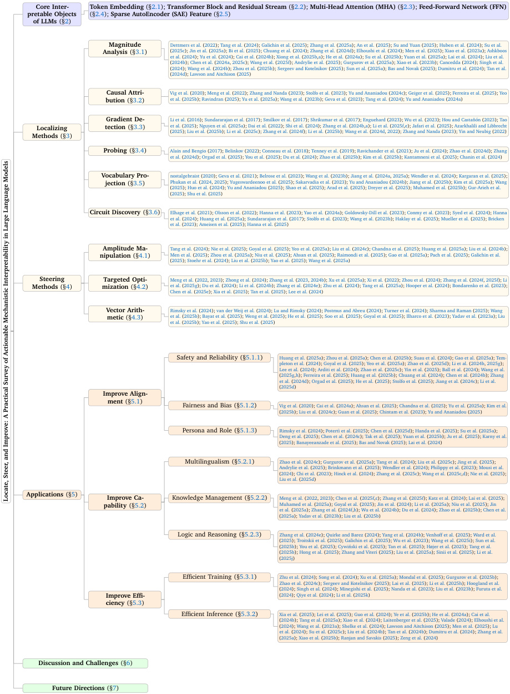
Core Inter- Token Embedding (§2.1); Transformer Block and Residual Stream (§2.2); Multi-Head Attention (MHA) (§2.3); Feed-Forward Network (FFN)
pretable Objects (§2.4); Sparse AutoEncoder (SAE) Feature (§2.5)
of LLMs (§2)
Magnitude Dettmers et al. (2022); Tang et al. (2024); Galichin et al. (2025); Zhang et al. (2025a); An et al. (2025); Su and Yuan (2025); Huben et al. (2024); Su et al.
Analysis (§3.1) (2025c); Jin et al. (2025a); Bi et al. (2025); Chuang et al. (2024); Zhang et al. (2024d); Elhoushi et al. (2024); Men et al. (2025); Xiao et al. (2023a); Ashkboos
et al. (2024); Yu et al. (2024); Cai et al. (2024b); Xiong et al. (2025b,a); He et al. (2024a); Su et al. (2025b); Yuan et al. (2025a); Lai et al. (2024); Liu et al.
(2024b); Chen et al. (2024a, 2025c); Wang et al. (2025f); Andrylie et al. (2025); Gurgurov et al. (2025a); Xiao et al. (2023b); Cancedda (2024); Singh et al.
(2024); Wang et al. (2024b); Zhou et al. (2025b); Sergeev and Kotelnikov (2025); Sun et al. (2025a); Bas and Novak (2025); Dumitru et al. (2024); Tan et al.
(2024d); Lawson and Aitchison (2025)
Causal Attri- Vig et al. (2020); Meng et al. (2022); Zhang and Nanda (2023); Stolfo et al. (2023); Yu and Ananiadou (2024c); Geiger et al. (2025); Ferreira et al. (2025); Yeo
bution (§3.2) et al. (2025b); Ravindran (2025); Yu et al. (2025a); Wang et al. (2023b); Geva et al. (2023); Tang et al. (2024); Yu and Ananiadou (2024a)
Gradient De- Li et al. (2016); Sundararajan et al. (2017); Smilkov et al. (2017); Shrikumar et al. (2017); Enguehard (2023); Wu et al. (2023); Hou and Castañón (2023); Tao
MethodsLocalizing (§3) tection (§3.3) (et al.2025 ();2025 Liu et al.); Nguyen et al. (2025b); Li et al. (2025a ();2025c Dai et al.); Zhang et al. (2022); Shi et al. (2024f); ( Li et al.2024); Zhang et al. (2025b); Wang et al. (2024b,a); ( Li et al.2024d, 2022 (2025f); Zhang and Nanda,e); Jafari et al. (2025 (2023); Azarkhalili and Libbrecht); Yin and Neubig (2022)
Probing (§3.4) Alain and Bengio (2017); Belinkov (2022); Conneau et al. (2018); Tenney et al. (2019); Ravichander et al. (2021); Ju et al. (2024); Zhao et al. (2024d); Zhang
et al. (2024d); Orgad et al. (2025); You et al. (2025); Du et al. (2024); Zhao et al. (2025b); Kim et al. (2025b); Kantamneni et al. (2025); Chanin et al. (2024)
Vocabulary Pro- nostalgebraist (2020); Geva et al. (2021); Belrose et al. (2023); Wang et al. (2023b); Jiang et al. (2024a, 2025a); Wendler et al. (2024); Kargaran et al. (2025);
jection (§3.5) Phukan et al. (2024, 2025); Yugeswardeenoo et al. (2025); Sakarvadia et al. (2023); Yu and Ananiadou (2024b); Jiang et al. (2025b); Kim et al. (2025a); Wang
(2025); Huo et al. (2024); Yu and Ananiadou (2025); Shao et al. (2025); Arad et al. (2025); Dreyer et al. (2025); Muhamed et al. (2025b); Gur-Arieh et al.
(2025); Shu et al. (2025)
Circuit Discovery (§3.6) Elhage et al. (2021); Olsson et al. (2022); Hanna et al. (2023); Yao et al. (2024a); Goldowsky-Dill et al. (2023); Conmy et al. (2023); Syed et al. (2024); Hanna
et al. (2024); Huang et al. (2025a); Sundararajan et al. (2017); Stolfo et al. (2023); Wang et al. (2023b); Haklay et al. (2025); Mueller et al. (2025); Bricken
et al. (2023); Ameisen et al. (2025); Hanna et al. (2025)
Amplitude Ma- Tang et al. (2024); Nie et al. (2025); Goyal et al. (2025); Yeo et al. (2025a); Liu et al. (2024c); Chandna et al. (2025); Huang et al. (2025a); Liu et al. (2024b);
nipulation (§4.1) Men et al. (2025); Zhou et al. (2025a); Niu et al. (2025); Ahsan et al. (2025); Raimondi et al. (2025); Gao et al. (2025a); Pach et al. (2025); Galichin et al.
(2025); Stoehr et al. (2024); Liu et al. (2025b); Yao et al. (2025); Wang et al. (2025a)
Steering Targeted Opti- Meng et al. (2022, 2023); Zhong et al. (2024); Zhang et al. (2023, 2024b); Xu et al. (2025a); Xi et al. (2022); Zhou et al. (2024); Zhang et al. (2024f, 2025f); Li
Methods (§4) mization (§4.2) et al. (2025g); Du et al. (2024); Li et al. (2024b); Zhang et al. (2024e); Zhu et al. (2024); Tang et al. (2025a); Hooper et al. (2024); Bondarenko et al. (2023);
Chen et al. (2025e); Xia et al. (2025); Tan et al. (2025); Lee et al. (2024)
Vector Arith- Rimsky et al. (2024); van der Weij et al. (2024); Lu and Rimsky (2024); Postmus and Abreu (2024); Turner et al. (2024); Sharma and Raman (2025); Wang
metic (§4.3) et al. (2025b); Bayat et al. (2025); Weng et al. (2025); He et al. (2025); Soo et al. (2025); Goyal et al. (2025); Ilharco et al. (2023); Yadav et al. (2023a); Liu
et al. (2025b); Yao et al. (2025); Shu et al. (2025)
Safety and Reliability (§5.1.1) Huang et al. (2025a); Zhou et al. (2025a); Chen et al. (2025b); Suau et al. (2024); Gao et al. (2025a); Tem-
pleton et al. (2024); Goyal et al. (2025); Yeo et al. (2025a); Zhao et al. (2025d); Li et al. (2024b, 2025g);
Lee et al. (2024); Arditi et al. (2024); Zhao et al. (2025c); Yin et al. (2025); Ball et al. (2024); Wang et al.
(2025g,h); Ferreira et al. (2025); Huang et al. (2025b); Chuang et al. (2024); Chen et al. (2024b); Zhang
et al. (2024d); Orgad et al. (2025); He et al. (2025); Stolfo et al. (2025); Jiang et al. (2024c); Li et al.
(2025d)
Improve Align-
ment (§5.1)
Fairness and Bias (§5.1.2) Vig et al. (2020); Cai et al. (2024a); Ahsan et al. (2025); Chandna et al. (2025); Yu et al. (2025a); Kim et al.
(2025b); Liu et al. (2024c); Guan et al. (2025); Chintam et al. (2023); Yu and Ananiadou (2025)
Persona and Role (§5.1.3) Rimsky et al. (2024); Potertì et al. (2025); Chen et al. (2025d); Handa et al. (2025); Su et al. (2025a);
Deng et al. (2025); Chen et al. (2024c); Tak et al. (2025); Yuan et al. (2025b); Ju et al. (2025); Karny et al.
(2025); Banayeeanzade et al. (2025); Bas and Novak (2025); Lai et al. (2024)
Multilingualism (§5.2.1) Zhao et al. (2024c); Gurgurov et al. (2025a); Tang et al. (2024); Liu et al. (2025c); Jing et al. (2025);
Andrylie et al. (2025); Brinkmann et al. (2025); Wendler et al. (2024); Philippy et al. (2023); Mousi et al.
(2024); Chi et al. (2023); Hinck et al. (2024); Zhang et al. (2025c); Wang et al. (2025c,d); Nie et al. (2025);
Liu et al. (2025d)
Applications (§5) Improve Ca- Knowledge Management (§5.2.2) Meng et al. (2022, 2023); Chen et al. (2025f,c); Zhang et al. (2025f); Katz et al. (2024); Lai et al. (2025);
pability (§5.2) Muhamed et al. (2025a); Goyal et al. (2025); Jin et al. (2024); Li et al. (2025a); Niu et al. (2025); Jin
et al. (2025a); Zhang et al. (2024f,b); Wu et al. (2024b); Du et al. (2024); Zhao et al. (2025b); Chen et al.
(2025a); Yadav et al. (2023b); Liu et al. (2025b)
Logic and Reasoning (§5.2.3) Zhang et al. (2024e); Quirke and Barez (2024); Yang et al. (2024b); Venhoff et al. (2025); Ward et al.
(2025); Troitskii et al. (2025); Galichin et al. (2025); Wu et al. (2023); Wang et al. (2025i); Sun et al.
(2025b); You et al. (2025); Cywiński et al. (2025); Tan et al. (2025); Højer et al. (2025); Tang et al.
(2025b); Hong et al. (2025); Zhang and Viteri (2025); Liu et al. (2025a); Sinii et al. (2025); Li et al.
(2025j)
Efficient Training (§5.3.1) Zhu et al. (2024); Song et al. (2024); Xu et al. (2025a); Mondal et al. (2025); Gurgurov et al. (2025b);
Zhao et al. (2024c); Sergeev and Kotelnikov (2025); Lai et al. (2025); Li et al. (2025h); Hoogland et al.
(2024); Singh et al. (2024); Minegishi et al. (2025); Nanda et al. (2023); Liu et al. (2023b); Furuta et al.
Improve Effi- (2024); Qiye et al. (2024); Li et al. (2025k)
ciency (§5.3)
Efficient Inference (§5.3.2) Xia et al. (2025); Lei et al. (2025); Guo et al. (2024); Ye et al. (2025b); He et al. (2024a); Cai et al.
(2024b); Tang et al. (2025a); Xiao et al. (2024); Laitenberger et al. (2025); Valade (2024); Elhoushi et al.
(2024); Wang et al. (2023a); Shelke et al. (2024); Lawson and Aitchison (2025); Men et al. (2025); Lu
et al. (2024); Su et al. (2025c); Liu et al. (2024b); Tan et al. (2024b); Dumitru et al. (2024); Zhang et al.
(2025a); Xiao et al. (2025b); Ranjan and Savakis (2025); Zeng et al. (2024)
Discussion and Challenges (§6)
Future Directions (§7)
A Practical Survey of Actionable Mechanistic Interpretability in Large Language ModelsLocate, Steer, and Improve:
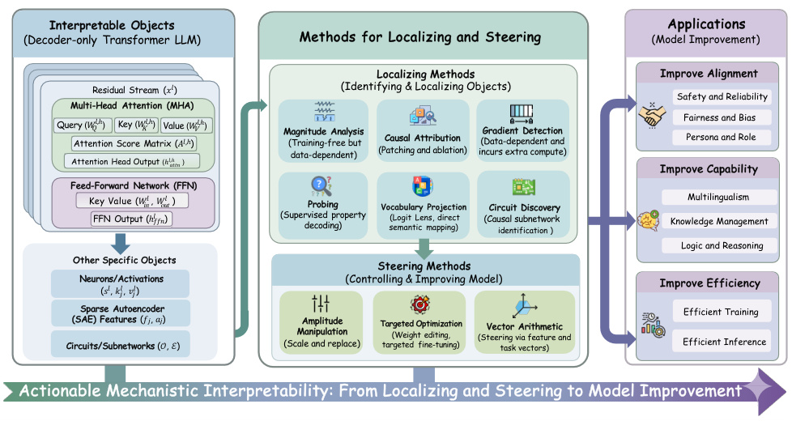
Interpretable Objects Applications
(Decoder-only Transformer LLM) Methods for Localizing and Steering (Model Improvement)
Localizing Methods Improve Alignment
Residual Stream (𝑥 𝑙 ) (Identifying & Localizing Objects)
Safety and Reliability
Multi-Head Attention (MHA)
QueryAttention (𝑊𝑄 𝑙,ℎ ) ScoreKey (𝑊KMatrix 𝑙,ℎ ) Value(𝐴 𝑙 ( ,ℎ 𝑊)V 𝑙,ℎ ) Magnitude Analysis (Training-free but Causal Attribution (Data-dependent and Gradient Detection Fairness and BiasPersona and Role
data-dependent) (Patching and ablation) incurs extra compute)
Attention Head Output (ℎ 𝑙,ℎ 𝑎𝑡𝑡𝑛 )
Improve Capability
Feed-Forward Network (FFN)
Key Value (𝑊 in 𝑙 , 𝑊 out 𝑙 ) Probing Vocabulary Projection Circuit Discovery Multilingualism
FFN Output (ℎ 𝑙 𝑓𝑓𝑛) (Superviseddecoding)property semantic mapping)(Logit Lens, direct (Causal subnetworkidentification ) Knowledge Management
Logic and Reasoning
Other Specific Objects
Steering Methods
Neurons/Activations (Controlling & Improving Model) Improve Efficiency
(𝑠 𝑙 , 𝑘𝑗 𝑙 , 𝑣𝑗 𝑙 )
Sparse Autoencoder Efficient Training
Circuits/Subnetworks (SAE) Features (𝑓𝑗, 𝑎(𝑗𝒪), ℰ) (Scale and replace) ManipulationAmplitude Targeted targeted fine-tuning)(Weight editing, Optimization (Steering via feature and Vector Arithmetic task vectors) Efficient Inference
Actionable Mechanistic Interpretability: From Localizing and Steering to Model Improvement
Figure 1: Overview of the paper structure. We begin by defining the core interpretable objects (§2) that form the foundation of our analysis. We then introduce a range of methods, ranging from localization (§3) to steering (§4). Finally, we illustrate how these methods can be applied to improve models (§5).
1. Introduction
Large Language Models (LLMs) have recently achieved remarkable success, demonstrating outstanding performance across a wide spectrum of applications, ranging from complex reasoning and multilingualism, to highly specialized domains (Li et al., 2025i; Ren et al., 2025b; Dubey et al., 2024; OpenAI et al., 2024; Liang et al., 2025; Qin et al., 2025; Yang et al., 2024a; Chang et al., 2025; Li et al., 2024a; Zhao et al., 2024b; Yu et al., 2025c; Qwen et al., 2025). Despite these advancements, a critical challenge remains: the internal decision-making processes of these models are largely opaque, often operating as “black boxes.” This lack of transparency poses significant risks, particularly in safety-critical applications, and severely limits our ability to efficiently debug, control, and optimize model behaviors (Huang et al., 2024a; Hong et al., 2024; Zhang et al., 2025e). Consequently, Mechanistic Interpretability (MI) has emerged as a pivotal research direction. Unlike traditional behavioral analysis, MI aims to “reverse-engineer” these complex neural networks, decomposing their intricate computations into understandable components and causal mechanisms (Ferrando et al., 2024; Zhao et al., 2024a; Geiger et al., 2025).
Current research in this field generally falls into two categories. A significant body of work focuses on the theoretical and foundational aspects of MI (Räuker et al., 2023; Allen-Zhu and Li, 2023; Ferrando et al., 2024; Zhao et al., 2024a; Zheng et al., 2024; Saphra and Wiegreffe, 2024; López-Otal et al., 2025; Geiger et al., 2025; Gantla, 2025). These studies provide technical roadmaps for dissecting Transformer architectures and identifying fundamental units. However, they primarily prioritize scientific discovery —aiming to elucidate the model’s inner working mechanisms for the sake of understanding itself. They typically treat MI as an observational science, leaving the question of how to translate these microscopic insights into practical model improvements underexplored.
Recognizing the applied potential of interpretability, a second line of work has begun to bridge
the gap between theoretical understanding and practical utilization . These surveys discuss how MI techniques can be leveraged to aid downstream tasks or assist in specific domains (Luo and Specia, 2024; Wu et al., 2024a; Rai et al., 2024; Bereska and Gavves, 2024; Lee et al., 2025; Resck et al., 2025; Lin et al., 2025). However, despite their contributions, these existing reviews face two primary limitations that hinder broader adoption. First, they often lack a sufficient categorization and clear definition of MI methods within practical application contexts. The distinction between diagnostic tools and intervention techniques is frequently blurred. Second, their coverage of applications is often incomprehensive, and the illustration of methods is typically too general. This high-level abstraction makes it difficult for researchers to translate theoretical mechanistic insights into actionable interventions for specific problems. This gap is particularly critical at the current stage of AI development. While the rapid progress of LLMs has been predominantly driven by external scaling factors , e.g., larger models, more data, and increased computational resources, this paradigm for model improvement is increasingly encountering bottlenecks. We argue that further advancements must be refined through a deeper understanding of internal mechanisms, shifting the focus from simply scaling the “outside” to surgically improving the model from the “inside.” However, the field currently lacks a unified guide that systematically categorizes these internal methodologies and presents a concrete pipeline for active model improvement.
To address these challenges, we propose the “Locate, Steer, and Improve” pipeline. This conceptual framework is designed to systematically transform MI from a passive observational science into an actionable intervention discipline. Our work makes the following key contributions:
-
1) A Rigorous Pipeline-Driven Framework: We establish a structured framework for applying MI to real-world model optimization. We begin by defining the core Interpretable Objects within LLMs (e.g., neurons, attention heads, residual streams). Based on the application workflow, we clearly categorize methodologies into two distinct stages: Localizing (Diagnosis), which identifies the causal components responsible for specific behaviors, and Steering (Intervention), which actively manipulates these components to alter model outputs. Crucially, for each technique, we provide a detailed Methodological Formulation along with its Applicable Objects and Scope , helping readers quickly understand the technical implementation and appropriate use cases.
-
2) Comprehensive Paradigms for Application: We provide an extensive survey of MI applications organized around three major themes: Improve Alignment , Improve Capability , and Improve Efficiency . These themes cover eight specific scenarios, ranging from safety and multilingualism to efficient training. Instead of merely listing relevant papers, we summarize representative MI application paradigms for each scenario. This approach allows readers to quickly capture the distinct usage patterns of MI techniques across different application contexts, facilitating the transfer of methods to new problems.
-
3) Insights, Resources, and Future Directions: We critically discuss the current challenges in actionable MI research and outline promising future directions. To facilitate further progress and lower the barrier to entry, we curate a comprehensive collection of over 200 papers , which are listed in Table 2. These papers are systematically tagged according to their corresponding localizing and steering methods, providing a practical and navigable reference for the community.
Table 1: Core interpretable objects of LLMs and their mathematical notations in this paper. Here, dimensions are denoted as follows: d model is the model dimension, T is the sequence length, |V| is the vocabulary size, H is the number of attention heads, d head is the head dimension ( d model/ H ), d ffn is the FFN hidden dimension, and d SAE is the dictionary size of the Sparse Autoencoder.
| Object | Notation | Shape | |
|---|---|---|---|
| Token Embedding(§2.1) | Embedding Matrix Token_i_Embedding (Input) |
WE x0 i |
R_ |
| Residual Stream(§2.2) | Residual Stream State Intermediate State (Post-Attn) |
xl xl,mid |
R_T×d_model R_T×d_model |
| MHA(§2.3) | Q, K, V, O Weight Matrices Attention Score Matrix Head Output Block Output |
Wl,h Q,K,V,O Al,h hl,h attn hlattn |
Rd_model×d_head /Rd_head×d_model RT×T R_T×d_model R_T×d_model |
| FFN(§2.4) | In Projection (Key) Matrix Out Projection (Value) Matrix Block Output |
Wl in Wlout hl ffn |
Rd_model×d_ffn Rd_ffn×d_model R_T×d_model |
| Neuron(§2.4) | Neuron Activation State j-th Neuron Activation |
sl sl j |
R_d_ffn R(Scalar) |
| j-th Neuron Key Weight | kl j |
R_d_model | |
| j-th Neuron Value Weight | vl j |
R_d_model | |
| SAE Feature(§2.5) | Feature Activation State | a | R_d_SAE |
| j-th Feature Activation j-th Feature |
aj fj |
R(Scalar) R_d_model |
2. Core Interpretable Objects of LLMs
In this section, we establish a unified mathematical formulation for the core interpretable objects within LLMs. We focus specifically on the decoder-only Transformer architecture (Radford et al., 2019), which serves as the predominant framework for contemporary state-of-the-art models (Dubey et al., 2024; OpenAI et al., 2024; Qwen et al., 2025). We present the core interpretable objects and their corresponding mathematical notations in Table 1.
2.1. Token Embedding
The entry point of the model maps discrete tokens from a vocabulary V to continuous vector representations. We define the Embedding Matrix as W E ∈ R_|V|×d_model , where |V| denotes the vocabulary size and d model represents the hidden dimension of the model. For a given input token ti at position i , its Token Embedding —which also serves as the initial state of the residual stream, denoted as x0 i—is obtained by retrieving the corresponding vector from W E and adding positional information:
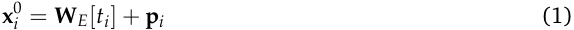
where p i is the positional embedding vector. It is worth noting that while earlier architectures used absolute positional embeddings added at the input, modern LLMs (Dubey et al., 2024; OpenAI et al., 2024; Qwen et al., 2025) typically employ Rotary Positional Embeddings (RoPE) (Su et al., 2024).
In these architectures, positional information is applied directly to the query and key vectors within the attention mechanism rather than to the residual stream at the embedding layer.
2.2. Transformer Block and Residual Stream
Typically, an LLM is composed of L stacked layers. Each layer l consists of two primary blocks: a Multi-Head Attention (MHA) block and a Feed-Forward Network (FFN) block. The fundamental communication channel connecting these blocks is the residual stream .
As illustrated in Figure 2, the residual stream acts as the central “highway” for information propagation (Elhage et al., 2021; Bricken and Pehlevan, 2021; Meng et al., 2022, 2023; Zhang et al., 2024b). It preserves a shared memory state that is iteratively updated by the blocks. The update dynamics for the residual stream state1 xl at layer l are defined as follows:
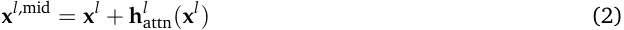
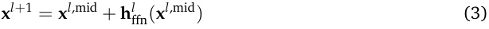
where xl,mid represents the intermediate state after the MHA block but before the FFN block.2
This additive structure—where xl+1 = xl + MHA( xl ) + FFN( xl + MHA( xl ))—is critical for MI analysis. It implies that features in the residual stream can be viewed as linear combinations of outputs from all previous components. This property enables the decomposition of the model’s final prediction into individual component contributions, facilitating methods like “Logit Lens” (nostalgebraist, 2020; Wang, 2025; Li and Gao, 2025) and causal mediation analysis (Meng et al., 2022, 2023; GoldowskyDill et al., 2023; Syed et al., 2024; Yeo et al., 2025b).
2.3. Multi-Head Attention (MHA)
The Multi-Head Attention mechanism allows tokens to contextualize information by attending to other positions in the sequence. It consists of H independent heads, which primarily manage information routing and the resolution of contextual dependencies (Elhage et al., 2021; Olsson et al., 2022; Voita et al., 2019; Feng and Steinhardt, 2023; Men et al., 2024).
Standard Formulation For a specific head h at layer l , we define the learnable weight matrices as Wl Q,h,Wl K,h,W Vl,h∈Rd_model×d_headandtheoutputprojectionmatrixasW Ol,h∈Rd_head×d_model.Here,T denotes the sequence length, the attention mechanism first computes the attention score matrix Al,h ∈ RT×T , which represents the relevance of each token to every other token:
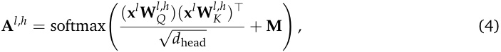
where M ∈ RT×T denotes the attention mask that prevents attention to invalid positions (e.g., future tokens in causal attention or padding tokens).
1Here, x l ∈ R T×d model represents the token-wise residual stream state of the input sequence at layer l , with T tokens and hidden dimension d model.
2For simplicity and clarity in our mechanistic analysis, we omit Layer Normalization (LayerNorm or RMSNorm) terms from these equations. While crucial for training stability, normalization operations are often abstracted away in high-level interpretability studies to focus on the additive composition of features.
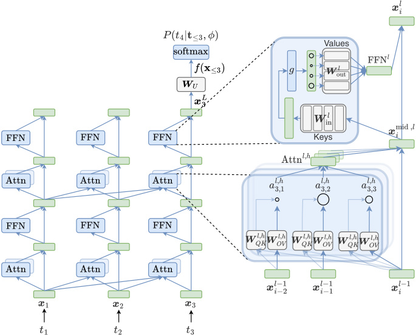
Values
Keys
Figure 2: The schematic of information flow within a standard Transformer block. The residual stream ( x l ) serves as the backbone, while MHA and FFN act as additive branches that read from and write to this stream. Based on the figure from Ferrando et al. (2024).
Functionally, attention heads “read” information from the residual stream of previous tokens via the query–key subspace projections, and then “write” the attended information back to the current position via the value and output projections. The output for a single head h , denoted as h attnl,h, is computed as:
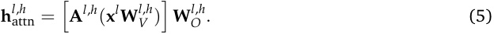
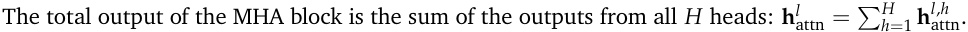
Mechanistic View: QK and OV Units While the standard formulation describes how attention is computed, the unit perspective (Elhage et al., 2021) offers deeper insight into what task each head performs. As illustrated in the detailed view of Figure 2, each head can be decomposed into two functionally distinct units:
1) The QK Unit (W QK ): This unit determines where to attend. By merging the query and key matrices into a single low-rank matrix Wl QK,h=Wl Q,h(Wl K,h)⊤, the attention pattern depends directly on the interaction between residual stream states. The attention score ail ,, jh(e.g.,a_3,1in Figure 2) is derived from the bilinear form ( x il)⊤_Wl QK,hxl j.
2) The OV Unit (W OV ): This unit determines what information is transmitted. By merging the value and output matrices into W OVl,h=W Vl,hW Ol,h, we can view the head’s operation as reading a vector from the source token j , transforming it linearly via W OVl,h, and adding it to the destination tokeni, weighted by the attention score. This separation allows researchers to classify heads into distinct
roles, such as “Induction Heads” (which copy previous tokens) or “Previous Token Heads” (Olsson et al., 2022; Singh et al., 2024; Wang et al., 2024b).
2.4. Feed-Forward Network (FFN)
Standard Formulation The Feed-Forward Network block acts as a position-wise feature transformer. Unlike attention heads, FFNs operate independently on each token position, applying non-linear transformations to the input. They are often conceptualized as “Key-Value” memories, where the first layer projects the stream into a high-dimensional state (detecting patterns or “Knowledge Keys”) and the second layer writes the retrieved knowledge back to the stream (Geva et al., 2021, 2022; Dai et al., 2022).
Mathematically, the output of the FFN block h ffn_l_is given by :3
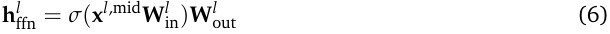
where xl,mid is the input to the FFN, and σ is a non-linear activation function. The weight matrices are defined as W inl∈Rd_model×d_ffnandW outl∈Rd_ffn×d_model.
Mechanistic View: Neurons In this context, the neuron j is defined as an atomic unit comprised of a pair of weights: the key weight kl j(thej-th row ofW inl) and thevalue weightvl j(thej-th column of W outl).The intermediate statesl=σ(xl,midW inl) represents the vector ofneuron activation.
2.5. Sparse Autoencoder (SAE) Feature
While the internal objects described above (e.g., neuron activation sl or residual stream state xl ) are fundamental to the model’s operation, they are often polysemantic . This is due to the phenomenon of superposition , where neural networks represent more features than they have physical neurons by encoding them as nearly orthogonal directions in the high-dimensional activation space (Elhage et al., 2022). Consequently, a single neuron may activate for multiple unrelated concepts, making direct interpretation difficult.
Sparse Autoencoders (SAEs) provide a principled method to resolve this by disentangling dense, polysemantic representations into monosemantic features (Bricken et al., 2023). As illustrated in Figure 3, an SAE acts as a “microscope” for the LLM. It projects low-dimensional dense activations into a higher-dimensional sparse latent space, effectively “unpacking” the superposition.
Mathematical Formulation SAEs are trained in a layer-wise manner as independent modules attached to a specific object of a frozen LLM. They can be applied to nearly all internal objects, including neuron activation sl , residual stream state xl , MHA output h attnl, and FFN outputh ffnl(Lieberum et al., 2024; He et al., 2024c). For instance, when applying an SAE to reconstruct a residual stream
3While we use the standard formulation above to keep notation compact, it is important to note that many modern LLMs employ gated variants such as SwiGLU (Shazeer, 2020). These variants introduce an additional gating matrix W gatel and combine an element-wise gate with the projection before the final output: h ffnl= (︁SiLU( xl,mid W gatel ) ⊙ ( xl,mid W inl) )︁ W outl . For the sake of generality, we present the standard FFN formulation here.
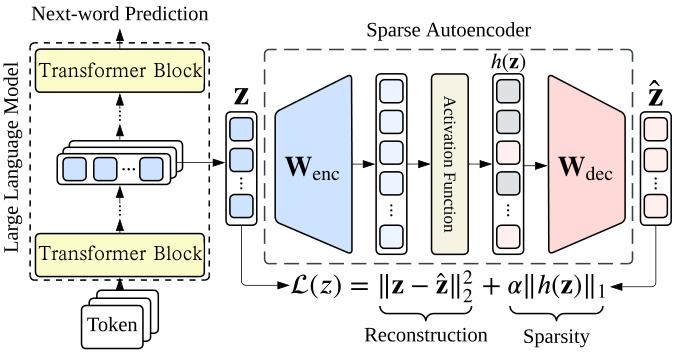
Next - word Prediction
Sparse Autoencoder
Transformer Transfomer Block Block
...
Transformer Transfomer Block Block
Token
Reconstruction Sparsity
Figure 3: The framework of Sparse Autoencoders (SAEs). The SAE acts as an independent module attached to a frozen LLM, expanding dense representations into a sparse, overcomplete set of interpretable features via an encoder-decoder architecture. Based on the figure from Shu et al. (2025).
state xl , the forward pass is defined as:
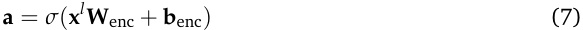
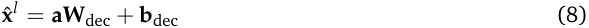
where W enc ∈ Rd_model×d_SAE and W dec ∈ Rd_SAE×d_model are learnable weights. A critical hyperparameter here is the Expansion Factor —the ratio of d SAE to d model. To capture the vast number of features hidden in superposition, d SAE is typically set to be 16 × to 128 × larger than the model dimension (Cunningham et al., 2023; Templeton et al., 2024; Bloom, 2024; Ghilardi et al., 2024; Mudide et al., 2024; Lieberum et al., 2024; He et al., 2024c).
The training objective is to minimize the reconstruction error while enforcing sparsity on the latent activations a :
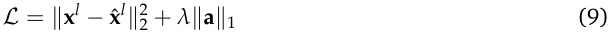
In this framework, the SAE feature f j (the j -th row of W dec) represents a distinct semantic direction in the activation space. The SAE feature activation aj (the j -th element of a ) quantifies the strength of this feature in the current input. Crucially, this decomposition transforms opaque vectors into an actionable vocabulary, allowing researchers to steer model behavior by targeting these granular, interpretable features (Templeton et al., 2024; Lieberum et al., 2024; He et al., 2025; Xu et al., 2025b; Cho and Hockenmaier, 2025; Li et al., 2025d).
Challenges Training high-quality SAEs presents several practical and conceptual challenges. One common issue is dead latents , where a substantial fraction of latent features remain inactive throughout training, effectively wasting model capacity. Methods such as ghost gradients and periodic resampling are often used to reactivate such units and improve feature utilization (Bricken et al., 2023; Shu et al., 2025). Another challenge is feature absorption , in which broad and high-frequency features dominate training and suppress more specific, low-frequency features, making the learned representation less fine-grained and less interpretable. To address these issues, several improved variants, including Gated SAEs , Top-K SAEs , BatchTopK SAEs , JumpReLU SAEs , and Binary SAEs , have been proposed to improve feature quality, sparsity control, and reconstruction fidelity (Gao et al., 2024; Rajamanoharan et al.,
2024a; Bussmann et al., 2024; Rajamanoharan et al., 2024b; Cho et al., 2025). Beyond optimization difficulty, computational cost is a major barrier to the broader adoption of SAEs. Because SAEs are typically trained separately for individual layers, scaling them to modern LLMs requires repeating this process across many layers and often across multiple activation sites. As model size increases, the number of layers, hidden dimensions, and candidate latent features also grows, which substantially increases training time, memory usage, and storage cost. This challenge is further amplified by the highly overcomplete latent spaces commonly used in SAE training, which are often necessary to obtain sparse and interpretable features (Ghilardi et al., 2024; Templeton et al., 2024; Mudide et al., 2024). As a result, training high-quality SAEs at scale remains expensive and can limit their use to only a subset of layers or models. A further concern is faithfulness. Since SAEs act as replacement or surrogate models for the original activations, their usefulness depends critically on how well they reconstruct the original internal states while preserving downstream behavior. If reconstruction quality is imperfect, even small residual errors may accumulate and cause the SAE-reconstructed activations to deviate from the original model dynamics (Lieberum et al., 2024; He et al., 2024c).
3. Localizing Methods
Localizing Methods aim to identify interpretable objects that are responsible for a particular behavior or encode specific information. These techniques serve as a diagnostic step to narrow down the search space to manageable functional units. By pinpointing key components such as specific neurons, attention heads, or SAE features, they provide the necessary foundation for subsequent detailed mechanism analysis and targeted model steering.
3.1. Magnitude Analysis
Methodological Formulation Magnitude Analysis methods serve as a fundamental heuristic in interpretability, operating on the premise that internal elements with larger numerical values often exert greater influence on the model’s computation. It scores internal objects via a scalar function to identify salient components (Dettmers et al., 2022; Tang et al., 2024; Galichin et al., 2025).
Formally, consider a set of internal objects O = {o 1, o 2, . . . , oN} , where each oj represents a candidate element (e.g., a specific weight parameter row, a neuron, an SAE feature, or an attention head). We define an Importance Score sj for each object using a magnitude function f ( · ):
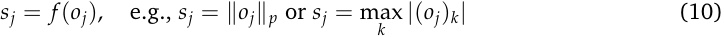
Common choices for f ( · ) include the L 2-norm ( ∥·∥ 2) to measure the aggregate energy, the L ∞-norm (max-value) to capture peak activation, or frequency-based metrics. Based on these scores, a subset of salient objects O salient is selected for further inspection or intervention, typically via a thresholding mechanism or a top- k ranking:
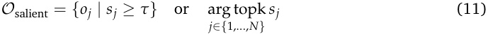
Applicable Objects This method applies broadly to both static structure and dynamic computation. We categorize the applicable objects as follows:
1) Static Parameters: In the context of model weights, Magnitude Analysis is often used to identify outliers or “heavy hitters” without running inference. Researchers typically compute perweight or per-row norms of weight matrices (e.g., ∥ W in[ j , :] ∥ ) to highlight parameters that dominate the inner product computations. These high-magnitude weights are often associated with critical knowledge storage or outlier features (Dettmers et al., 2022; Xiao et al., 2023a; Ashkboos et al., 2024; Yu et al., 2024; Cai et al., 2024b; Xiong et al., 2025b,a; He et al., 2024a; Zhang et al., 2025a; An et al., 2025; Su and Yuan, 2025; Su et al., 2025b; Yuan et al., 2025a; Jin et al., 2025a; Han et al., 2026).
2) Dynamic Components (Neurons, SAE Features, or Attention Heads): For functional units whose activity varies with input, ranking them by their activation statistics helps localize specialized capabilities (Tang et al., 2024; Lai et al., 2024; Galichin et al., 2025; Liu et al., 2024b; Chen et al., 2024a, 2025c; Bi et al., 2025; Wang et al., 2025f; Andrylie et al., 2025; Gurgurov et al., 2025a).
- Specialized Neurons and SAE Features: By feeding domain-specific datasets into the model and monitoring activations (e.g., neuron activation state sl or SAE feature activation state a ),
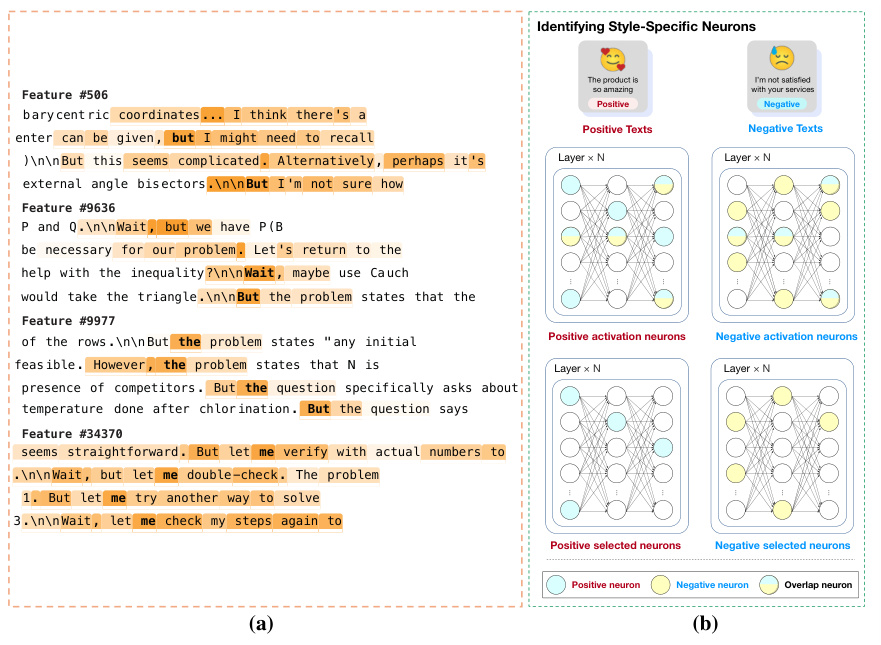
Identifying Style-Specific Neurons
The product is I’m not satisfied
Feature #506 so amazing with your services
Positive Negative
b ary cent ric coordinates ... I think there 's a
Positive Texts Negative Texts
enter can be given , but I might need to recall
)\n\n But this seems complicated . Alternatively , perhaps it 's Layer × N Layer × N
external angle bis ectors .\n\n But I 'm not sure how
Feature #9636
P and Q .\n\n Wait , but we have P (B
be necessary for our problem . Let 's return to the
help with the inequality ?\n\n Wait , maybe use Ca uch
would take the triangle .\n\n But the problem states that the
Feature #9977
of the rows .\n\n But the problem states " any initial Positive activation neurons Negative activation neurons
feas ible . However , the problem states that N is Layer × N Layer × N
presence of competitors . But the question specifically asks about
temperature done after chlor ination . But the question says
Feature #34370
seems straightforward . But let me verify with actual numbers to
.\n\n Wait , but let me double -check . The problem
1 . But let me try another way to solve
3 .\n\n Wait , let me check my steps again to
Positive selected neurons Negative selected neurons
Positive neuron Negative neuron Overlap neuron
(a) (b)
… … … … … …
… … … … … …
Figure 4: Localization via Magnitude Analysis. (a) Discovery of SAE reasoning features (Galichin et al., 2025): SAE features are scored using ReasonScore , which aggregates activation magnitude and frequency during reasoning steps, isolating sparse features that encode cognitive behaviors like uncertainty or reflection. (b) Identification of Style-Specific Neurons (Lai et al., 2024): Neurons are ranked by their average activation magnitude on style-specific corpora, revealing clusters that selectively activate for distinct linguistic styles.
researchers can isolate components dedicated to specific concepts. For instance, in the context of higher-level reasoning, Galichin et al. (2025) utilized SAEs to disentangle the residual stream state xl . As shown in Figure 4 (a), they proposed a metric called ReasonScore , which aggregates the activation frequency and magnitude of SAE features aj specifically during “reasoning moments” (e.g., when the model meets tokens like “Wait” or “Therefore”). By ranking features based on this score, they successfully localized Reasoning-Relevant SAE features that encode abstract concepts like uncertainty or exploratory thinking. Similarly, for style transfer, Lai et al. (2024) employed Magnitude Analysis to identify Style-Specific Neurons . As illustrated in Figure 4 (b), they calculated the average activation magnitude of FFN neurons across corpora with distinct styles (e.g., positive vs. negative). Neurons that exhibited significantly higher average activation for the source style compared to the target style were identified as “Source-Style Neurons,” serving as candidates for subsequent deactivation.
- Attention Heads: The magnitude and distribution of attention scores ( Al,h ) serve as a direct indicator of a head’s functional role (Xiao et al., 2023b; Cancedda, 2024; Singh et al., 2024; Wang et al., 2024b; Bi et al., 2025; Zhou et al., 2025b; Sergeev and Kotelnikov, 2025). For instance, Zhou et al. (2025b) introduced the Safety Head ImPortant Score (Ships) , which aggregates attention weights on refusal-related tokens to localize “Safety Heads” critical for model alignment. In the multimodal domain, Sergeev and Kotelnikov (2025) and Bi et al. (2025) measured the
concentration of attention mass on image tokens versus text tokens, successfully pinpointing heads responsible for visual perception and cross-modal processing. Similarly, Singh et al. (2024) measured “induction strength”—derived from the attention probability assigned to token repetition patterns—to track the formation and importance of Induction Heads.
3) Layer-wise Representations: Furthermore, measuring the magnitude of layer-wise distances reveals structural roles. Comparing representations across contrastive inputs (e.g., ∥ xl − x′ l ∥ ) localizes layers where task-specific information diverges most strongly (Chuang et al., 2024; Zhang et al., 2024d; Sun et al., 2025a; Bas and Novak, 2025), whereas comparing consecutive layers (e.g., ∥ xl − xl+1 ∥ ) identifies layers with minimal state updates, pointing to redundant computation (Dumitru et al., 2024; Elhoushi et al., 2024; Tan et al., 2024d; Lawson and Aitchison, 2025; Men et al., 2025).
Characteristics and Scope The scope of Magnitude Analysis for dynamic quantities is characterized as training-free but data-dependent .
-
Advantages: It does not require training auxiliary classifiers or performing computationally expensive backward passes. This makes it highly scalable and suitable for analyzing large models in real-time.
-
Limitations: It serves primarily as a lightweight heuristic . High activation magnitude implies high presence but does not guarantee causal necessity (e.g., a high-magnitude feature might be cancelled out by a subsequent layer). Furthermore, its success relies heavily on the quality of the input data; if the dataset fails to elicit the specific behavior, the relevant components will remain dormant. Therefore, Magnitude Analysis is typically used as a “first-pass” screening tool to filter candidate objects for more rigorous verification methods.
3.2. Causal Attribution
Methodological Formulation Causal Attribution methods constitute the gold standard for localization in MI. Unlike correlation-based analyses, these techniques identify which internal objects are causally responsible for a specific model behavior by systematically measuring the effect of controlled interventions (Vig et al., 2020; Meng et al., 2022; Zhang and Nanda, 2023; Stolfo et al., 2023; Yu and Ananiadou, 2024c; Geiger et al., 2025; Ferreira et al., 2025; Yeo et al., 2025b). Formally, let F ( · ) denote a scalar model output of interest, such as the logit or probability of a target token. Let o be an internal object (e.g., a neuron activation sl jor a head outputh attnl,h) defined in §2. To evaluate the causal effect of o , we compare the model’s output under a counterfactual intervention against the baseline state:
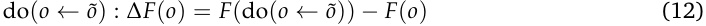
where F ( o ) represents the model’s behavior in the standard “clean” run, and do( o ← o ˜) represents the intervention where the object o is forced to take on a modified value o ˜ while all other causal factors are held constant (ceteris paribus). The intervention typically takes two forms: Patching (where o ˜ is an activation computed from a counterfactual input) or Ablation (where o ˜ is set to zero or a mean vector). A large magnitude | ∆ F ( o ) | indicates that the object o acts as a critical mediator or information node for the behavior encoded by F .
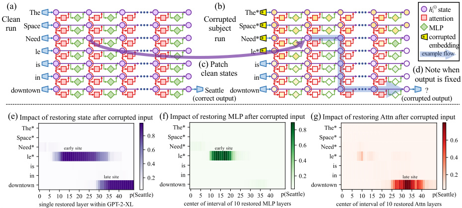
(a) The (b) The* h(l)i state
Clean Corrupted attention
run Space subject Space* MLP
Need run Need* corrupted
embedding
le le* example flow
is (c) Patch is
clean states (d) Note when
in in output is fixed
downtown Seattle downtown ?
(correct output) (corrupted output)
(e) (f) (g)
early site early site
late site late site
*
Figure 5: Overview of Causal Tracing . The method identifies critical internal states by creating a corrupted run (noising the subject “Space Needle”) and systematically restoring clean states to see which ones recover the prediction “Seattle”. The heatmap results reveal that factual information is processed in early MLP layers at the subject position and later transferred to the final token via attention. Based on the figure from Meng et al. (2022).
Applicable Objects This analysis primarily targets dynamic objects involved in the inference process, including the residual stream state xl , the output of FFN hl f f n, and the output of specific attention head hl,h attn.
1) Patching (Interchange Intervention): This approach replaces an object computed from the original input with one computed from a counterfactual input to isolate specific information pathways. By systematically patching across layers and positions, one can localize exactly where task-specific information (e.g., factual knowledge) is introduced or transformed (Meng et al., 2022; Zhang and Nanda, 2023; Yeo et al., 2025b; Ravindran, 2025; Yu et al., 2025a).
We exemplify this mechanism using Causal Tracing (Meng et al., 2022), a representative technique designed to localize factual associations (e.g., “The Space Needle” → “Seattle”). As illustrated in Figure 5, this process involves three key steps:
-
Corrupted Run (Intervention): First, the specific knowledge is erased from the model’s computation. A corrupted input is created by adding Gaussian noise to the embeddings of the subject tokens (e.g., “Space Needle”), causing the probability of the correct prediction (“Seattle”) to drop significantly.
-
Patched Run (Restoration): The core operation systematically restores specific internal states. For a specific layer l and token position i , the method copies the hidden activation from a separate original clean run and pastes (restores) it into the corrupted computation graph.
-
Effect Measurement: The causal effect is quantified by the Indirect Effect (IE) , which measures how much of the original target probability is recovered by this restoration. A high IE score implies that the patched state at ( l , i ) carries critical information.
Through this rigorous process, Meng et al. (2022) revealed that factual recall relies on two distinct localized mechanisms: an early retrieval phase in the FFN blocks at subject tokens, and a late
information transport phase in the MHA blocks at the final token.
2) Ablation (Knockout): Alternatively, ablation-based attribution explicitly “zeros out” or removes objects, such as masking specific attention heads hl attn,_h_orneurons,andmeasurestheresulting performance drop to determine their causal necessity (Wang et al., 2023b; Geva et al., 2023; Yu and Ananiadou, 2024c; Tang et al., 2024; Yu and Ananiadou, 2024a). This rigorous verification has been applied across various domains: Wang et al. (2023b) and Yu and Ananiadou (2024c) employed ablation to isolate minimal heads responsible for indirect object identification and incontext learning, respectively. In the context of specialized capabilities, Yu and Ananiadou (2024a) utilized pruning (permanent ablation) to identify heads critical for arithmetic reasoning, while Tang et al. (2024) masked specific neurons to demonstrate the existence of language-specific functional regions. Furthermore, Geva et al. (2023) applied blocking interventions to dissect the precise roles of FFN value vectors in factual recall mechanisms.
Characteristics and Scope The scope of Causal Attribution is characterized as rigorously causal but computationally intensive .
-
Advantages: Unlike Magnitude Analysis (§3.1), which only establishes correlation, Causal Attribution provides definitive evidence that a component is a functional driver of the model’s output. This allows researchers to distinguish essential mechanisms from features that are highly activated but causally irrelevant to the specific behavior.
-
Limitations: This rigor incurs a significant computational overhead. Verifying causality typically requires intervening on objects individually and performing a separate forward pass for each intervention. Consequently, the cost scales linearly with the number of objects analyzed, making it prohibitively expensive for dense, sweeping searches over large models. This inefficiency often necessitates the use of Gradient Detection (§3.3), which utilizes gradients to rapidly approximate these causal effects, enabling efficient screening before performing expensive, fine-grained interventions.
3.3. Gradient Detection
Methodological Formulation Gradient Detection methods localize influential internal objects by scoring them with the sensitivity of a scalar target F ( x ) (e.g., a logit, margin, or loss) with respect to an object oj : sj ( x ) = ϕ ( ∇oj F ( x ), oj ), where common instantiations include the gradient norm sj = ∥∇oj F ( x ) ∥ and the gradient–input score sj = ∇oj F ( x )⊤ oj (Li et al., 2016; Sundararajan et al., 2017). These scores serve as fast, first-order proxies for intervention effects. Specifically, under an additive modification oj �→ oj + ∆ oj , a first-order Taylor expansion yields
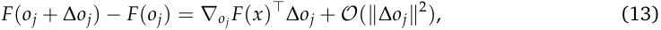
indicating that the dot product ∇oj F ( x )⊤ ∆ oj represents the directional derivative of F along ∆ oj . A common local “removal” surrogate sets ∆ oj = −oj , giving F ( oj − oj ) − F ( oj ) ≈−∇oj F ( x )⊤ oj , which motivates using ∇oj F ( x )⊤ oj (or its magnitude) as a signed influence score.
To mitigate saturation and explicitly model the notion of “absence,” Integrated Gradients (IG) attribute the change from a baseline o ˜ j to the input oj by integrating gradients along the straight-line path γ ( α ) = o ˜ j + α ( oj − o ˜ j ):
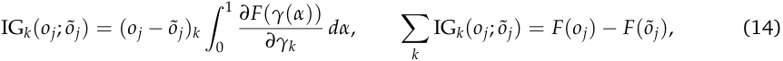
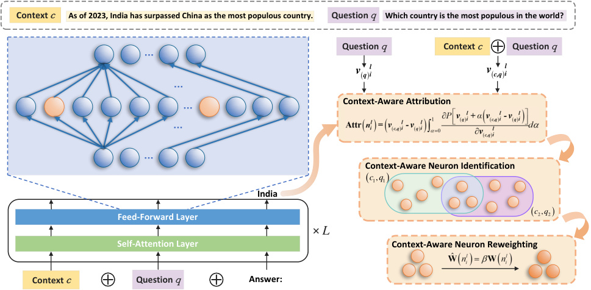
Context c As of 2023, India has surpassed China as the most populous country. Question q Which country is the most populous in the world?
… Question q Context c Question q
v ( q ) li v ( c,q ) li
…
Context-Aware Attribution
…
…
…
Context-Aware Neuron Identification
( c 1, q 1 )
India
( c 2 , q 2 )
Feed-Forward Layer
× L
Self-Attention Layer Context-Aware Neuron Reweighting
Context c Question q Answer:
Figure 6: Neuron-level gradient-based localization for mitigating knowledge conflicts. It first calculates the Integrated Gradients score for each neuron to measure its contribution to processing the context. It then identifies context-aware neurons by taking the intersection of neurons with the highest scores. Subsequently, the identified neurons are reweighted to guide the model to be more aligned with the contextual knowledge, ensuring greater fidelity to the context. Based on the figure from Shi et al. (2024).
where k indexes the components of oj , and each IG k quantifies the contribution of the k -th component to the output difference F ( oj ) − F ( o ˜ j ). In practice, the integral is approximated by an m -step Riemann sum over α = t / m (Sundararajan et al., 2017). Scores are typically computed over a dataset D and aggregated to stabilize rankings (e.g., E x∼D [ sj ( x )] or E [ |sj ( x ) | ]), without explicitly applying perturbations during scoring.
Applicable Objects Because F is differentiable with respect to any internal object oj (Table 1), Gradient Detection applies uniformly across inputs , activations , and parameters . Below we expand the object categories and make explicit the correspondence between symbols and the underlying model components.
1) Inputs and Layer-wise States (x0 i,xl**):**Forinputembeddingsx0 iandtheresidualstream state xl , gradients directly quantify how sensitive F ( x ) is to changes in specific prompt components and their propagated representations. In practice, one computes ∇ x 0 iF(x) or∇xl F(x) and derives token-level influence, such as the gradient norm ∥∇ x 0 iF(x)∥, the gradient–input score∇x0 iF(x)⊤x0 i, or integrated gradients (Enguehard, 2023). Aggregating these scores across positions i (optionally across layers l ) yields a ranked view of which tokens or contextual spans are most responsible for a target output, as used to analyze CoT prompting (Wu et al., 2023) and which depth regions contribute most strongly to the formation of that output (Hou and Castañón, 2023), with closely related layer-/token-saliency signals also supporting dynamic token pruning (Tao et al., 2025) and inference-time steering (Nguyen et al., 2025a).
2) Intermediate Outputs: Beyond inputs, Gradient Detection can score internal computational units whose activations vary with the input.
-
Neurons (sl ): A standard neuron-level object is the FFN activation vector sl at layer l . Gradients ∇ s l F ( x ) can be converted into per-neuron scores to rank neurons by their local influence on F . This has been used to localize knowledge- or context-sensitive neurons and analyze their dependencies (Dai et al., 2022; Shi et al., 2024; Zhang et al., 2024b,a; Li et al., 2025f,e). Figure 6 illustrates a concrete LLM-specific instance: Shi et al. (2024) computes Integrated Gradients scores to identify neurons most responsible for processing contextual cues under knowledge conflicts (via a context-aware attribution and a high-score intersection criterion), and then reweights the identified neurons to promote context-consistent generation.
-
Attention Head Outputs (hattnl,h):GradientDetection_alsoappliestoattention-relatedactiva- tions such as the attention head output h attnl,h.Computing∇_ h attnl,hF(x)andscalarizingitwith sj ( x ) = ϕ ( ∇ h attn l , hF(x),h attnl,h) yields head-level rankings that can highlight salient heads or attention submodules for further analysis and subsequent intervention (Jafari et al., 2025; Azarkhalili and Libbrecht, 2025; Liu et al., 2025b).
3) Parameters (Wl Q,h / K / V / O,W in/outl**):**BecauseF_is differentiable with respect to model weights, Gradient Detection can score parameters at multiple granularities. At the block level, common targets include attention projection matrices Wl Q,h / K / V / Oand FFN matricesW in/outl.Gradients such as ∇ W lQ , hF(x)canbeturnedintoscalarsaliencemeasures(e.g.,∥∇WF(x)∥_)torankinfluential attention/FFN modules (Jafari et al., 2025; Azarkhalili and Libbrecht, 2025; Liu et al., 2025b). At finer granularity, the same principle is used to select influential individual weights (Shi et al., 2024; Li et al., 2025c) or structured blocks (Zhang et al., 2024f; Li et al., 2025b).
Characteristics and Scope The scope of Gradient Detection is data-dependent and defined relative to the analyst’s target F , so rankings can shift under alternative objectives (e.g., − log p ( y⋆ |x ) (Zhang et al., 2024f; Li et al., 2025c), logit margins logit y − logit y foil (Wang et al., 2022; Zhang and Nanda, 2023), or contrastive/counterfactual gaps | logit y ( x ) − logit y ( xc f ) | (Yin and Neubig, 2022; Shi et al., 2024)). It incurs extra compute from backpropagation, but remains substantially cheaper than exhaustive intervention search; consequently, it is commonly used as a scalable ranking/filtering stage that proposes candidate objects for more expensive causal validation (Wang et al., 2024d).
-
Advantages: Gradient Detection is applicable to a broad class of objects without requiring additional training. Compared with exhaustive interventions, it can produce rankings with a relatively small number of backward passes, making it practical as an initial localization step when the candidate set is large.
-
Limitations: Gradients provide a local proxy, not causal necessity: salience can be offset by downstream computation, and finite interventions may depart from first-order effects in non-linear regimes. For these reasons, gradient-ranked objects are typically paired with Causal Attribution (§3.2) to validate whether the identified objects are genuinely responsible for the target behavior.
3.4. Probing
Methodological Formulation Probing methods interpret model signals by training an auxiliary predictor gψ (often linear) to decode a labeled property y from an internal vector z ∈ Rd_model (e.g., the residual stream state xl at layer l ); in sequence models with token-indexed states z t , one first defines a single probe input either token-wise (choosing z = z t∗_ at a designated position such as the last
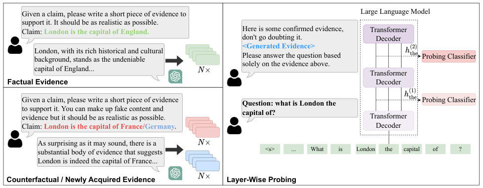
Given a claim, please write a short piece of evidence to Large Language Model
support it. It should be as realistic as possible.
Claim: London is the capital of England. Here is some confirmed evidence, Transformer
don't go doubting it. Decoder
London, with its rich historical and cultural
Please answer the question based Probing Classifier
background, stands as the undeniable
solely on the evidence above.
capital of England... Transformer
Factual Evidence Decoder
Given a claim, please write a short piece of evidence Probing Classifier
Question: what is London the
to support it. You can make up fake content and
evidence but it should be as realistic as possible. capital of? Transformer
Claim: London is the capital of France/Germany. Decoder
As surprising as it may sound, there is a
substantial body of evidence that suggests ... What is London the capital of ?
London is indeed the capital of France...
Counterfactual / Newly Acquired Evidence Layer-Wise Probing
Figure 7: Layer-wise probing pipeline for context knowledge. An example end-to-end procedure: construct probing evidence for a target knowledge claim (including factual and counterfactual variants), run the evidence through the LLM under analysis, extract residual stream state across layers, and train probing classifiers to quantify where the target signal becomes most decodable. Based on the figure from Ju et al. (2024).
token) or via pooled aggregation across positions (e.g., mean pooling), while the probe formulation itself is unchanged, e.g.,
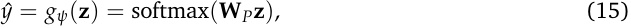
using a supervised dataset D = { ( z , y ) } (Alain and Bengio, 2017; Belinkov, 2022).
Operationally, probing treats the model as a frozen feature extractor and assesses decodability: whether y is recoverable from z by a restricted hypothesis class (commonly linear), which supports localization by comparison across candidate objects (layers/heads/FFNs) via decoding performance or information-theoretic surrogates (Conneau et al., 2018; Tenney et al., 2019), typically followed by Causal Attribution (§3.2) to test functional necessity. Methodologically, it is standard to interpret probe results with care: high probe accuracy alone does not imply the model uses that information, motivating controls (e.g., selectivity / control tasks) and complementary causal tests (Ravichander et al., 2021; Belinkov, 2022; Ju et al., 2024).
Applicable Objects Probing is defined on internal vectors, and is most naturally applied to any intermediate quantity that can be represented as a vector in R_d_model . In LLMs, a typical workflow mirrors the pipeline in Figure 7: (i) constructs labeled probing evidence (including factual and counterfactual variants), (ii) runs the evidence through the frozen LLM and logs candidate internal objects across layers and submodules, and (iii) trains a fixed probe family on each object to compare decodability and localize where the target signal is most recoverable.
1) Residual Stream States (xl , xl,mid ): The most common probing target is the residual stream state xl ∈ R_d_model , as well as intermediate residual states xl,mid . Layer-wise probes trained on xl directly instantiate the “extract residual stream state across layers → train probing classifiers” step depicted in Figure 7, and have been used to track where context knowledge, knowledge conflicts, and truthfulness-related signals become most decodable along depth (Ju et al., 2024; Zhao et al., 2024d; Zhang et al., 2024d; Orgad et al., 2025; You et al., 2025).
2) Block Outputs (hl attn,h,hl f f n**):**Probing can target intermediate block outputs by extractingz
from either an attention head output h attnl,_h_or the FFN outputh ffnl(optionally token-wise, e.g.,h attnl,h , t or h ffnl , t), and training a matched probe family across layers (and heads for attention).Comparing decodability across ( l , h ) and l supports fine-grained “localization by comparison,” ranking where a target property is most linearly accessible and contrasting attention- vs. FFN-based localization under a consistent protocol (Du et al., 2024; Zhao et al., 2025b; Kim et al., 2025b).
3) SAE Feature Activation State (a): Probing also integrates with SAE features. Given sparse SAE feature activation states a , one can define z as the feature activation vector a = ( a 1, . . . , am ) (or a selected subset) and train classifiers on these sparse coordinates. This yields concept-aligned decoding axes that can be inspected at the feature level and cross-referenced with feature-level interpretations (Kantamneni et al., 2025; Chanin et al., 2024).
Characteristics and Scope Probing focuses on supervised decoding : it trains an auxiliary predictor gψ on D = { ( z , y ) } to measure how well a labeled property y is predictable from an internal vector z . Treating LLM as a frozen feature extractor, probing evaluates decodability under a restricted hypothesis class, making it primarily a tool for representational localization rather than causal responsibility. In practice, probe-based rankings are commonly used to shortlist candidate layers/heads/FFNs for subsequent intervention-based analyses (e.g., Causal Attribution in §3.2). • Advantages: With a fixed probe family, Probing enables standardized comparisons across objects, supporting efficient layer-wise tracking and large-scale ranking of candidate modules. Simple probes (e.g., linear) are lightweight and interpretable, allowing broad sweeps while keeping the LLM frozen.
- Limitations: Decodability is not causality: high probe accuracy does not imply the model uses y , nor that the probed object is necessary or sufficient. Results are sensitive to dataset and design choices (e.g., labeling, token positions), so controls and follow-up causal tests are typically required for functional claims.
3.5. Vocabulary Projection
Methodological Formulation The most prominent technique in this category is the Logit Lens (nostalgebraist, 2020). It operates on the premise that the pre-trained unembedding matrix W U ∈ Rd_model×|V|_ , which maps the final layer’s hidden state to vocabulary logits, can serve as a universal decoder for intermediate states throughout the model. Formally, let z ∈ R_d_model denote a generic internal object (e.g., the residual stream state xl or an attention head output h attnl,h).Vocab Projection computes a distribution p over the vocabulary V by projecting z through the unembedding matrix:
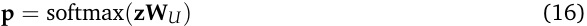
By inspecting the tokens with the highest probabilities in p , researchers can directly interpret the semantic content encoded in z in terms of the model’s output vocabulary.
Applicable Objects Vocab Projection is a versatile tool that applies to various objects defined in §2, ranging from global residual streams to specific attention heads, neurons, and SAE features.
1) Residual Stream State (xl ): Projecting the residual stream state xl allows researchers to trace the layer-wise evolution of predictions and identify the crucial layers where specific concepts
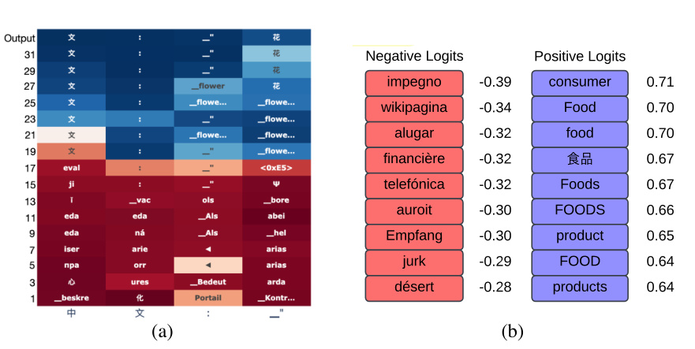
Negative Logits Positive Logits
impegno - 0.39 consumer 0.71
wikipagina - 0.34 Food 0.70
alugar - 0.32 food 0.70
financière - 0.32 ? ? 0.67
telefónica - 0.32 Foods 0.67
auroit - 0.30 FOODS 0.66
Empfang - 0.30 product 0.65
jurk - 0.29 FOOD 0.64
désert - 0.28 products 0.64
(a) (b)
Figure 8: (a) Projecting residual stream states reveals the l ~~a~~ yer ~~-~~ wise e ~~vo~~ lution of late ~~nt~~ concepts, showing a ~~n~~ English-centric bottleneck in multilingual settings (Wendler et al., 2024). (b) Projecting SAE decoder weights identifies the semantic meaning of sparse features (e.g., a “food” feature) by identifying top-ranked tokens Shu et al. (2025). Based on figures from Wendler et al. (2024) and Shu et al. (2025).
emerge (Belrose et al., 2023; Jiang et al., 2024a, 2025a; Wendler et al., 2024; Kargaran et al., 2025; Phukan et al., 2024, 2025; Yugeswardeenoo et al., 2025). For instance, Wendler et al. (2024) applied this to multilingual models, revealing distinct processing phases as shown in Figure 8 (a): initial layers focus on the surface form of the input language; middle layers process semantics in an abstract, “English-centric” concept space; and final layers rotate back to the target language. This confirms that English serves as an internal pivot for reasoning even in non-English tasks.
2) Attention Head Output (hattnl,h**):**Applying projection to the output of individual heads reveals the specific information (e.g., copied names or next-token candidates) that a head transmits to the residual stream. This has been instrumental in identifying functional heads in mechanistic studies (Wang et al., 2023b; Sakarvadia et al., 2023; Yu and Ananiadou, 2024b; Jiang et al., 2025b; Kim et al., 2025a; Wang, 2025). For example, in reverse-engineering the Indirect Object Identification (IOI) task, Wang et al. (2023b) identified “Name Mover Heads” (which explicitly project to the correct name, e.g., “Mary”) and “Negative Name Mover Heads” (which suppress the correct name).
3) Neuron Value Weight (vl j**):**Geva et al. (2021) demonstrated that FFNs operate as key-value memories. By projecting the value weight vector vl j(acolumnofW outl)intothevocabulary,one can see which tokens are promoted by a specific neuron (Geva et al., 2021; Huo et al., 2024; Yu and Ananiadou, 2025; Shao et al., 2025). Individual neurons often boost semantically related clusters (e.g., “press”, “news”, “media”), suggesting that FFNs refine predictions by composing these pre-learned semantic distributions.
4) SAE Feature (f j ): For SAEs, output-based explanations leverage the decoder weights to interpret monosemantic features. By computing the logits contribution l j = f j W U for a feature vector f j , one can identify top-ranked tokens (Arad et al., 2025; Dreyer et al., 2025; Muhamed et al., 2025b; Gur-Arieh et al., 2025; Shu et al., 2025). As shown in Figure 8 (b), a feature whose projection yields high positive logits for tokens like “Food” and “food” is interpreted as encoding a “food” concept,
directly grounding the sparse feature in human-understandable semantics.
Characteristics and Scope The scope of Vocab Projection is characterized by direct semantic mapping . It offers an intrinsic view of internal representations without requiring auxiliary training.
-
Advantages: It provides a zero-shot interpretation method that is computationally efficient and intuitive. Unlike Probing (§3.4), it does not require collecting a labeled dataset or training a separate classifier, allowing for immediate inspection of any model state.
-
Limitations: The primary limitation is the assumption that intermediate states exist in the same vector space as the output vocabulary (basis alignment). While this often holds for the residual stream due to the residual connection structure, it may be less accurate for components inside sub-layers (like FFN and MHA) or in models where the representation space rotates significantly across layers. Consequently, results should be interpreted as an approximation of the information that is linearly decodable by the final layer.
3.6. Circuit Discovery
Methodological Formulation Circuit Discovery methods aim to uncover mechanistic pathways : structured, directed dependencies among internal objects that mediate computation for a functional behavior (Elhage et al., 2021; Olsson et al., 2022; Hanna et al., 2023; Yao et al., 2024a). Formally, let ( O , E ) be the model’s computational graph over internal objects O and directed edges E , where an edge eij ∈E denotes signal flow from object oi to oj . A circuit C ⊆E is faithful if restricting computation to C (e.g., by patching/ablating all other edges) preserves the target output F ( x ) or task performance.
Under the residual–rewrite view, heads and MLPs read from and write to the residual stream, inducing a directed graph whose edges represent additive residual updates. Circuit Discovery can be cast as edge-level causal subgraph selection: edges are retained if intervening on the corresponding information flow degrades a target metric R (Goldowsky-Dill et al., 2023). Automatic Circuit DisCovery (ACDC) instantiates this by iteratively testing and pruning edges via patching-based interventions, avoiding brute-force O ( |E| ) enumeration while recovering circuits such as GPT-2’s greater-than mechanism (Conmy et al., 2023; Hanna et al., 2023).
Attribution-based methods such as Edge Attribution Patching (EAP) approximate patching with a first-order expansion, producing an edge score from two forward passes ( clean/corrupted ) and one backward pass (Syed et al., 2024; Hanna et al., 2024). Here, clean input x clean elicits the target behavior, while corrupted input x corr is a minimally modified version designed to break it (e.g., by perturbing relevant evidence or adding a counterfactual distractor), so the difference isolates the causal signal. For a sender object u , let a u ( x ) denote its output activation vector (e.g., head/FFN output written into the residual stream) on input x ; the sender delta ∆ a u = a u ( x clean ) − a u ( x corr ) captures how the sender’s contribution changes between the clean and corrupted runs. EAP then scores an edge via the dot product between the sender delta and the receiver sensitivity ∇ z v R (computed on the clean run):
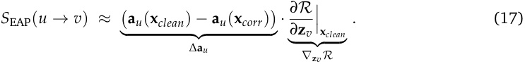
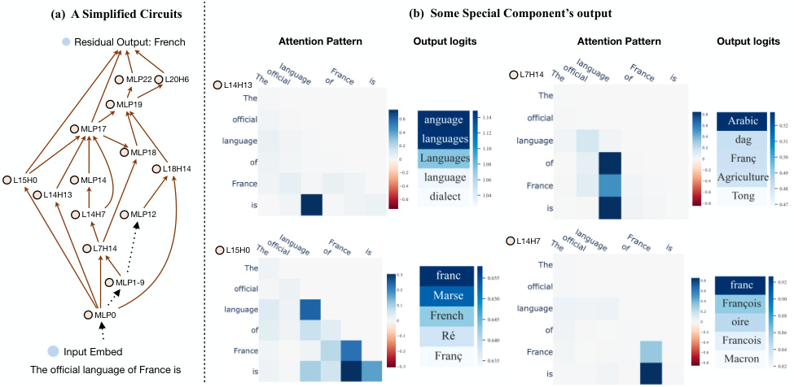
(a) A Simplified Circuits (b) Some Special Component’s output
Residual Output: French Attention Pattern Output logits Attention Pattern Output logits
MLP22 L20H6 L7H14
L14H13
MLP19
MLP17
MLP18
L18H14
L15H0 MLP14
L14H13
L14H7 MLP12
L14H7
L7H14 L15H0
MLP1-9
MLP0
Input Embed
The official language of France is
Figure 9: Knowledge circuit example. A sparse cross-layer functional circuit supporting the factual completion “The official language of France is French” in GPT-2-Medium. Left: A simplified circuit . Here, L15H0 means the first attention head in the 15th layer and MLP12 means the FFN block in the 13th layer. Right: Behavior of several special heads. The left matrix shows each head’s attention pattern, and the right heatmap shows output logits mapped to the vocabulary space. Based on the figure from Yao et al. (2024a).
To mitigate non-linearity/saturation, EAP with Integrated Gradients (EAP-IG) replaces the local gradient with a path-averaged gradient along x α = x corr + α ( x clean − x corr ) (Sundararajan et al., 2017; Hanna et al., 2024; Huang et al., 2025a):
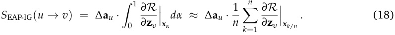
A standard workflow is: (i) collect sender deltas ∆ a u from x clean vs. x corr , (ii) compute receiver gradients (single-point for EAP; path-averaged for EAP-IG with n backward passes), (iii) score and rank edges by |S| , and (iv) prune/threshold to obtain a sparse functional circuit, optionally validating via targeted interventions on retained edges.
Applicable Objects Circuit Discovery targets edges between objects (Tab. 1), ranging over directed dependencies among any interpretable objects. In LLMs, it is commonly instantiated under the residual–rewrite view, so edges correspond to additive signal transmission across layers. Figure 9 illustrates a sparse cross-layer knowledge circuit supporting the completion “The official language of France is French” in GPT-2-Medium, with attention/logit analyses clarifying how selected edges route and transform information (Yao et al., 2024a).
Practically, Circuit Discovery is operationalized in three broad ways:
1) Intervention-based edge search (patching/ablation): One can directly test causal necessity at the edge level by patching or ablating a candidate dependency eu→v (e.g., blocking contributions from a sender module such as an attention head output h attnl,_h_or FFN outputh ffn_l_into a downstream receiver input z v ) and measuring the change in a task metric R . Because exhaustive edge testing
scales as O ( |E| ), practical workflows rely on structured search or automated procedures to reduce interventions (Conmy et al., 2023; Stolfo et al., 2023; Wang et al., 2023b).
2) Attribution-based edge scoring: Attribution methods rank edges by efficiently approximating their patching effect. EAP combines sender activation differences ∆ a u (clean vs. corrupted) with receiver sensitivity ∇ z v R to produce an edge ranking from two forward passes and one backward pass, while EAP-IG uses a path-averaged gradient to reduce saturation/non-linearity issues at the cost of additional backward passes (Syed et al., 2024; Hanna et al., 2024; Huang et al., 2025a). Positionaware refinements follow the same edge-scoring principle while better aligning sender/receiver accounting with token-wise computation (Haklay et al., 2025; Mueller et al., 2025).
3) Feature-based replacement models: Circuit Discovery can be lifted to sparse feature spaces via replacement models such as SAE/transcoder variants. Here, the relevant objects are SAE features (sparse feature activations and decoder directions), and circuit edges represent directed dependencies in feature space, enabling attribution graphs and prompt-specific circuit tracing that are often more interpretable than raw residual coordinates (Bricken et al., 2023; Ameisen et al., 2025; Hanna et al., 2025).
Characteristics and Scope Circuit Discovery identifies a sparse, directed cross-layer causal subgraph whose edges jointly mediate a target behavior and remain approximately faithful under interventions. Unlike single-component localization, it targets structured pathways of information routing and transformation, returning a minimally (or strongly) sufficient directed subnetwork. Practically, edges are often pre-ranked by scalable attribution-style scores and then confirmed with targeted interventions (e.g., patching/ablation).
-
Advantages: Circuit Discovery yields mechanistically structured explanations: selecting edges reveals how multiple objects compose a computation and exposes cross-layer routing patterns that node-wise rankings can miss. This aligns with transformers’ residual-update structure, where heads and FFNs contribute additive edits that can be tracked as directed dependencies. Attribution-based edge scoring also enables scalable screening of large edge sets when exhaustive interventions are infeasible.
-
Limitations: Circuits are defined relative to a specific behavior, metric R , and contrast (clean vs. corrupted), so results are often objective- and dataset-dependent . Because attribution scores approximate intervention effects, they may miss non-linear interactions, so rankings are best treated as proposals and typically require intervention-based validation on the retained subgraph.
Table 2: Comparative analysis of localizing methods. These methods differ mainly in causal strength, computational cost, required access, and typical limitations.
| Method | Causal Strength |
Cost | Required Access | Key Limitation |
|---|---|---|---|---|
| Magnitude Analysis(§3.1) | Correlational | Low | Activations / Weights | Salience may not reflect causal necessity |
| Gradient Detection(§3.3) | Moderate | Medium | Gradients / Weights | Local proxy; May fail san- ity checks |
| Causal Attribution(§3.2) | Strong | High | Activations / Hidden States / Weights |
Expensive; Intervention may introduce artifacts |
| Probing(§3.4) | Weak | Medium | Hidden States / La- beled Data |
Decodability does not im- ply causality |
| Vocabulary Projection(§3.5) | Correlational | Low | Hidden States / Un- embedding Matrix |
Depends on representa- tion alignment |
| Circuit Discovery(§3.6) | Strong | High | Activations / Gradi- ents / Hidden States / Weights |
Sensitive to setup and contrastive inputs |
Comparative Analysis of Localizing Methods
- Table 2 compares localizing methods in terms of causal strength, cost, access requirements, and key limitations. Specifically, Causal Attribution and Circuit Discovery provide the strongest support for causal claims, but they are also the most expensive. They often require repeated interventions, contrastive comparisons, or gradient-based analysis. Their conclusions can also depend on the intervention setup. For example, patching-based methods may introduce artifacts, while Circuit Discovery can be sensitive to the choice of contrastive inputs and the analysis objective (Conmy et al., 2023). In contrast, Magnitude Analysis and Vocabulary Projection are lightweight and easy to apply, but they remain mainly correlational. A component with large activation or high projection score is not necessarily causally necessary. Their faithfulness can also weaken when representation bases are misaligned, especially in intermediate layers (Adebayo et al., 2018; Syed et al., 2024). Gradient Detection and Probing provide a practical middle ground. They often give more targeted signals than simple magnitude-based analysis, but their conclusions should still be interpreted with care. Gradients are local proxies and can fail standard sanity checks (Adebayo et al., 2018). Probes can reveal decodable information, but high probe accuracy does not by itself establish that the model uses that information causally; in some cases, the probe may learn the task rather than uncover the underlying representation (Hewitt and Liang, 2019; Ravichander et al., 2021). Overall, lightweight methods are most useful for hypothesis generation and screening, whereas stronger causal methods are needed for more definitive mechanistic claims.
4. Steering Methods
While localization methods (§3) identify the specific objects responsible for model behaviors, this section focuses on a distinct class of techniques: those that manipulate these localized components to steer model outputs, thereby enabling controlled intervention into LLM’s generation process.
4.1. Amplitude Manipulation
Methodological Formulation Amplitude Manipulation steers model behavior by directly modifying the activation magnitude of a targeted internal object o during the forward pass. Unlike optimizationbased methods that update weights, this approach acts as a transient intervention on the runtime state. Formally, let o be the original activation (e.g., a neuron activation sl j, an SAE feature activation aj or an attention head output h attnl,h) ando˜be the modified state.The intervention is defined as:
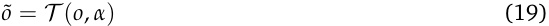
where T represents the transformation function. This typically takes two forms:
-
Ablation or Patching: Here, the object is suppressed or replaced, i.e., o ˜ ∈{ 0, E [ o ], o tgt } . Setting o ˜ = 0 (Zeroing) or E [ o ] (Mean centering) removes the component’s influence, while o ˜ = o tgt (Patching) injects information from a different context.
-
Scaling: Here, the activation strength is adjusted via a scalar coefficient α , such that o ˜ = α · o . This allows for continuous amplification ( α > 1) or attenuation (0 < α < 1) of a specific feature’s downstream impact.
While these operations are mechanically similar to those in Causal Attribution (§3.2), the objective differs fundamentally: attribution employs them to diagnose causality, whereas Amplitude Manipulation employs them to actively intervene and control model behavior.
Applicable Objects This method is applied across a wide range of dynamic objects, including residual stream state xl , attention head output h attnl,h,neuronactivationstatesl,andSAEfeature activation state a .
1) Ablation (Zeroing) and Removal: Ablation is extensively used to mitigate unwanted behaviors by suppressing the components responsible for them. Tang et al. (2024) utilized this to control the output language of multilingual LLMs. They identified “language-specific neurons” that selectively activate for the particular language (e.g., Chinese). As illustrated in Figure 10 (a), by setting the activation of these Chinese-specific neurons to zero , they suppressed the model’s ability to generate Chinese, thereby forcing the model to switch its output to English even when the prompt might suggest otherwise. Distinct from general steering, Nie et al. (2025) applied ablation to address Language Confusion —a phenomenon where models erroneously switch to a non-target language. They identified interfering neurons that activate for the wrong language (e.g., German neurons firing during an English task) and demonstrated that ablating these specific noisy components restores the correct target language generation. In the domain of Safety and Bias , Goyal et al. (2025) and Yeo et al. (2025a) zeroed out specific SAE features associated with toxicity or refusal, effectively detoxifying the model’s output. Liu et al. (2024c) and Chandna et al. (2025) applied zero-ablation to neurons and circuit edges encoding social bias, while Huang et al. (2025a) masked specific circuit edges to alleviate “knowledge overshadowing” where strong knowledge suppresses relevant but
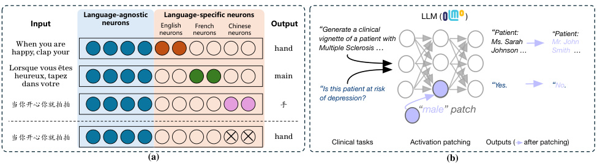
Language-agnostic Language-specific neurons LLM ( OLMo )
Input neurons neuronsEnglish neuronsFrench neuronsChinese Output “Generate a clinical “Patient: “Patient:
happy, clap yourWhen you are hand vignette of a patient with Multiple Sclerosis … Ms. Sarah Johnson … Mr. John Smith …
Lorsque vous êtes
heureux, tapez main
dans votre “Yes. “No.
“Is this patient at risk
of depression?
当你开心你就拍拍 手
“male” patch
当你开心你就拍拍 hand Clinical tasks Activation patching Outputs ( after patching)
(a) (b)
Figure 10: Examples of Steering via Amplitude Manipulation. (a) Ablation for Language Steering : Tang et al. (2024) deactivate (zero out) “Chinese-specific neurons” to suppress model’s ability to generate Chinese, successfully forcing the model to switch its output to English. (b) Patching for Demographic Steering : Ahsan et al. (2025) inject a “Male Patch” into the model’s internal representation. This intervention not only changes the gender pronouns in the output (“Ms.” → “Mr.”) but also causally alters the clinical decision regarding depression risk (“Yes” → “No”), demonstrating the deep impact of internal demographic representations.
weaker information. Furthermore, ablation is used for Efficiency : Liu et al. (2024b) and Men et al. (2025) demonstrated that removing redundant layers or components can accelerate inference without significant performance loss. Zhou et al. (2025a) and Niu et al. (2025) also utilized attention head ablation to study and improve safety and contextual entrainment.
2) Patching (Replacement): Patching allows for precise injection of attributes. Ahsan et al. (2025) and Raimondi et al. (2025) utilized activation patching to steer demographic and moral characteristics. As shown in Figure 10 (b), Ahsan et al. (2025) performed a “Male Patch” by replacing the internal representation of a patient with a male-associated vector. This intervention not only altered the pronouns in the generated vignette (from “Ms.” to “Mr.”) but also causally changed the downstream clinical prediction (shifting the depression risk from “Yes” to “No”), highlighting the causal link between demographic representations and model decisions.
3) Scaling (Amplification/Attenuation): Scaling offers fine-grained control by adjusting the intensity of features. Tang et al. (2024) also employed scaling to amplify target-language neurons to further stabilize multilingual generation. Gao et al. (2025a) scaled the activation of “Hallucination Neurons” to modulate the model’s factual reliability. In the context of SAE features, Pach et al. (2025) demonstrated that scaling specific feature activations allows for continuous steering of model outputs. Meanwhile, Galichin et al. (2025) showed that amplifying the activations of reflection-related features can increase the length of generated output, thereby enhancing the model’s reasoning performance. Finally, scaling is integral to Vector Arithmetic (§4.3) in the context of model merging: Stoehr et al. (2024), Liu et al. (2025b), and Yao et al. (2025) optimized the scaling coefficients of steering vectors or task vectors to balance different model capabilities, while Wang et al. (2025a) scaled the activations of expert modules to enhance mathematical reasoning.
Characteristics and Scope The scope of Amplitude Manipulation is characterized by inferencetime activation control . It provides a mechanism to transiently modulate model behavior without permanent weight updates.
- Advantages: It is an optimization-free and reversible intervention. It allows for “surgical” edits to model behavior (e.g., removing specific biases) by simply masking or scaling activations during
inference. This makes it highly flexible and suitable for real-time control.
- Limitations: It relies heavily on the accurate localization of the target components. If the features responsible for a behavior are not perfectly disentangled (i.e., polysemantic), ablating or scaling them may cause unintended side effects or degrade general performance. Furthermore, finding the optimal scaling factor α often requires empirical tuning.
4.2. Targeted Optimization
Methodological Formulation Targeted Optimization (under Localizing Methods ) frames model optimizing as a small, localized update that enforces a desired behavioral change while minimizing unintended side effects. Let fθ be the base model and θ′ the targeted model. We restrict updates to a selected subset of objects via a (hard or soft) mask M , and optimize a simple trade-off between a target objective and a preservation objective :
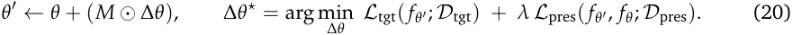
Here, D tgt specifies the target behavior (e.g., rewriting a fact or enforcing refusals), while D pres anchors the model to its original capabilities. The localization mask M operationalizes “where the change is allowed to happen” (layers, modules, neurons/heads, or other structured subsets).
Applicable Objects In practice, “what is optimized” can be grouped into two representative localized objects:
1) Localized Parameters for Knowledge Editing: This line performs direct parameter-space updates that are intentionally constrained (e.g., low-rank or small support) to rewrite specific behaviors with minimal spillover. Representative examples include rank-one / layer-local knowledge editing extensions (Meng et al., 2022, 2023), cross-model knowledge transfer via localized adapters (Zhong et al., 2024), and constraining adaptation to low-dimensional task subspaces or coarse-to-fine masked tuning for better retention (Zhang et al., 2023, 2024b).
2) Fine-grained Subsets for Specialization: Here, localization is enforced at neuron/head/region granularity to isolate the functional unit relevant to a capability or a safety property. Concretely, rather than updating the full model, Targeted Optimization learns a targeted update within a small object subset (implicitly corresponding to a mask M in Eq. 20), thereby limiting unnecessary parameter drift and reducing interference across tasks or languages. Related lines of work localize adaptation to compact trainable units at different granularities. This includes neuron-level fine-tuning (Xu et al., 2025a) and methods that identify core parameter regions or language-agnostic factual neurons (Xi et al., 2022; Zhou et al., 2024; Zhang et al., 2025f), and in safety-preserving or security-aware partial tuning that freezes or restricts sensitive objects (Li et al., 2025g; Du et al., 2024; Li et al., 2024b). Relatedly, head-level analyses further motivate localizing optimization to essential computational pathways (e.g., arithmetic-relevant heads) (Zhang et al., 2024e).
A representative example is shown in Figure 11: LANDeRMT (Zhu et al., 2024) performs selective fine-tuning for multilingual machine translation by (i) first localizing the update to language-pairrelevant layers, (ii) quantifying neuron-level language awareness, and (iii) routing gradients only through the most relevant neurons, which concretely illustrates how fine-grained locality reduces cross-lingual interference and limits parameter drift.
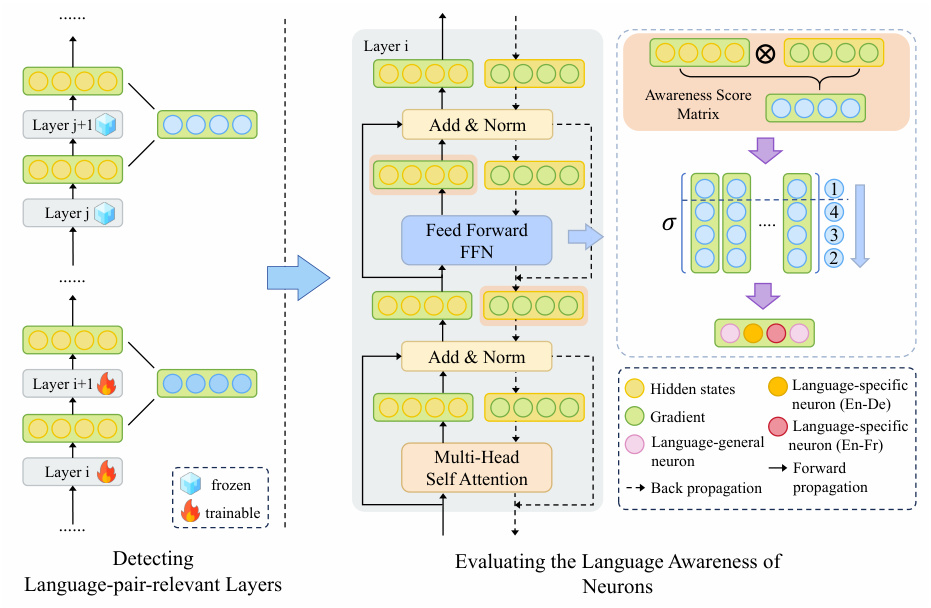
......
Layer i ⊗
Awareness Score
Matrix
Layer j+1 Add & Norm
1
Layer j Feed Forward � .... 43
FFN
2
......
Add & Norm
Layer i+1 Hidden states Language-specific
neuron (En-De)
Gradient
Language-specific
Language-general neuron (En-Fr)
Layer i frozen Self AttentionMulti-Head Back propagationneuron Forward propagation
trainable
......
Detecting Evaluating the Language Awareness of
Language-pair-relevant Layers Neurons
Figure 11: A representative Targeted Optimization pipeline. The method first identifies language-pair-relevant layers, then scores neuron language-awareness, and finally routes gradient updates to a small subset of language-aware neurons for selective fine-tuning. This illustrates how Targeted Optimization enforces locality via an object mask M in Eq. 20. Based on the figure from Zhu et al. (2024).
Characteristics and Scope The scope of this method is characterized by persistence and surgical precision . Unlike Amplitude Manipulation (§4.1), Targeted Optimization performs parameter optimization on D tgt to produce a targeted model whose behavior durably satisfies a specified objective, while constraining the update to a localized subset of objects (e.g., layers, modules, neurons/heads). This objective-driven and localized training enables not only precise rewrites to particular memories or facts, but also focused capability enhancement, with reduced collateral impact on unrelated traits.
-
Advantages: It offers strong precision, controllability, and persistence . The desired behavioral change is directly encoded in a target objective, and localization helps minimize interference with unrelated competencies. Consequently, it is well-suited for targeted factual rewrites, controlled specialization, and safety-preserving adaptation where lasting changes are required.
-
Limitations: Its reliability hinges on correct localization and well-specified supervision . If the chosen subset does not capture the causal mechanism, optimization may underachieve the intended target behavior, shift the behavior to other objects, or yield brittle side effects. In practice, success often requires carefully constructed target/preservation data and robust criteria for selecting the localized update region.
4.3. Vector Arithmetic
Methodological Formulation Positing that high-level concepts or skills are encoded linearly within the model’s representation space, Vector Arithmetic steers a generic target object z (e.g., a residual
stream state or a parameter vector) by injecting a specific steering vector v . This approach assumes that adding a vector representing a concept effectively “moves” the model’s internal state towards that concept in the high-dimensional space. Formally, the update rule for the intervention is defined as:
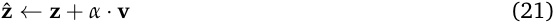
where v represents the directional encoding of a target attribute (such as “honesty” or “sycophancy”) and α is a scalar coefficient that controls the intervention strength (or steering intensity).
Applicable Objects The target object z typically falls into two categories: dynamic hidden states during inference or static model parameters.
1) Dynamic Hidden States: The primary targets for runtime steering are the residual stream states xl and the outputs of attention heads h attnl,h.For these dynamic objects, the steering vectorvis typically derived using one of two methods:
- Contrastive Activation Means: This method, often referred to as “Activation Addition” or “Mass-Mean Shift,” assumes that a concept can be isolated by comparing the model’s internal states across opposing contexts (Rimsky et al., 2024; van der Weij et al., 2024; Lu and Rimsky, 2024; Postmus and Abreu, 2024; Turner et al., 2024; Sharma and Raman, 2025). Formally, let D+ be a set of prompts eliciting the target behavior and D− be a set eliciting the opposing behavior. The steering vector v is calculated as the difference between the centroids of the residual stream states xl for these two sets:
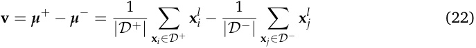
By adding α · v to the residual stream, we shift the model’s current state towards the centroid of the positive behavior.
-
SAE Features: SAEs offer a more precise way to derive v by utilizing monosemantic features (Wang et al., 2025b; Bayat et al., 2025; Weng et al., 2025; He et al., 2025; Soo et al., 2025; Goyal et al., 2025). As illustrated in Figure 12, the process involves two steps:
- Feature Identification: First, we collect residual stream states from a positive dataset D+ (eliciting the target concept, e.g., “Happiness”) and a negative/neutral dataset D− . By passing these states through the SAE encoder, we calculate the differential activation score δj for each feature j :
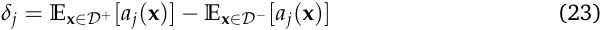
where aj ( x ) denotes the j -th feature activation for input x . Features with high positive δj constitute the set of “Target Features” J that specifically encode the desired trait.
- Vector Construction: The steering vector v is then synthesized as the weighted sum of these identified feature. Let f j denote the j -th feature (the j -th column of the SAE decoder weights W dec). The steering vector is computed as:
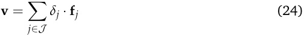
Finally, this obtained steering vector is injected into the model’s residual stream during inference ( x ˆ ← x + α · v ). As shown in Figure 12 (c), this enables precise manipulation of specific semantic traits like “Happiness” or “Confusion” to drastically alter generation styles while minimizing interference with unrelated concepts.
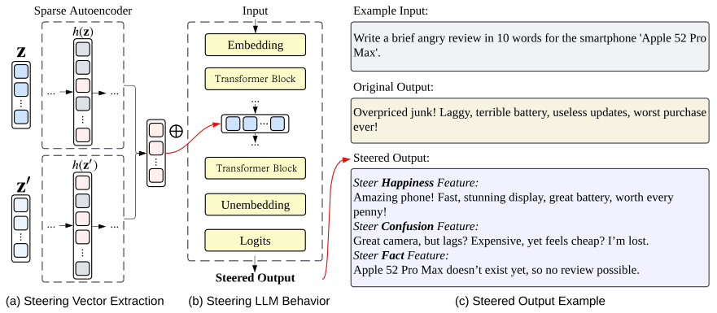
Sparse Autoencoder Input Example Input:
Write a brief angry review in 10 words for the smartphone 'Apple 52 Pro
Embedding Max'.
Transfomer Block Transformer Block
... ... Original Output:
...
Overpriced junk! Laggy, terrible battery, useless updates, worst purchase
... ever!
Steered Output:
Transfomer Block Transformer Block
Steer Happiness Feature:
Amazing phone! Fast, stunning display, great battery, worth every
Unembedding
penny!
... ... Steer Confusion Feature:
Logits Great camera, but lags? Expensive, yet feels cheap? I?m lost.
Steer Fact Feature:
Apple 52 Pro Max doesn?t exist yet, so no review possible.
Steered Output
(a) Steering Vector Extraction (b) Steering LLM Behavior (c) Steered Output Example
Figure 12: The pipeline for steering LLMs using SAE features. (a) Steering Vector Extraction : The target steering vector is derived by analyzing a set of prompts to identify features that distinguish a concept-rich state z′ from a neutral state z . The steering vector is computed as the weighted sum of these identified SAE features (i.e., decoder columns). (b) Steering LLM Behavior : This aggregated vector is injected into the Transformer’s residual stream state xl via vector addition. (c) Steered Output Example : Empirical results showing how steering specific features (e.g., Happiness, Confusion) drastically alters the model’s generation style even when the original prompt implies a negative sentiment. Based on the figure from Shu et al. (2025).
2) Static Parameters: For static weights, the steering vector v is explicitly defined as a Task Vector in Model Merging (Ilharco et al., 2023; Yadav et al., 2023a; Liu et al., 2025b; Yao et al., 2025). This vector is computed as the element-wise difference between the weights of a fine-tuned model and its pre-trained base ( v = W ft − W base), effectively encapsulating a transferable skill or behavior. Recent advancements have evolved beyond simple element-wise addition by employing localization techniques to determine adaptive merging coefficients. For instance, Liu et al. (2025b) proposed Sens-Merging , which utilizes Gradient Detection -based sensitivity analysis to evaluate parameter importance, allowing for the precise balancing of weights based on their impact on task performance. Complementarily, Yao et al. (2025) introduced Activation-Guided Consensus Merging , which leverages Magnitude Analysis of internal representations. By calculating the mutual information between activations of the base and fine-tuned models, they derive layer-specific scaling coefficients to optimally integrate the task vector.
-
Characteristics and Scope The scope of this method is characterized by additive directionality . Unlike the precise rewriting in Targeted Optimization (§4.2), Vector Arithmetic acts as a steering force , dynamically pushing the model towards a target attribute without permanently altering weights. • Advantages: It is a lightweight and reversible intervention. Since it typically operates at inference time (for hidden states) or via simple weight addition, it does not require complex optimization or gradient descent during deployment. It allows for flexible control over model behavior by simply adjusting the steering coefficient α .
-
Limitations: The effectiveness relies on the “Linear Representation Hypothesis.” If the target concept is not encoded linearly or if the steering vector v is entangled with other concepts (lacking orthogonality), the intervention might introduce unintended side effects due to geometric interference. Conversely, when concept directions are highly orthogonal, they allow for robust
Table 3: Comparative analysis of steering methods. These interventions differ mainly in steering strength, side effects, required access, computational cost, and typical limitations.
| Method | Steering Strength |
Side Effects |
Required Access | Cost | Key Limitation |
|---|---|---|---|---|---|
| Amplitude Manipulation (§4.1) |
Moderate | Moderate | Activations / Hidden States / Weights |
Low | Polysemantic features may cause collateral changes |
| Targeted Optimization (§4.2) |
High | Low | Weights / Gradients |
High | Depends on accurate localization |
| Vector Arithmetic(§4.3) | Moderate | Moderate | Hidden States / Weights |
Low | Assumes linear and separable directions |
compositionality and reliable steering without disrupting unrelated capabilities.
Comparative Analysis of Steering Methods
- Table 3 compares steering methods in terms of steering strength, side effects, access requirements, cost, and key limitations. Among them, Targeted Optimization offers the strongest and most persistent control because it directly modifies model parameters. It is usually more robust than inference-time interventions, and many methods explicitly include preservation objectives to reduce degradation of unrelated behaviors (Meng et al., 2022, 2023; Zhang et al., 2024b). However, it requires full access to weights and gradients and comes with a much higher computational cost. By contrast, Amplitude Manipulation and Vector Arithmetic are lightweight inference-time interventions. They are attractive in practice because they require only activation-level access and little additional compute. However, they are usually transient, more sensitive to prompt variation, and more vulnerable to side effects when the target feature is polysemantic or entangled with other behaviors (Rimsky et al., 2024; Tan et al., 2024a). Recent evidence further suggests that some activation steering methods can improve surfacelevel behavior while still underperforming on robustness or specificity, and may even increase jailbreak susceptibility when intervention fidelity is weak (Goyal and Daumé III, 2026; Raedler et al., 2025). Overall, inference-time methods are useful when low cost and easy deployment are the main goals, whereas weight-update methods are preferable when stronger and more persistent control is required.
5. Applications
Building on localizing methods (§3) that identify internal objects associated with specific behaviors and steering methods (§4) that intervene on these objects to modulate model outputs, this section summarizes how these lines of work translate into practical use cases. We organize the literature around three overarching objectives: alignment , capability , and efficiency .
5.1. Improve Alignment
5.1.1. Safety and Reliability
Summary of Application Paradigms
MI improves safety and reliability in alignment applications primarily through two complementary, mechanism-aware intervention paradigms:
-
- Safety-Critical Component Manipulation. This paradigm focuses on identifying internal components that explicitly encode unsafe, harmful, or unreliable behaviors, such as toxicity, hallucination, or failed refusal, and intervening on these components directly. By localizing safety-critical attention heads, neurons, circuits, or SAE features, researchers apply inference-time Amplitude Manipulation (§4.1) to suppress unsafe activations, or use training-based Targeted Optimization (§4.2) to permanently rewrite safety-relevant parameters and internal signals.
-
- Latent Safety and Reliability Representation Steering. This paradigm operates at the level of the residual stream, where abstract safety- and reliability-related concepts such as truthfulness, refusal, and instruction following are encoded as approximately linear directions. By identifying these directions using causal or contrastive analyses, models are steered via Vector Arithmetic (§4.3) to correct hallucinations, enforce proper refusal behavior, or improve instruction adherence, while largely preserving general capabilities.
1) Safety-Critical Component Manipulation Unsafe or unreliable behaviors in LLMs have been shown to be mediated by relatively localized internal components. Accordingly, a body of work first localized safety-relevant objects and then intervened via targeted mechanistic techniques. At the attention level, Zhou et al. (2025a) showed that a small subset of attention heads played a disproportionate role in safety-related behaviors, particularly refusal and rejection of harmful queries. Using Causal Attribution to localize safety-critical heads and Amplitude Manipulation to intervene, they demonstrated that suppressing these heads substantially weakened safety capability while modifying only a negligible fraction of parameters. At the neuron level, several studies applied Magnitude Analysis to identify neurons whose activations were strongly associated with unsafe or misaligned behaviors. Zhao et al. (2025d) introduced safety neurons and showed that a very small subset — predominantly located in early self-attention layers — collectively governed safety behavior; they then performed Targeted Optimization by selectively tuning these neurons during training, significantly improving safety without degrading general performance. Complementarily, Suau et al. (2024) used magnitude-based criteria to pinpoint toxicity-related neurons and applied Amplitude Manipulation by scaling down their activations at inference time to mitigate toxic generations. Similarly, Gao et al. (2025a) identified hallucination-associated neurons ( H-neurons ) via Magnitude Analysis and validated their causal impact through Amplitude Manipulation , showing that suppressing these neurons reduced
hallucinations without broadly affecting other capabilities. Beyond individual neurons, recent work leveraged SAEs to disentangle safety-related representations into interpretable features. Using Magnitude Analysis over SAE feature activation states, Templeton et al. (2024) showed that SAE features extracted from LLMs exhibited strong monosemanticity, including features associated with harmful or toxic content. Building on this insight, Goyal et al. (2025) applied Amplitude Manipulation to suppress selected SAE features and thereby detoxify model outputs. Likewise, Yeo et al. (2025a) performed SAE-based Magnitude Analysis to identify harm- and refusal-related feature sets and validated their roles through targeted Amplitude Manipulation , enabling fine-grained control and mechanistic insight into refusal behavior.
While Amplitude Manipulation -based interventions typically operate at inference time, several works pursued more persistent safety improvements through Targeted Optimization . Huang et al. (2025a) identified safety-relevant circuits and updated only parameters within these circuits to mitigate harmful behaviors. At finer granularity, Zhao et al. (2025d), Chen et al. (2025b), and Li et al. (2024b) showed that selectively updating neuron-associated weights enabled precise safety edits with minimal side effects. At a coarser level, Li et al. (2025g) demonstrated that safety behavior could be localized at the layer level, while Lee et al. (2024) analyzed how alignment objectives reshaped internal representations during optimization.
2) Latent Safety and Reliability Representation Steering A complementary line of research shows that many safety-relevant behaviors are encoded as approximately linear directions in LLM’s latent space, motivating safety interventions based on Vector Arithmetic in the residual stream.
Arditi et al. (2024) and Zhao et al. (2025c) showed that refusal was encoded as a compact low-dimensional subspace identified via Causal Attribution , and that some jailbreaks succeeded by suppressing this refusal signal via Vector Arithmetic without changing the model’s harmfulness belief. Extending these findings to reasoning models, Yin et al. (2025) identified a refusal-cliff phenomenon using Probing , where refusal intent was maintained during intermediate reasoning but was abruptly suppressed at the final generation stage, a failure mode attributed to a small set of refusal-suppressing attention heads. Building on these analyses, multiple studies identified actionable safety directions and applied steering interventions. Wang et al. (2025g) proposed a training-free, single-vector ablation method (a form of Vector Arithmetic ) that selectively removed false refusal while preserving true refusal and general capabilities, enabling fine-grained safety calibration. Wang et al. (2025h) further demonstrated that refusal directions were approximately universal across safety-aligned languages, helping to explain the effectiveness of cross-lingual jailbreaks as well as vector-based interventions.
Vector Arithmetic -based steering was also applied to hallucination reduction and factuality improvement. Chuang et al. (2024) introduced contrastive layer decoding (a form of Vector Arithmetic ) during generation to amplify factual signals identified via Vocabulary Projection . Similarly, Zhang et al. (2024d) identified a truthfulness direction in the residual space using Probing and then edited it via Vector Arithmetic , enabling controllable enhancement of truthful behavior. Complementarily, Orgad et al. (2025) showed that hallucination-related representations could be detected internally via Probing even when they were not expressed at the output level, highlighting the diagnostic value of latent safety signals. Finally, recent work applied Vector Arithmetic to improve instruction-following reliability. He et al. (2025) leveraged SAE-derived directions to steer instruction adherence, while Stolfo et al. (2025), Jiang et al. (2024c), and Li et al. (2025d) demonstrated that instruction-following behavior could be improved through Vector Arithmetic steering without full retraining.
5.1.2. Fairness and Bias
Summary of Application Paradigms
MI facilitates the diagnosis and control of fairness-related biases (gender bias, distributed attribute and cultural bias signals, and evaluation bias) in LLMs through three primary paradigms:
-
- Gender Bias Localization and Selective Debiasing This paradigm localized gender-bias mediation primarily via Causal Attribution (§3.2) and then reduced bias through either inference-time Amplitude Manipulation (§4.1) or persistent Targeted Optimization (§4.2) on the identified components.
-
- Distributed Attribute and Cultural Bias Signals This paradigm extended beyond gender to demographic, social, and cultural biases, often requiring broader searches over internal structures (including Magnitude Analysis (§3.1) or Gradient Detection (§3.3)).
-
- Evaluation Bias Engines in Judgment and Framing This paradigm studied cognitive and judgment biases induced by prompt format or evaluation settings (e.g., positional anchoring and moral attribution), and mitigated them via inference-time controls such as attention/position re-assignment or targeted scaling, typically guided by Magnitude Analysis (§3.1) and validated by Causal Attribution (§3.2).
1) Gender Bias Localization and Selective Debiasing Mechanistic studies of gender bias established a canonical fairness pipeline: first localizing bias mediation with Causal Attribution , then steering the identified carriers via either transient inference-time control or persistent parameter updates. Vig et al. (2020) provided an early template using causal mediation analysis in GPT-2 to quantify which internal components mediated gendered associations, and demonstrated mitigation by replacing bias-inducing activations with counterfactual ones, a direct instance of Amplitude Manipulation . To achieve persistent mitigation, subsequent work increasingly shifted to selective updates of localized components via Targeted Optimization . Chintam et al. (2023) showed that responsibility for gender bias could concentrate in specific late-layer attention heads and reduced bias by fine-tuning only these components. Cai et al. (2024a) characterized a division of labor where lower FFN blocks encoded bias-relevant information while upper attention modules exploited it, proposing an editing-style method to update the responsible subset. Finally, Yu and Ananiadou (2025) refined the intervention granularity to the neuron level, identifying distinct “gender neurons” versus “general neurons” and introducing an interpretable neuron-editing procedure to reduce bias while preserving general performance.
2) Distributed Attribute and Cultural Bias Signals Beyond gender, mechanistic evidence suggested that demographic, social, and cultural biases are often encoded more diffusely. This motivated localization strategies that avoid assuming a single “bias module,” alongside mitigation strategies combining targeted suppression with global representational steering. In domain-conditioned settings like healthcare, Ahsan et al. (2025) used activation patching, a form of Causal Attribution , to localize racial information across multiple LLMs, reporting that racial signals are more scattered across early and middle FFN layers compared to gender. Similarly, Yu et al. (2025a) adopted Patchscope-style interventions to “read out” cultural knowledge from internal representations. Rather than proposing a mitigation, their results focused on diagnosis, revealing how cultural salience and resource imbalance manifest as systematic representational asymmetries. Addressing broader societal biases, Liu et al. (2024c) employed Gradient Detection to identify neurons associated with multiple social attributes
and demonstrated mitigation by suppressing their activations. To scale localization beyond handpicked modules, Chandna et al. (2025) combined Magnitude Analysis over internal structures with causal validation to create a reusable recipe for bias analysis across attributes. Finally, acknowledging that values can be represented linearly, Kim et al. (2025c) used Probing to identify attention heads predicting political ideology, and then steered generations via Vector Arithmetic .
3) Evaluation Bias Engines in Judgment and Framing A complementary thread targeted cognitive biases arising from judgment heuristics, prompt formats, or decision framing, rather than demographic correlations. These works mitigated such biases through inference-time controls guided by importance signals via Magnitude Analysis or validated by Causal Attribution . For positional anchoring in multiplechoice questions (MCQs), Li and Gao (2025) identified higher-layer mechanisms in GPT-2 that preferentially routed evidence toward anchored option tokens, providing concrete intervention loci. Generalizing beyond MCQs, Wang et al. (2025j) formulated position bias across judge-style evaluation and retrieval-augmented QA, introducing a mechanism to re-assign positions based on attentionderived importance signals. Complementarily, Yu et al. (2025b) traced “lost-in-the-middle” failures to a positional hidden-state channel and proposed a search-and-scale procedure to rescale this channel, improving robustness on long-context benchmarks. Extending to domain-specific decision-making, Dimino et al. (2025) localized mid-to-late transformer layers as core “bias engines” driving positional skew in financial advisory tasks. Finally, regarding moral judgment, Raimondi et al. (2025) analyzed the Knobe effect, localized its mediation to residual activations, and reduced the intentionality attribution gap by patching fine-tuned states with their pretrained counterparts, selectively reverting value shifts introduced during alignment.
5.1.3. Persona and Role
Summary of Application Paradigms
MI facilitates the analysis and control of LLM personas and roles through three primary paradigms, ranging from global representation engineering to fine-grained component editing:
-
- Global Persona Modulation via Vectors: This paradigm posits that high-level personality traits (e.g., sycophancy, honesty) are encoded as linear directions within the global activation space. Researchers extract these “Persona Vectors” and apply Vector Arithmetic (§4.3) to the residual stream, steering the model’s behavior without altering weights.
-
- Persona-Specific Component Editing: Moving beyond global vectors, this approach identifies specific model components, such as individual neurons or attention heads, that serve as the physical carriers of personality traits. These components are then targeted via Amplitude Manipulation (§4.1) or refined through Targeted Optimization (§4.2) to achieve persistent behavioral changes.
-
- Psychological Profiling and Diagnosis: Instead of active intervention, this paradigm utilizes MI as a diagnostic tool. By employing Probing (§3.4) techniques and analyzing activation geometry, researchers can locate where psychological traits emerge, validate the stability of roles, and predict model behaviors before generation occurs.
1) Global Persona Modulation via Vectors A growing body of work suggests that complex personaspecific behavioral traits can be manipulated by intervening in the global activation state of the model. Rimsky et al. (2024) utilized Contrastive Activation Addition, a form of Vector Arithmetic , to steer
models away from sycophantic and hallucinatory behaviors. By extracting steering vectors from the residual stream differences between positive and negative examples, they demonstrated that high-level alignment properties can be precisely modulated during inference without fine-tuning. Expanding on this, Chen et al. (2025d) developed an automated pipeline to extract “Persona Vectors” for arbitrary traits (e.g., “evil” or “sycophantic”) using natural language descriptions. They found that these vectors not only allow for post-hoc steering but can also be used to predict and mitigate unintended persona shifts (e.g., emergent misalignment) that occur during fine-tuning by monitoring the projection of training data onto these vectors. Potertì et al. (2025) applied this concept to professional domains, constructing “Role Vectors” (e.g., Chemist, Doctor) from model activations. Their analysis revealed that reinforcing these role-specific directions significantly improves performance on domain-specific tasks and even yields cross-domain benefits, suggesting that role-playing is mechanistically grounded. Furthermore, Pai et al. (2025) proposed BILLY , a training-free framework that blends multiple persona vectors (e.g., Creative Professional + Environmentalist) to simulate collective intelligence within a single model. This approach steers the model with a composite vector, enhancing creativity and diversity in generation without the computational cost of multi-agent systems. Similarly, Sun et al. (2025a) explored the task vector (i.e., the steering vector in the context of model merging), extracting personality vectors by subtracting pre-trained weights from fine-tuned ones. They showed that these vectors can be linearly composed to continuously modulate trait intensity (e.g., Extraversion) across different models. Finally, Handa et al. (2025) conducted a rigorous comparative study of personality manipulation methods using the Big Five traits. Their results showed that Vector Arithmetic provides a lightweight yet effective approach for controlling model personas at inference time.
2) Persona-Specific Component Editing Rather than steering the global state, this paradigm seeks to identify and edit the specific neural components responsible for personality expression. Deng et al. (2025) proposed NPTI , a method that identifies “personality-specific neurons” by applying Magnitude Analysis on the activation differences between opposing trait descriptions (e.g., Extraversion vs. Introversion). By selectively activating or deactivating these neurons via Amplitude Manipulation , they achieved fine-grained control over the model’s personality without model training. Su et al. (2025a) extended this to ethical values, introducing ValueLocate . They constructed a dataset based on the Schwartz Values Survey (Schwartz, 1992), a well-established framework that classifies values into four dimensions: Openness to Change, Self-transcendence, Conservation, and Self-enhancement. Using this dataset, they located value-critical neurons and demonstrated that controlling them via Amplitude Manipulation can effectively alter the model’s value orientation. Addressing the specific issue of sycophancy, Chen et al. (2024c) identified a sparse set of attention heads ( ∼ 4%) that significantly contribute to “yes-man” behavior. They proposed Supervised Pinpoint Tuning , a form of Targeted Optimization , which fine-tunes only these specific heads while freezing the rest of the model, successfully mitigating sycophancy while preserving general reasoning abilities better than standard instruction tuning.
3) Psychological Profiling and Diagnosis MI techniques are also extensively used to understand how psychological constructs are represented internally by applying Probing . Tak et al. (2025) investigated emotion inference, finding that emotion processing is functionally localized in MHA units within middle layers. They validated this by showing that interventions on latent “appraisal concepts” (e.g., pleasantness) predictably shift the generated emotional tone. Yuan et al. (2025b) explored how language identity affects psycholinguistic traits like sound symbolism and word valence. Their Probing analysis revealed that these signals become decodable in deeper layers and that language
conditioning (e.g., bilingual persona) significantly modulates internal representations. Ju et al. (2025) introduced a layer-wise Probing framework to analyze the Big Five personality traits, discovering that personality information is predominantly encoded in the middle and upper layers. They further proposed a method to edit response personality by applying Amplitude Manipulation to perturb hidden states orthogonal to the probing boundaries. In the realm of truthfulness, Joshi et al. (2024) proposed the “persona hypothesis,” suggesting LLMs model truthfulness by inferring a “truthful persona” from the context. They provided evidence that Probing for this persona can predict the truthfulness of generated answers. Ghandeharioun et al. (2024) utilized techniques like Patchscopes to reveal “latent misalignment,” showing that user personas (e.g., “altruistic” vs. “selfish”) significantly affect a model’s willingness to answer harmful queries, mediated by internal interpretations of the user’s intent. For user-facing transparency, Karny et al. (2025) developed an interface that visualizes “Persona Scores” derived from neural activations. Their user study highlighted that users often miscalibrate their expectations of model behavior, and neural transparency tools can bridge this gap. Finally, Banayeeanzade et al. (2025) introduced PsySET , their evaluation results showcase that although Vector Arithmetic steering is effective for modulating persona traits, it can introduce unintended side effects, such as “joy” steering reducing privacy awareness or “anger” steering increasing toxicity, necessitating rigorous safety evaluations. Bas and Novak (2025) further differentiated between steering “internal dispositions” versus “external knowledge”, finding that steering method such as Vector Arithmetic is highly effective for latent traits (e.g., personality) but struggles with knowledge-heavy personas (e.g., specific public figures), where it often degrades coherence.
5.2. Improve Capability
5.2.1. Multilingualism
Summary of Application Paradigms
In multilingual and cross-lingual settings, MI enables targeted control and enhancement of language behavior in LLMs through two primary application paradigms:
-
- Language-Specific Component Manipulation: This paradigm focuses on identifying and intervening on internal components that are specifically responsible for processing individual languages. By localizing language-specific neurons or SAE features via Magnitude analysis (§3.1), researchers directly manipulate their magnitudes through Amplitude Manipulation (§4.1) to control output language, enhance multilingual performance, or perform language-specific adaptation.
-
- Cross-Lingual Representation Steering: This paradigm operates at the level of the residual stream, where multilingual representations are dynamically transformed across layers. By identifying language-related directions using Vocabulary Projection (§3.5) or Magnitude Analysis (§3.1), models are steered via Vector Arithmetic (§4.3) to align representations across languages, improve cross-lingual transfer, and mitigate language inconsistency or language mixing phenomena.
1) Language-Specific Component Manipulation A central line of multilingual MI research shows that multilingual capabilities in LLMs are supported by a relatively small subset of internal components exhibiting strong language specificity. Accordingly, existing work has focused on localizing
these components and manipulating their activations to control output language or enhance multilingual performance. Zhao et al. (2024c) formalized this observation through a layered Multilingual Workflow (MWork) , showing that representations became English-centric in intermediate layers and were mapped back to the query language in later layers. They employed PLND to localize language-specific neurons and showed that intervening on only a tiny fraction could sharply disrupt multilingual performance, while selectively updating these neurons via Target Optimization enabled data-efficient language-specific adaptation. Along similar lines, Tang et al. (2024) introduced Language Activation Probability Entropy (LAPE) as a Magnitude Analysis tool to quantify cross-language activation selectivity. Their results showed that language-specific neurons concentrated in the bottom and top layers, and that applying Amplitude Manipulation to these neurons provided direct control over output language, effectively reducing off-target generation. Complementing these localizationdriven studies, Kojima et al. (2024) analyzed neuron activation patterns across languages using Magnitude Analysis and confirmed the functional importance of language-specific neurons through Amplitude Manipulation , including targeted ablation and scaling. Together, these results reinforced component-level activation control as a practical mechanism for multilingual intervention.
Beyond identifying individual language-specific neurons, Gurgurov et al. (2025a) systematized neuron-level Amplitude Manipulation through Language Arithmetic, demonstrating that languagespecific neurons exhibited additive properties that enabled controlled language switching and interpolation via linear operations on activations. In parallel, related work extended this paradigm beyond language identity to other forms of linguistic specialization. Liu et al. (2025c) identified relation-specific neurons whose activation patterns generalized across languages in multilingual factual probing tasks, demonstrating that neuron-level specialization could transfer cross-lingually beyond language identity. At a finer representational granularity, Jing et al. (2025) employed SAEs to extract and analyze a wide range of interpretable linguistic features whose activation patterns varied systematically across languages, and showed that Amplitude Manipulation of these features could causally affect corresponding linguistic behaviors. Similarly, Andrylie et al. (2025) identified language-specific SAE features via Magnitude Analysis and demonstrated that Amplitude Manipulation on these features enabled fine-grained control over multilingual behavior. Finally, Brinkmann et al. (2025) showed that SAE-based representations captured shared, cross-lingual grammatical abstractions, with targeted feature-level analyses providing supporting evidence.
2) Cross-Lingual Representation Steering in Residual Space A second major paradigm improves multilingual behavior by intervening on internal representations in the residual stream, where language representations are progressively transformed and aligned across layers. Chi et al. (2023) showed that cross-lingual transfer could be activated without task-specific supervision by restructuring and aligning multilingual representations across model components, suggesting that pretrained models encoded latent cross-lingual structure that could be activated without end-task data. To localize where multilingual representations diverged or aligned, several studies relied on Vocabulary Projection . In particular, Wendler et al. (2024) revealed that multilingual models often operated in an English-centric latent space during intermediate layers, even for non-English inputs, motivating interventions in later layers to restore language-faithful generation. Complementary representationspace analyses further supported this view: Philippy et al. (2023) analyzed the relationship between language distance and representation divergence, while Mousi et al. (2024) studied alignment dynamics in shared multilingual spaces using clustering-based metrics, together characterizing how cross-lingual alignment evolved across layers.
Building on these localization insights, subsequent work intervened more directly on internal
representations to influence multilingual behavior. Hinck et al. (2024) analyzed English-dominant responses in vision-language models and showed that targeted Vector Arithmetic on internal attention and hidden states could mitigate this bias. More recent studies moved from localization to failure-mode diagnosis with MI tools. Using layer-wise Vocabulary Projection and representation analysis, Wang et al. (2025c) attributed cross-lingual factual inconsistency to late-layer transitions into languagerelated subspaces, while Liu et al. (2025d) traced when multilingual factual knowledge emerged across pretraining checkpoints, providing a developmental view of cross-lingual consistency rather than a post-hoc intervention account. Complementarily, Wang et al. (2025d) analyzed language mixing in reasoning by characterizing when and how internal states drift between languages during generation. Nie et al. (2025) further combined late-layer lens-style analysis with targeted neuron-level interventions ( Amplitude Manipulation ) to mitigate language confusion.
5.2.2. Knowledge Management
Summary of Application Paradigms
MI enables precise analysis, control, and consolidation of model knowledge through three complementary paradigms, ranging from local intervention to global composition:
-
- Precise Knowledge Updating: This paradigm identifies minimal carriers responsible for a target association using Causal Attribution (§3.2), optionally assisted by Gradient Detection (§3.3) or Vocabulary Projection (§3.5). Once located, associations can be modified either persistently through Targeted Optimization (§4.2) or transiently via Amplitude Manipulation (§4.1), achieving high specificity while controlling generalization.
-
- Knowledge Retention and Stability: MI supports diagnosing interference under continual updates or context injections. Critical carriers are located mainly through Magnitude Analysis (§3.1), Causal Attribution (§3.2) and Gradient Detection (§3.3), and stability is maintained by either constraining training-time changes or applying inference-time Amplitude Manipulation (§4.1) to reduce drift.
-
- Knowledge Consolidation: To integrate multiple skills or fine-tuned variants, MI identifies compatible subspaces or transferable feature bases using Gradient Detection (§3.3), Magnitude Analysis (§3.1) or Probing (§3.4). These objects are then combined via Vector Arithmetic (§4.3) to merge capabilities while preserving essential associations.
1) Precise Knowledge Updating MI-based knowledge updating shares a common workflow: First localizes carriers responsible for a target association, then intervenes either at the parameter level (persistent) or activation level (reversible), with careful measurement of locality and collateral effects.
- Localized Parameter Rewriting: A core result is that many factual associations are mediated by localized pathways, often concentrated in mid-layer FFN output h ffn_l_and neuron activation statesl. Meng et al. (2022) used Causal Attribution to identify carriers responsible for factual recall and applied structured weight edits (on FFN matrices such as W outl) to rewrite specific associations, a process referred to as Targeted Optimization , providing a mechanistic alternative to diffuse fine-tuning. Scaling beyond single edits, Meng et al. (2023) extended this paradigm to large edit batches by coordinating updates across multiple layers, demonstrating that persistent rewriting could remain localized while handling substantial edit volume. Subsequent work refined the localization premise: Chen et al. (2025f) argued that editability was frequently query-conditioned ,
motivating consistency-aware localization under a broader Query Localization assumption, rather than a fixed set of knowledge neurons. For long-form QA, Chen et al. (2025c) introduced QRNCA (a form of Causal Attribution ), which yielded actionable neuron groups that better tracked query semantics. In multilingual settings, Zhang et al. (2025f) identified language-agnostic factual neurons via Magnitude Analysis and applied Targeted Optimization on these shared neurons to improve cross-lingual edit consistency. In backward propagation, Katz et al. (2024) complemented forward analyses with Vocabulary Projection of backward-pass gradients, offering an orthogonal diagnostic on where learning signals concentrated during updates.
- Activation-Space Editing and Unlearning: When persistent rewrites are undesirable (e.g., reversible control or safety-motivated removal), activation-level interventions on residual stream states xl at layer l , or on head/feature activations, provide a practical alternative. Lai et al. (2025) jointly localized and edited attention-head computations (intervening on attention head output h attnl,h) through gated activation control, instantiating a targeted form ofTargeted Optimization. SAE-based approaches decomposed residual stream states xl into sparse features with activations a , enabling feature-level interventions: Muhamed et al. (2025a) proposed dynamic SAE guardrails that selected and scaled relevant features via Magnitude Analysis to achieve precision unlearning with improved forget–utility trade-offs, while Goyal et al. (2025) applied Amplitude Manipulation to steer toxicity-related SAE features (scaling selected f j via their activations aj ) to reduce harmful generations with controlled fluency impact.
2) Knowledge Retention and Stability Retention work traced failures induced by repeated updates or context injection to identifiable carriers, and stabilized behavior via inference-time suppression or training-time adaptation, guided by MI diagnostics. Residual stream states xl and attention head outputs h attnl,_h_are often key objects of intervention.
-
Conflict Suppression and Mitigation: Failures under retrieval or context injection often arose from attention heads that mediated the integration of parametric memory and external evidence in the residual stream. Jin et al. (2024) performed Causal Attribution to localize conflict-mediating heads and applied test-time head suppression/patching, i.e., Amplitude Manipulation over attention head output h attnl,h,torebalancememoryvs.contextusage.Lietal.(2025a)furtherused Magnitude Analysis to identify heads exhibiting superposition effects and applied targeted gating via Targeted Optimization to stabilize behavior under conflicts. Long-context distraction was traced to entrainment-related heads: Niu et al. (2025) localized such heads using Causal Attribution and ablated or modulated their outputs ( h attnl,h), reducing echoing of irrelevant context tokens.Jin et al. (2025a) further characterized concentrated massive values in computations mediated by the Q/K weight matrices Wl Q,_h_andWl K,h(reflected in attention scoresAl,_h_viaMagnitude Analysis), then guided Amplitude Manipulation over corresponding head outputs h attnl,_h_to maintain contextual reading without disrupting magnitude-structured signals.
-
Constraining Continual Adaptation: To reduce catastrophic forgetting, MI localized stabilitycritical carriers and restricted learning via Targeted Optimization . Zhang et al. (2024f) applied Gradient Detection to identify a “core linguistic” parameter region and froze it, mitigating forgetting. Zhang et al. (2024b) further constrained adaptation through coarse-to-fine module selection and soft masking, balancing specialty and versatility. Representation-level interventions were also employed: Wu et al. (2024b) localized residual stream states xl and applied lightweight edits on xl with a frozen backbone (a form of Targeted Optimization ), improving stability relative to weight-centric updates. Monitoring side effects, Du et al. (2024) used Probing over residual stream
states and attention heads to detect security-relevant drift and selected safer module update schedules, enabling controlled adaptation.
3) Knowledge Consolidation Consolidation composes multiple specialized models by combining internal carriers while controlling interference. A common approach represents each fine-tuned model as a parameter “task vector” (a delta from a shared base) and merges these deltas via Vector Arithmetic .
Yadav et al. (2023b) improved multi-model composition over naive averaging by first trimming task vectors (a form of Magnitude Analysis ), resolving sign conflicts, and then merging consistent update directions. Sens-Merging (Liu et al., 2025b) further computed layer-wise sensitivity scores via Gradient Detection to weight deltas during merging, yielding stronger merged performance across diverse capability suites. Differently, Yao et al. (2025) used Magnitude Analysis over layer-specific task vectors to derive importance scores that modulate merge weights, improving alignment of merged models with dominant capability directions. Beyond parameter deltas, Chen et al. (2025a) showed that affine mappings between residual stream states (a form of Probing ) could transfer linear features across models, enabling consolidation at the level of feature bases and amortizing training cost across model sizes.
5.2.3. Logic and Reasoning
Summary of Application Paradigms
MI enhances the logical deduction and reasoning capabilities of LLMs through three distinct paradigms, moving from structural optimization to dynamic inference control:
-
- Specific Refinement of Numerical and Logical Components: Instead of blindly updating all parameters, this paradigm involves localizing the specific neurons or attention heads responsible for numerical computation and logical operators. These critical carriers are then strengthened via Targeted Optimization (§4.2) to improve arithmetic precision.
-
- Inference Trajectory Steering: By isolating directions in the activation space that correspond to high-level reasoning strategies (e.g., “step-by-step” planning), researchers can modulate the model’s cognitive process. This is achieved by injecting steering vectors via Vector Arithmetic (§4.3) or amplifying specific features via Amplitude Manipulation (§4.1).
-
- Stepwise Diagnosis and Correction: To ensure reliability, monitors based on Probing or Magnitude Analysis are deployed to track internal states during reasoning. These tools diagnose logical fallacies or uncertainty in real-time, enabling selective self-correction before errors propagate.
1) Specific Refinement of Numerical and Logical Components LLMs often struggle with precise arithmetic operations. Rather than treating the model as a monolith, MI research has demonstrated that mathematical abilities are often localized within specific sub-modules. Quirke and Barez (2024) conducted a granular circuit analysis of modular addition, identifying that specific attention heads and MLP layers form a dedicated algorithm for numerical processing. By characterizing these circuits, they demonstrated that targeted interventions on these specific components could predictably alter the model’s output distribution. Yang et al. (2024b) analyzed the activation dynamics of CoT processes, revealing that reasoning tasks predominantly activate a broader set of neurons in
the final layers compared to standard prompting. Leveraging such insights, Zhang et al. (2024e) proposed an “identify-analyze-finetune” pipeline. This method first identified “reasoning-critical” attention heads and FFNs via Causal Attribution , then froze most model parameters and performed Targeted Optimization exclusively on these identified components to boost computational performance. Similarly, Tan et al. (2025) decomposed the language model policy into “Internal Layer Policies.” Identifying that early layers maintain high entropy to facilitate exploration, they proposed Bottom-up Policy Optimization (BuPO) , a method that selectively optimizes these foundational layers to refine the model’s internal reasoning policy efficiently.
2) Inference Trajectory Steering Beyond basic arithmetic, complex reasoning requires the adoption of effective strategies. MI methods enable the extraction and injection of these high-level cognitive patterns by manipulating the model’s internal representations via Vector Arithmetic and Amplitude Manipulation . Researchers have extensively utilized steering vectors to modulate reasoning behaviors. Venhoff et al. (2025) utilized contrastive activation means to extract “Backtracking Steering Vectors,” demonstrating that injecting this vector increases the model’s tendency to self-correct. Expanding on this to address inefficient reasoning modes, Zhang et al. (2025g) identified specialized attention heads correlated with distinct cognitive behaviors—such as verification and backtracking—and proposed intervening on these heads to dynamically steer models away from inefficient “underthinking” or “overthinking” trajectories. Similarly, Højer et al. (2025) and Tang et al. (2025b) derived control vectors from residual streams to elicit reasoning capabilities; notably, Tang et al. (2025b) showed that “Long Chain-of-Thought” capabilities can be unlocked via representation engineering without extensive fine-tuning. Hong et al. (2025) identified a single linear feature direction that mediates the trade-off between reasoning and memorization, allowing for causal control over the model’s problemsolving mode. Zhang and Viteri (2025) discovered “Latent CoT” vectors that, when injected, induce reasoning patterns without explicit natural language prompting. For more granular control, Liu et al. (2025a) introduced “Fractional Reasoning,” which enables continuous adjustment of reasoning intensity at inference time by scaling latent steering vectors. Taking dynamic cognitive strategy selection a step further, Nguyen and Le (2026) introduced ATLAS , which employs an external latent verifier to dynamically evaluate ongoing reasoning states and adaptively adjust steering intensity at test time, effectively tailoring the cognitive strategy to each specific problem instance. Efficiency is also a key benefit; Sinii et al. (2025) demonstrated that training a single steering vector (biasonly adaptation) matches the reasoning performance of fully RL-tuned models. Taking a different approach, Wang et al. (2025i) proposed an optimization-based framework: instead of training weights, they optimized hidden representations directly to maximize the likelihood of reasoning paths, utilizing these optimized states to guide the model’s trajectory. Li et al. (2025j) proposed a dual framework, utilizing SAEs to extract interpretable reasoning features while also introducing an SAE-free algorithm to compute steering directions directly from residual activations. Zhang et al. (2025h) proposed the RISE framework, applying SAEs to step-level activations to perform unsupervised discovery of disentangled features corresponding to complex reasoning behaviors like reflection and backtracking. Furthermore, they demonstrated that intervening on these specific feature activations enables the direct adjustment of the model’s reasoning mode. Galichin et al. (2025) employed SAEs and introduced “ReasonScore” (a form of Magnitude Analysis ) to identify sparse features associated with uncertainty and exploratory thinking. By amplifying these features via Amplitude Manipulation , they successfully guided the model toward more robust reasoning. Troitskii et al. (2025) focused on latent states preceding “wait” tokens. They located specific features that promote or suppress these tokens and showed that modulating them fundamentally alters the subsequent reasoning process. Regarding latent states, Cywiński et al. (2025) demonstrated the
feasibility of transplanting reasoning patterns. By employing Causal Attribution to localize critical latent vectors and subsequently applying patching (a form of Amplitude Manipulation ), they effectively forced the model to adopt specific latent reasoning paths.
3) Stepwise Diagnosis and Correction A major challenge in multi-step reasoning is error propagation. MI provides tools for real-time internal diagnosis. Sun et al. (2025b) introduced a Probing framework to detect reasoning failures. They trained lightweight classifiers on the model’s internal activations to distinguish between correct and hallucinatory reasoning steps, acting as an internal monitor to flag errors before the final output is generated. Taking a probabilistic perspective, You et al. (2025) introduced ARES , a framework that employs Magnitude Analysis on the entailment probability of internal states. They found that distinct uncertainty patterns emerge when the model deviates from logic. Based on this, they proposed a self-correction mechanism: when the internal monitor detects high “reasoning uncertainty,” the model is triggered to backtrack and regenerate the current step, significantly improving the reliability of long-chain deductions. Finally, Wu et al. (2023) employed Gradient Detection to compute feature attribution scores for tokens within CoT traces. While primarily analytic, this method serves as a potential diagnostic tool by quantifying the semantic influence of each reasoning step, allowing researchers to verify whether the model is attending to relevant logic or spurious correlations during generation.
5.3. Improve Efficiency
5.3.1. Efficient Training
Summary of Application Paradigms
MI noticeably enhances training efficiency by shifting model optimization from a “black-box” paradigm to one guided by internal redundant structures and evolutionary dynamics. This application primarily follows two paradigms:
-
- Sparse Fine-tuning : By uncovering the model’s intrinsic sparsity, researchers isolate and update only critical subnetworks via Targeted Optimization (§4.2). Unlike standard PEFT methods that introduce external modules, this paradigm modifies model-intrinsic weights, often matching full model fine-tuning performance while drastically reducing computational and memory overhead.
-
- Training Dynamics Monitoring : Leveraging Magnitude Analysis (§3.1) and singular learning theory, this paradigm develops internal metrics to track the emergence of specific capabilities and generalization phases. By capturing phase transitions that traditional validation loss may miss, it enables informed decisions on early stopping and prevents unnecessary computations.
1) Sparse Fine-tuning Unlike PEFT methods that introduce external modules (Li and Liang, 2021; Hu et al., 2022; Liu et al., 2022), achieve efficiency by fine-tuning intrinsic subsets, often matching or exceeding the performance of full fine-tuning. At the neuron granularity, researchers utilize diagnostic tools to pinpoint task-specific units. Zhu et al. (2024) proposed the LANDeRMT framework, which employs Taylor expansion to evaluate the “awareness score” of FFN neurons for machine translation, enabling Gradient Detection -based selective update of language-general and languagespecific neurons to mitigate parameter interference. Song et al. (2024) introduced SIFT , which
exploits the “quasi-sparsity” of pre-trained gradients—where the top 1% of components can account for 99% of the total gradient norm—using hook functions to perform memory-efficient in-place sparse updates via Gradient Detection . Similarly, Xu et al. (2025a) developed NeFT , which identifies sensitive neurons through Magnitude Analysis by calculating the cosine similarity between weights before and after a brief full-parameter fine-tuning run. Furthermore, Mondal et al. (2025) and Gurgurov et al. (2025b) leveraged Language Activation Probability Entropy (Tang et al., 2024) to identify language-sensitive neurons via Magnitude Analysis , achieving significant gains by updating less than 1% of the model.
More granular approaches achieve massive efficiency by isolating extremely sparse mechanistic components. Zhao et al. (2024c) proposed Parallel Language-specific Neuron Detection , identifying consistently activated neurons for specific languages without labeled data via Causal Attribution ; they found that deactivating just 0.13% of these neurons causes a total loss in multilingual generation. Sergeev and Kotelnikov (2025) introduced Head Impact scores based on Magnitude Analysis to identify attention heads, demonstrating that fine-tuning only 0.01% of parameters in the highest-impact layers significantly improves model understanding capability. Lai et al. (2025) proposed JOLA , a framework that employs HardConcrete gates with expected- L 0 regularization to jointly learn which attention heads to edit and whether to apply additive or multiplicative interventions. Furthermore, Li et al. (2025h) reframed fine-tuning as a “subgraph search” process, introducing a circuit-tuning algorithm that iteratively builds and optimizes a task-relevant circuit via Circuit Discovery within the computational graph to preserve general model capabilities.
2) Training Dynamic Monitoring The second paradigm predominantly leverages Magnitude Analysis and other quantitative diagnostics to monitor the state evolution of internal objects, addressing the limitations of traditional validation loss in capturing critical phase transitions.
In the context of Grokking —where generalization emerges long after overfitting—MI metrics provide crucial signals that enable practitioners to confidently continue training despite zero progress in validation loss . Understanding that grokking arises from the competition between fast-learning memorization circuits and slow-learning but efficient generalization circuits (Varma et al., 2023; Huang et al., 2024b), researchers have developed specific indicators to track the latter’s formation. Nanda et al. (2023) proposed Restricted Loss , a metric derived by projecting weights onto the Fourier basis, which reveals that structured mechanisms form gradually during the apparent loss plateau. Similarly, Furuta et al. (2024) introduced Fourier Frequency Density (FFD) to characterize the sparsity of internal representations; tracking FFD allows for real-time assessment of generalizability, serving as a reliable proxy for circuit maturation. Moving to early detection, Notsawo Jr et al. (2023) analyzed the spectral signature of the training loss curve itself, demonstrating that specific low-frequency oscillations in early epochs can effectively predict whether grokking will eventually occur, thus saving computational resources on unpromising runs. In the realm of Mixture-of-Experts (MoE), Li et al. (2025k) applied Magnitude Analysis on router activations and proposed two pathway metrics—similarity and consistency. These metrics monitor how routing patterns evolve from random fluctuations to stable structures, serving as a precise indicator to determine the onset of grokking and enabling optimal early stopping.
Beyond grokking, similar monitoring strategies are applied to the emergence of In-Context Learning (ICL) . Hoogland et al. (2024) utilized the Local Learning Coefficient (LLC) from singular learning theory to quantify the geometry of the loss landscape. They observed that plateaus in the LLC curve distinctively mark developmental stages (e.g., from bigram statistics to induction heads),
allowing researchers to determine when a model has completed a specific structural transformation. Furthermore, Minegishi et al. (2025) extended this to In-Context Meta-Learning, developing circuitspecific metrics such as label attention scores . By monitoring the shift in these metrics, they identified that models progress through multiple distinct phases (Non-Context → Semi-Context → Full-Context), providing a granular “progress bar” for the model’s acquisition of meta-learning capabilities that is invisible to standard loss evaluation.
5.3.2. Efficient Inference
Summary of Application Paradigms
MI facilitates the deployment and acceleration of LLMs—resulting in superior inference efficiency—by identifying and exploiting structural and functional redundancies. This is primarily achieved through two key paradigms:
-
- Selective Computation via Saliency Detection: This paradigm reduces computational overhead by localizing “dispensable” components. At the data level , MI helps identify redundant tokens or KV cache entries through Magnitude Analysis (§3.1), Gradient Detection (§3.3), and Circuit Discovery (§3.6), enabling the pinpointing of tokens or heads with minimal importance. At the model level , importance metrics based on Magnitude Analysis (§3.1) enable the dynamic skipping of redundant layers or Mixture-of-Experts (MoE) experts, facilitating “on-demand” computation.
-
- Layer-Specific Adaptive Quantization: Rather than applying uniform bit-widths, this paradigm leverages mechanistic insights, including Magnitude Analysis (§3.1), Gradient Detection (§3.3), and Vocabulary Projection (§3.5) to assess the quantization sensitivity of different layers. By allocating higher precision to “irreplaceable” layers and applying aggressive compression to more robust ones, models achieve superior memory-accuracy trade-offs, tailored to diverse hardware constraints.
-
1) Selective Computation via Saliency Detection The core premise of selective computation is that not all architectural or data components contribute equally to the final output. MI provides a principled tool to quantify such contributions and to prune redundant components accordingly. • Data Level : Researchers have developed advanced token- and KV-cache-level pruning strategies that leverage Magnitude Analysis and Gradient Detection to effectively identify and remove unimportant tokens. By leveraging Magnitude Analysis to identify tokens with minimal contribution to the reasoning process in CoT sequences, TokenSkip (Xia et al., 2025) selectively skips these tokens, achieving substantial compression with negligible performance degradation. Lei et al. (2025) explored explanation-driven token compression for multimodal LLMs, where Gradient Detection is used to map attention patterns to explanation outcomes, enabling the effective pruning of visual tokens during the input stage. For KV cache-level pruning, FitPrune (Ye et al., 2025b) and ZipCache (He et al., 2024a) employed Magnitude Analysis saliency metrics to identify and retain critical KV states. Guo et al. (2024) introduced Value-Aware Token Pruning (VATP) , which applied Magnitude Analysis to attention scores and the L1 norm of value attention vectors to identify crucial tokens. Moving beyond token-wise pruning, Circuit Discovery techniques have been applied to identify “Retrieval Heads” that are essential for long-context tasks, enabling non-critical heads to operate with a fixed-length KV cache (Tang et al., 2025a; Xiong et al., 2024, 2025c; Xiao et al., 2024).
-
Model Level : MI-guided metrics enable the skipping of entire architectural blocks, such as redundant layers, MoE experts, or neurons, thereby facilitating inference acceleration with minimal impact on model performance. Men et al. (2025) introduced “Block Influence” (BI), a similarity metric based on Magnitude Analysis that compares the input and output of each layer. This technique effectively removes layers with minimal contribution to the representation space. Dynamic bypassing methods, such as GateSkip (Laitenberger et al., 2025) and LayerSkip (Elhoushi et al., 2024), employ learnable residual gates to skip layers during inference, also based on Magnitude Analysis. Similarly, HadSkip (Wang et al., 2023a) and SBERT (Shelke et al., 2024) models leverage Magnitude Analysis to facilitate effective layer skipping. In MoE architectures, Lu et al. (2024) skipped unimportant experts during inference based on the Magnitude Analysis of router scores. Su et al. (2025c) further identified Super Experts by analyzing the Magnitude Analysis of experts’ output activations, showing that these experts are essential for logical reasoning and that pruning them leads to catastrophic performance degradation. Finally, by localizing specialized multilingual neurons (Liu et al., 2024b) and language-specific sub-networks (Tan et al., 2024b) through Magnitude Analysis on their activations, LLMs can activate only the sub-circuits necessary for the specific task at hand.
2) Layer-Specific Adaptive Quantization While standard quantization applies a uniform bitwidth across all parameters, MI-driven research promotes mixed-precision quantization based on layer-wise “functional saliency.” Many of these metrics are based on Magnitude Analysis to identify sensitive layers. Dumitru et al. (2024) proposed a pragmatic approach to measure layer importance by examining shifts in the embedding space or the presence of weight outliers, assigning higher bit-precision to layers that caused larger representational shifts. Similarly, Zhang et al. (2025a) introduced SensiBoost and KurtBoost , which used activation sensitivity and weight distribution kurtosis to identify layers that were "hard-to-quantize," allocating them more memory budget. LieQ (Xiao et al., 2025b) further uncovered a strong correlation between training-induced energy concentration and representational compactness, providing a geometry-driven sensitivity proxy for automatic bit-width allocation. Beyond static analysis, Mix-QViT (Ranjan and Savakis, 2025) employed Layerwise Relevance Propagation (LRP) —a form of Gradient Detection —to assess the contribution of each layer to the final classification, thereby guiding mixed-precision quantization in vision transformers. LSAQ (Zeng et al., 2024) adaptively adjusted quantization strategies in real-time by applying Vocab Projection to obtain the vocab distribution for each layer. It then calculated the Jaccard similarity between these distributions to identify sensitive layers, ensuring that they maintained high precision while more robust layers were aggressively compressed to meet the resource constraints of edge devices.
6. Discussion and Challenges
While the actionable applications discussed in previous sections demonstrate the encouraging potential of MI, it is crucial to recognize that it is not a universal solution. There remain important challenges and boundary conditions that may limit its future scalability, reliability, and broader practical impact. We discuss these fundamental points below.
Scalability Constraints and Granularity MI remains difficult to scale beyond low-level components (Kharlapenko et al., 2025; Nikankin et al., 2025a). While individual neurons or learned features are increasingly well-characterized (Duan et al., 2025; Bricken et al., 2023), identifying higher-level computational structures still relies heavily on manual inspection (He et al., 2024b; Marks et al., 2025; Yao et al., 2024a; Lindsey et al., 2025; Nguyen et al., 2025d). Although recent work has made progress toward automation (Conmy et al., 2023; Hanna et al., 2024), current methods often require substantial human intervention and do not robustly generalize across prompts, tasks, or models (Prakash et al., 2024; Hanna et al., 2025; Li et al., 2025k). Crucially, as model sizes scale beyond 100B parameters, the computational cost of fine-grained causal localization grows prohibitively, forcing a fundamental trade-off between localization granularity and computational feasibility. Prominent approaches such as SAEs rely on training surrogate models, introducing costs that grow with model size and feature dimensionality. Precisely attributing behavior to individual components would in principle require exhaustive interventions, but modern LLM scale renders such causal tracing computationally infeasible (Zhang and Nanda, 2023; Hanna et al., 2024). As a result, most analyses (Nanda, 2023; Syed et al., 2024; Yu and Ananiadou, 2024d; Ameisen et al., 2025) operate at coarser granularities or rely on heuristic approximations.
Distributed Mechanisms vs. Localized Sparsity Current mechanistic analyses often face a fundamental trade-off between sparsity and completeness of representation (Gao et al., 2025b; Pach et al., 2025). Many interpretability methods aim to force the model’s internal representations into a small set of monosemantic components to make interpretation tractable. However, aggressively enforcing sparsity may prune or obscure components that are genuinely part of the true mechanism but do not fit a sparse pattern. This leads to a tension: methods that induce sparsity can improve interpretability but risk overlooking distributed or “inactive” subcomponents of genuine mechanisms. Acknowledging scenarios where localization may be fundamentally limited, and developing metrics that balance sparsity and mechanistic completeness, remains an open challenge.
Intervention Robustness and Side Effects Interventions informed by MI, such as model editing or steering, often lack robustness and predictability (Yin et al., 2024; Wang et al., 2025b). Changes intended to modify a specific behavior can introduce unintended side effects on other tasks or domains, raising concerns about generalization and reliability (Jiang et al., 2024b; Zhang et al., 2024b, 2025d; Hsueh et al., 2024; Xu et al., 2025c; Da Silva et al., 2025; Braun et al., 2025; Zhang et al., 2025j). For instance, Yu and Ananiadou (2025) demonstrate that modifying a very small number of neurons can lead to substantial degradation in overall language performance. The need for accurate target localization and steering methods that avoid collateral behavioral disruption remains a central technical challenge.
Table 4: A minimal evaluation benchmark framework for actionable MI. This framework combines primary success metrics with essential side effect checks to ensure a holistic assessment of any intervention.
| Capability | Feature to Localize/ Steer |
Primary Metric | Side Effect Check | Example Datasets |
|---|---|---|---|---|
| Math Reasoning | Arithmetic and Reflection Features |
Accuracy, Reflection Token Ratio |
General Capabilities |
GSM8K, AIME25 |
| Safety | Refusal Features | Refusal Rate, Attack Success Rate |
Over-Refusal | SORRY-Bench, OR-Bench |
| Knowledge | Factual Associations |
Edit Success Rate | Locality, Fluency | CounterFact, ZsRE |
Evaluation Protocols for Actionable MI A critical gap exacerbating these challenges is the lack of robust evaluation frameworks to assess the faithfulness of localization and explanation methods (Miller et al., 2024). Although some benchmarks (Mueller et al., 2025; Parrack et al., 2025; Nguyen et al., 2025c; Wu et al., 2025b; Karvonen et al., 2025) have been proposed, there remains no consensus on metrics that can determine whether an identified component truly corresponds to the underlying causal mechanism. In the absence of reliable ground truth at the mechanism level, rigorous validation and comparison of MI methods is inherently challenging.
To address the need for standardized actionable-MI evaluation, we preliminarily propose a minimal evaluation framework (as shown in Table 4) that covers three distinct task settings: math reasoning, safety, and knowledge editing. For each setting, we explicitly define (1) the features to localize or steer, (2) the primary evaluation metric, (3) essential side-effect checks, and (4) representative benchmark datasets.
This framework facilitates rigorous, multi-faceted evaluation. For example, to evaluate a localizing method targeting reflection features in mathematical reasoning, one might first identify candidate features and then apply targeted ablation. The resulting change in reflection token frequency on benchmarks like AIME25 can then serve as a quantitative measure of causal faithfulness. Similarly, to rigorously compare steering interventions, one can apply different steering methods to the exact same localized features and measure differences in task accuracy or behavioral shifts. For instance, researchers can directly compare the efficacy of (1) amplifying a reflection feature via Amplitude Manipulation , (2) injecting it as a steering vector via Vector Arithmetic , and (3) performing localized weight updates via Targeted Optimization .
Furthermore, measuring unintended consequences is a first-class requirement. For each task setting, we design dedicated side-effect checks to evaluate the collateral impact of different steering methods:
-
Math Reasoning: Interventions aimed at enhancing reflection or arithmetic features should not degrade performance in other domains. Therefore, after steering a reflection-related feature, the model must also be evaluated on general knowledge and safety benchmarks to ensure its broader capabilities remain intact.
-
Safety: The objective is not only to increase the refusal rate on harmful prompts (measured by benchmarks such as SORRY-Bench (Xie et al., 2025)), but also to avoid over-refusal—that is,
rejecting benign or harmless prompts. This represents a critical trade-off, as overly aggressive safety interventions may significantly harm the model’s general helpfulness. Benchmarks such as OR-Bench (Cui et al., 2024) are specifically designed to quantify this negative side effect.
- Knowledge Editing: For knowledge editing, locality is the primary side-effect metric. It measures whether editing a specific fact (e.g., modifying a president’s name) unintentionally alters unrelated knowledge in the model (Zhang et al., 2024c). Fluency is additionally essential, as it evaluates whether the model’s generative quality degrades post-edit, such as by becoming repetitive or producing ungrammatical outputs.
7. Future Directions
Looking forward, several directions appear particularly promising for advancing MI.
Broadening the Architectural Scope While our formalization in §2 is primarily centered on decoder-only Transformer LLMs, an important future direction is to extend the “Locate, Steer, and Improve” framework to broader model architectures. Although our pipeline is defined in the decoderonly setting, many of the localizing and steering methodologies we categorize are general in spirit and can, in principle, be transferred to other architectures once their corresponding interpretable objects are identified. For example, compared with decoder-only dense models, MoE architectures introduce an additional routing mechanism, making router states, routing activations, routing decisions, and expert activations natural functional objects beyond standard neural activations (Shazeer et al., 2017; Fedus et al., 2022; Zhou et al., 2022; Olson et al., 2025). This suggests that localization tools developed for dense models, such as Magnitude Analysis , can be extended from ordinary neural activations to router activations, in order to identify influential routes or experts and subsequently steer behavior through interventions on the corresponding expert modules (Wang et al., 2025a; Olson et al., 2025; Liu et al., 2024a). Similarly, MLLMs augment text-only LLMs with vision encoders and cross-modal interaction modules (Liu et al., 2023a; Li et al., 2023; Alayrac et al., 2022; Lin et al., 2025). Their interpretable objects therefore go beyond language-side activations to include visual token representations, image-patch attention maps, cross-modal attention patterns, and modalitylevel information-flow pathways, which can likewise be analyzed using existing tools in our taxonomy. For instance, Magnitude Analysis can be applied to visual or multimodal activations, including those in the vision encoder and multimodal attention stack, while Vocabulary Projection can be adapted to inspect how visual representations align with linguistic concepts (Neo et al., 2025; Yu and Ananiadou, 2024b; Bi et al., 2025; Zhang et al., 2025i). At the same time, fully realizing actionable MI in these architectures will likely require more than direct adaptation: future work should develop architecturespecific localizing and steering techniques that explicitly account for distinctive structural properties such as sparse routing in MoE models and tightly entangled cross-modal representations in MLLMs (Lin et al., 2025).
Integration with Cognitive Science A key priority for mechanistic interpretability is to move from isolated, low-level analyses toward integrated, system-level explanations. Most existing MI work focuses on task-specific and localized mechanisms, such as knowledge neurons, safety-related neurons, arithmetic heads, or specific task circuits (Yao et al., 2024b; Chen et al., 2024b; Xiao et al., 2025a; Wang et al., 2024c; Chen et al., 2026; Liang et al., 2026; Zhang et al., 2024e; Xiong et al., 2026b,a; Gurgurov et al., 2025a; Li et al., 2025g). While informative, these approaches offer limited insight into how models organize computation more broadly (Zhao et al., 2024a). In contrast, cognitive
science conceptualizes cognition through higher-order organizations. This includes broad processing paradigms like System 1 and System 2 reasoning (Li et al., 2025i), as well as distinct functional subsystems governing attention, memory, language, and executive control (Morgan and Gilliland, 1927; Gruber and Goschke, 2004; Gruszka and Matthews, 2010; Zhang, 2019). Future research should draw explicit parallels between MI-discovered mechanisms and these established cognitive architectures. For instance, exploring whether specific localized circuits function analogously to working memory or attention control, could reveal if LLM internal structures exhibit organizational principles analogous to human cognitive systems (Geiger et al., 2025). Furthermore, this integration can foster a bidirectional synergy: MI findings might inform cognitive theories of human reasoning and language processing, while established cognitive frameworks provide a robust blueprint for understanding and evaluating LLMs.
Theoretical Foundations In parallel, stronger theoretical foundations are needed. Connecting internal representations to principles from cognitive science (Davies and Khakzar, 2024; Wulff and Mata, 2025; Zhang et al., 2025b; Ren et al., 2025a) or information theory (Conklin and Smith, 2024) may help unify disparate MI findings and reduce reliance on ad-hoc interpretations. A principled framework could also clarify what kinds of internal structures should be expected in large-scale models and why (Kendiukhov, 2025).
From Interpretation to Interpretable Design Finally, an emerging direction is the progression from interpretation to intervention and, ultimately, model design. Insights from MI are increasingly used not only to explain behavior, but also to edit, steer, or modularize models. This direction connects naturally to earlier work on intrinsically interpretable models, such as Concept Bottleneck Models (Ismail et al., 2024; Sun et al., 2024a; Shang et al., 2024a,b; Tan et al., 2024c; Hu et al., 2025; Zhao et al., 2025a) and Weight-sparse transformers (Gao et al., 2025b), which enforce transparency through architectural constraints. However, despite their interpretability benefits, such models typically underperform black-box architectures on large-scale, complex tasks (Srivastava et al., 2024). Looking forward, a key challenge is to bridge this gap by designing interpretable backbone architectures that can serve as viable alternatives to transformers, achieving interpretability by construction while maintaining performance comparable to state-of-the-art black-box models. In this sense, interpretability-informed design may move beyond post-hoc analysis toward fundamentally more controllable, customizable, and transparent model architectures.
8. Conclusion
In this survey, we systematically reframe MI from a predominantly observational endeavor into a practical, actionable paradigm. By organizing existing methods around the unified pipeline of “Locate, Steer, and Improve”, we clarify how interpretable objects can be precisely localized, causally manipulated, and ultimately leveraged to enhance alignment, capability, and efficiency in LLMs. Our analysis highlights that many recent advances—ranging from safety and persona alignment, to knowledge editing, and further to sparse fine-tuning—are most effective when grounded in explicit mechanistic intervention. We further discuss key challenges and future directions in §6, with the goal of providing a coherent foundation for future research that tightly integrates interpretability, intervention, and model design. Ultimately, we hope this perspective will accelerate the transition toward more powerful, transparent, and reliable LLMs.
Limitation
This survey focuses on MI for dense LLMs and does not systematically cover methods specific to other architectures and modalities. In particular, Mixture-of-Experts (MoE) models introduce routing mechanisms and sparsely activated experts, while vision–language models and vision-only models rely on modality-specific representations and architectural components that pose distinct interpretability challenges. Nevertheless, many of the methods discussed in this work are conceptually general and, with appropriate adaptation, can be applied to MoE models and multimodal architectures, for example by operating on expert-level activations or modality-specific residual streams. A comprehensive and systematic treatment of these architectures is therefore left to future work.
In addition, the field currently lacks unified benchmarks or standardized evaluation protocols for localization methods, making it difficult to rigorously compare approaches or to assess whether the identified model components are causally optimal. This limitation also affects downstream applications, where interventions often rely on a single localization method without formal guarantees. Some works partially mitigate this issue by combining multiple localization techniques and examining whether they converge on similar model components, but developing principled and reproducible evaluation frameworks remains an open challenge.
A. Summary of Surveyed Papers
Table 5: Summary of Surveyed Papers. We annotate each paper with tags for its Core Interpretable Objects (§2), Localizing Methods (§3), and Steering Methods (§4). For studies employing multiple objects or localizing/steering methods, we annotate the primary tag. The symbol “-” in the Steering Method column denotes works that apply localized mechanistic insights directly for analysis or monitoring, without employing active intervention techniques. The surveyed papers were collected through searches on major academic platforms, including arXiv , OpenReview , ACM Library , and Semantic Scholar , using keywords such as “Mechanistic Interpretability”, “Sparse Autoencoder”, “Neuron”, and “Circuit”, and were categorized based on their primary interpretable object, localizing method, and steering method.
| Paper | Object | Localizing Method | Steering Method | Venue | Year Link |
|---|---|---|---|---|---|
| Safety and R | eliability (Improve A | lignment) | |||
| Zhou et al. | MHA | Causal Attribution | Amplitude Manipulation | ICLR | 2025 Link |
| Huang et al. | MHA | Circuit Discovery | Targeted Optimization | EMNLP | 2025 Link |
| Jiang et al. | MHA | Causal Attribution | Targeted Optimization | ArXiv | 2024 Link |
| Chen et al. |
Neuron | Causal Attribution | Amplitude Manipulation | ArXiv | 2025 Link |
| Suau et al. | Neuron | Magnitude Analysis | Amplitude Manipulation | ICML | 2024 Link |
| Gao et al. | Neuron | Magnitude Analysis | Amplitude Manipulation | ArXiv | 2025 Link |
| Zhao et al. | Neuron | Magnitude Analysis | Targeted Optimization | ICLR | 2025 Link |
| Li et al. | Neuron | Magnitude Analysis | Targeted Optimization | ArXiv | 2025 Link |
| Templeton et al. | SAE Feature | Magnitude Analysis | Amplitude Manipulation | Blog | 2024 Link |
| Goyal et al. | SAE Feature | Magnitude Analysis | Amplitude Manipulation | EMNLP | 2025 Link |
| Yeo et al. | SAE Feature | Magnitude Analysis | Amplitude Manipulation | EMNLP | 2025 Link |
| Li et al. | SAE Feature | Magnitude Analysis | Vector Arithmetic | ArXiv | 2025 Link |
| Weng et al. | SAE Feature | Magnitude Analysis | Amplitude Manipulation | ArXiv | 2025 Link |
| Wu et al. | SAE Feature | Magnitude Analysis | Vector Arithmetic | ICML | 2025 Link |
| He et al. | SAE Feature | Magnitude Analysis | Vector Arithmetic | ArXiv | 2025 Link |
| Li et al. | Residual Stream | Causal Attribution | Targeted Optimization | ICLR | 2025 Link |
| Hedström et al. | Residual Stream | Probing | Vector Arithmetic | ICML | 2025 Link |
| Lee et al. | Residual Stream | Probing | Targeted Optimization | ICML | 2024 Link |
| Arditi et al. | Residual Stream | Causal Attribution | Vector Arithmetic | NeurIPS | 2024 Link |
| Zhao et al. | Residual Stream | Causal Attribution | Vector Arithmetic | NeurIPS | 2025 Link |
| Yin et al. | Residual Stream | Probing | Vector Arithmetic | ArXiv | 2025 Link |
| Ball et al. | Residual Stream | Causal Attribution | Vector Arithmetic | ArXiv | 2024 Link |
| Wang et al. | Residual Stream | Causal Attribution | Vector Arithmetic | ICLR | 2025 Link |
| Wang et al. | Residual Stream | Causal Attribution | Vector Arithmetic | NeurIPS | 2025 Link |
| Ferreira et al. | Residual Stream | Causal Attribution | Vector Arithmetic | ICML | 2025 Link |
| Huang et al. | Residual Stream | Causal Attribution | Vector Arithmetic | ICML | 2025 Link |
Pan et al. |
Residual Stream | Causal Attribution | Vector Arithmetic | ICML | 2025 Link |
| Chuang et al. | Residual Stream | Vocab Projection | Vector Arithmetic | ICLR | 2024 Link |
| Chen et al. | Residual Stream | Vocab Projection | Vector Arithmetic | ICML | 2024 Link |
| Yan et al. | Residual Stream | Vocab Projection | Amplitude Manipulation | ArXiv | 2026 Link |
| Zhang et al. | Residual Stream | Probing | Vector Arithmetic | ACL | 2024 Link |
| Orgad et al. | Residual Stream | Probing | Vector Arithmetic | ICLR | 2025 Link |
| Stolfo et al. | Residual Stream | Gradient Detection | Vector Arithmetic | ICLR | 2025 Link |
| Nguyen et al. | Residual Stream | Gradient Detection | Vector Arithmetic | ACL | 2025 Link |
| Du et al. | Token Embedding | Gradient Detection | Vector Arithmetic | ArXiv | 2025 Link |
| Fairness a | nd Bias (Improve Ali | gnment) | |||
| Vig et al. | MHA | Causal Attribution | Amplitude Manipulation | NeurIPS | 2020 Link |
| Chintam et al. | MHA | Causal Attribution | Targeted Optimization | ACLWS | 2023 Link |
| Wang et al. | MHA | Magnitude Analysis | Amplitude Manipulation | ICLR | 2025 Link |
| Paper | Object | Localizing Method | Steering Method | Venue | Year Link |
|---|---|---|---|---|---|
| Kim et al. | MHA | Probing | Vector Arithmetic | ICLR | 2025 Link |
| Dimino et al. | MHA | Magnitude Analysis | - | ICAIF | 2025 Link |
| Chandna et al. | MHA | Magnitude Analysis | Amplitude Manipulation | TMLR | 2025 Link |
| Cai et al. | FFN | Causal Attribution | Targeted Optimization | ICIC | 2024 Link |
| Ahsan et al. | FFN | Causal Attribution | Amplitude Manipulation | EMNLP | 2025 Link |
| Li and Gao | FFN | Vocab Projection | Targeted Optimization | ACL | 2025 Link |
| Yu and Ananiadou | Neuron | Circuit Discovery | Targeted Optimization |
ArXiv | 2025 Link |
| Liu et al. | Neuron | Gradient Detection | Amplitude Manipulation | ICLR | 2024 Link |
| Yu et al. | Residual Stream | Causal Attribution | - | ArXiv | 2025 Link |
| Guan et al. | Residual Stream | - | Amplitude Manipulation | ICML | 2025 Link |
| Yu et al. | Residual Stream | Magnitude Analysis | Amplitude Manipulation | ACL | 2025 Link |
| Raimondi et al. | Residual Stream | Causal Attribution | Amplitude Manipulation | ArXiv | 2025 Link |
| Persona an | d Role (Improve Ali | gnment) | |||
| Su et al. | Neuron | Causal Attribution | Amplitude Manipulation | EMNLP | 2025 Link |
| Deng et al. | Neuron | Causal Attribution | Amplitude Manipulation | ICLR | 2025 Link |
| Lai et al. | Neuron | Magnitude Analysis | Amplitude Manipulation | EMNLP | 2024 Link |
| Chen et al. | Neuron | Causal Attribution | Targeted Optimization | ICML | 2024 Link |
| Lu et al. | Residual Stream | Magnitude Analysis | Vector Arithmetic | ArXiv | 2026 Link |
| Rimsky et al. | Residual Stream | Causal Attribution | Vector Arithmetic | ACL | 2024 Link |
| Potertì et al. | Residual Stream | Causal Attribution | Vector Arithmetic | EMNLP | 2025 Link |
| Chen et al. | Residual Stream | Causal Attribution | Vector Arithmetic | ArXiv | 2025 Link |
| Handa et al. | Residual Stream | Causal Attribution | Vector Arithmetic | NeurIPS | 2025 Link |
| Tak et al. | Residual Stream | Probing | Vector Arithmetic | ACL | 2025 Link |
| Yuan et al. | Residual Stream | Probing | - | ArXiv | 2025 Link |
| Ju et al. | Residual Stream | Probing | Targeted Optimization | COLM | 2025 Link |
| Karny et al. | Residual Stream | Causal Attribution | - |
ArXiv | 2025 Link |
| Banayeeanzade et al. | Residual Stream | Causal Attribution | Vector Arithmetic | ArXiv | 2025 Link |
Bas and Novak |
Residual Stream | Causal Attribution | Vector Arithmetic | ArXiv | 2025 Link |
| Sun et al. | Residual Stream | Causal Attribution | Vector Arithmetic | EMNLP | 2025 Link |
| Pai et al. | Residual Stream | Causal Attribution | Vector Arithmetic | ArXiv | 2025 Link |
| Joshi et al. | Residual Stream | Probing | - | EMNLP | 2024 Link |
| Ghandeharioun et al. | Residual Stream | Causal Attribution | Vector Arithmetic | NeurIPS | 2024 Link |
| Multiling | ualism (Improve Cap | ability) | |||
| Xie et al. | Neuron | Magnitude Analysis | Amplitude Manipulation | ACL | 2021 Link |
| Kojima et al. | Neuron | Magnitude Analysis | Amplitude Manipulation |
NAACL | 2024 Link |
| Tang et al. | Neuron | Magnitude Analysis | Amplitude Manipulation | ACL | 2024 Link |
| Zhao et al. | Neuron | Magnitude Analysis | Amplitude Manipulation | NeurIPS | 2024 Link |
| Gurgurov et al. | Neuron | Magnitude Analysis | Amplitude Manipulation | ArXiv | 2025 Link |
| Liu et al. | Neuron | Magnitude Analysis | Amplitude Manipulation | EMNLP | 2025 Link |
| Jing et al. | Neuron | Magnitude Analysis | Amplitude Manipulation | EMNLP | 2025 Link |
Andrylie et al. |
SAE Feature | Magnitude Analysis | Amplitude Manipulation |
ArXiv | 2025 Link |
| Brinkmann et al. | SAEFeature | MagnitudeAnalysis | Amplitude Manipulation | NAACL | 2025Link |
Libovický et al. |
Residual Stream |
Probing |
- |
EMNLP | 2020 Link |
Chi et al. |
Residual Stream | - | Vector Arithmetic | ACL | 2023 Link |
| Philippy et al. | Residual Stream | Magnitude Analysis | Vector Arithmetic | ACL | 2023 Link |
Wendler et al. |
Residual Stream | Vocab Projection | Vector Arithmetic | ACL | 2024 Link |
| Mousi et al. | Residual Stream | Magnitude Analysis | Vector Arithmetic | ACL | 2024 Link |
| Hinck et al. | Residual Stream | Probing | Vector Arithmetic | EMNLP | 2024 Link |
| Zhang et al. | Residual Stream | Magnitude Analysis | Vector Arithmetic | ACL | 2025 Link |
| Wang et al. | Residual Stream | Vocab Projection | Vector Arithmetic | ACL | 2025 Link |
Wu et al. |
Residual Stream | Vocab Projection | - | ICLR | 2025 Link |
| Paper | Object | Localizing Method | Steering Method | Venue | Year Link |
|---|---|---|---|---|---|
| Wang et al. | Residual Stream | Vocab Projection | Vector Arithmetic | EMNLP | 2025 Link |
Nie et al. |
Residual Stream | Vocab Projection | Vector Arithmetic | EMNLP | 2025 Link |
| Liu et al. | Residual Stream | Vocab Projection | Vector Arithmetic | EMNLP | 2025 Link |
| Knowledge Ma | nagement (Improve | Capability) | |||
| Yang et al. | FFN | Gradient Detection | Targeted Optimization | ICLR | 2026 Link |
| Yang et al. | FFN | Causal Attribution | Targeted Optimization | ICLR | 2026 Link |
| Wang et al. | FFN | Causal Attribution | Targeted Optimization | AAAI | 2026 Link |
| Meng et al. | FFN | Causal Attribution | Targeted Optimization | NeurIPS | 2022 Link |
| Meng et al. | FFN | Causal Attribution | Targeted Optimization | ICLR | 2023 Link |
| Lai et al. | MHA | Magnitude Analysis | Targeted Optimization | ICML | 2025 Link |
| Li et al. | MHA | Magnitude Analysis | Amplitude Manipulation | ICML | 2025 Link |
| Jin et al. | MHA | Magnitude Analysis | Amplitude Manipulation |
ICML | 2025 Link |
| Jin et al. | MHA | Causal Attribution | Amplitude Manipulation |
ACL | 2024 Link |
| Lv et al. | MHA | Causal Attribution | Amplitude Manipulation |
ArXiv | 2024 Link |
| Li et al. | MHA | Magnitude Analysis | Amplitude Manipulation | ICLR | 2026 Link |
| Niu et al. | MHA | Causal Attribution | Amplitude Manipulation | ACL | 2025 Link |
| Zhao et al. | MHA | Probing | Targeted Optimization | EMNLP | 2025 Link |
| Yadav et al. | FFN& MHA | Magnitude Analysis | Vector Arithmetic | NeurIPS | 2023 Link |
| Yu and Ananiadou | FFN& MHA | Magnitude Analysis | Amplitude Manipulation | EMNLP | 2024 Link |
| Zhang et al. | FFN& MHA | Magnitude Analysis | Targeted Optimization |
ACL | 2024 Link |
| Chen et al. | FFN& MHA | Magnitude Analysis | Amplitude Manipulation | ICLR | 2025 Link |
| Li et al. | FFN& MHA | Magnitude Analysis | Targeted Optimization | AAAI | 2025 Link |
| Muhamed and Smith | FFN& MHA | Magnitude Analysis | - |
ICML | 2025 Link |
| Yao et al. | FFN& MHA | Circuit Discovery | Amplitude Manipulation | NeurIPS | 2024 Link |
| Du et al. | FFN& MHA | Probing | Targeted Optimization | ArXiv | 2024 Link |
| Zhang et al. | FFN& MHA | Gradient Detection | Targeted Optimization |
ACL | 2024 Link |
Liu et al. |
FFN& MHA | Gradient Detection | Vector Arithmetic |
ACL | 2025 Link |
| Yao et al. | FFN& MHA | Magnitude Analysis | Vector Arithmetic | NeurIPS | 2025 Link |
| Geva et al. | FFN& MHA | Causal Attribution | - | EMNLP | 2023 Link |
| Zhang et al. | Neuron | Magnitude Analysis | Targeted Optimization | COLING | 2025 Link |
| Chen et al. | Neuron | Gradient Detection | Amplitude Manipulation | AAAI | 2024 Link |
| Shi et al. | Neuron | Gradient Detection | Amplitude Manipulation | NeurIPS | 2024 Link |
| Chen et al. | Neuron | Gradient Detection | Amplitude Manipulation | AAAI | 2025 Link |
| Kassem et al. | Neuron | - | Amplitude Manipulation |
EMNLP | 2025 Link |
| Muhamed et al. | SAE Feature | Magnitude Analysis | Amplitude Manipulation | ICML | 2025 Link |
| Zhao et al. | SAE Feature | Magnitude Analysis | Amplitude Manipulation | NAACL | 2025 Link |
| Goyal et al. | SAE Feature | Magnitude Analysis | Amplitude Manipulation | EMNLP | 2025 Link |
| Marks et al. | SAE Feature | Circuit Discovery | Amplitude Manipulation | ICLR | 2025 Link |
| Kang and Choi | Residual Stream | Probing | - | EMNLP | 2023 Link |
| Katz et al. | Residual Stream | Vocab Projection | Targeted Optimization | EMNLP | 2024 Link |
| Wu et al. | Residual Stream | Causal Attribution | Targeted Optimization | NeurIPS | 2024 Link |
| Zhao et al. | Residual Stream | Probing | - | ArXiv | 2024 Link |
| Ju et al. | Residual Stream | Probing | - | COLING | 2024 Link |
| Jin et al. | Residual Stream | Probing | - | COLING | 2025 Link |
| Chen et al. | Residual Stream | Probing | Vector Arithmetic | NeurIPS | 2025 Link |
| Logic and R | easoning (Improve C | apability) | |||
| Wu et al. | Token Embedding | Gradient Detection | - | ICML | 2023 Link |
| You et al. | Token Embedding | Magnitude Analysis | - | EMNLP | 2025 Link |
| Cywiński et al. | Token Embedding | Causal Attribution | Amplitude Manipulation | Blog | 2025 Link |
| Cywiński et al. | Token Embedding | Causal Attribution | Amplitude Manipulation | Blog | 2025 Link |
| Wang et al. | FFN | Magnitude Analysis | Amplitude Manipulation | ArXiv | 2025 Link |
| Paper | Object | Localizing Method | Steering Method | Venue | Year Link |
|---|---|---|---|---|---|
| Zhang et al. | MHA | Probing | Amplitude Manipulation | ArXiv | 2025 Link |
Yu and Ananiadou |
MHA | Magnitude Analysis | Amplitude Manipulation | EMNLP | 2024 Link |
| Zhang et al. | MHA | Causal Attribution | Targeted Optimization | ICML | 2024 Link |
| Yu and Ananiadou | MHA | Causal Attribution | Amplitude Manipulation | EMNLP | 2024 Link |
| Yu et al. | MHA | Causal Attribution | - | EMNLP | 2025 Link |
| Stolfo et al. | FFN& MHA | Causal Attribution | - | EMNLP | 2023 Link |
| Akter et al. | FFN& MHA | Causal Attribution | - | COMPS | AC2024 Link |
| Yang et al. | FFN& MHA | Magnitude Analysis | - | ArXiv | 2024 Link |
Quirke and Barez |
FFN& MHA | Causal Attribution | Amplitude Manipulation | ICLR | 2024 Link |
| Chen et al. | FFN& MHA | Gradient Detection | Targeted Optimization | ACL | 2025 Link |
| Hanna et al. | FFN& MHA | Circuit Discovery | - | NeurIPS | 2023 Link |
| Nikankin et al. | FFN& MHA | Circuit Discovery | - | ICLR | 2025 Link |
| Zhang et al. | SAE Feature | Magnitude Analysis | Amplitude Manipulation | ArXiv | 2025 Link |
| Kim et al. | SAE Feature | Magnitude Analysis | Amplitude Manipulation | arXiv | 2026 Link |
| Galichin et al. | SAE Feature | Magnitude Analysis | Amplitude Manipulation | ArXiv | 2025 Link |
| Pach et al. | SAE Feature | Magnitude Analysis | Amplitude Manipulation |
ArXiv | 2025 Link |
| Troitskii et al. | SAE Feature | Magnitude Analysis | Amplitude Manipulation |
EMNLP | 2025 Link |
| Venhoff et al. | Residual Stream | Causal Attribution | Vector Arithmetic |
ICLR | 2025 Link |
| Højer et al. | Residual Stream | Causal Attribution | Vector Arithmetic | ICLR | 2025 Link |
| Tang et al. | Residual Stream | Causal Attribution | Vector Arithmetic | ACL | 2025 Link |
| Hong et al. | Residual Stream | Causal Attribution | Vector Arithmetic | ACL | 2025 Link |
| Zhang and Viteri | Residual Stream | Causal Attribution | Vector Arithmetic | ICLR | 2025 Link |
Liu et al. |
Residual Stream | Causal Attribution | Vector Arithmetic | ArXiv | 2025 Link |
| Sinii et al. | Residual Stream | Causal Attribution | Vector Arithmetic | EMNLP | 2025 Link |
| Li et al. | Residual Stream | Causal Attribution | Vector Arithmetic | EMNLP | 2025 Link |
| Ward et al. | Residual Stream | Causal Attribution | Vector Arithmetic | ICML | 2025 Link |
| Biran et al. | Residual Stream | Probing | - | EMNLP | 2024 Link |
| Ye et al. | Residual Stream | Probing | - | ICLR | 2025 Link |
| Sun et al. | Residual Stream | Probing | - | EMNLP | 2025 Link |
| Wang et al. | Residual Stream | Probing | Vector Arithmetic | AAAI | 2026 Link |
| Nguyen and Le | Residual Stream | Probing | Vector Arithmetic | ArXiv | 2026 Link |
| Tan et al. | Residual Stream | Vocab Projection | Targeted Optimization | ArXiv | 2025 Link |
| Efficient | Training (Improve Ef | ficiency) |
|||
| Panigrahi et al. | Neuron | Magnitude Analysis | Targeted Optimization | ICML | 2023 Link |
| Zhu et al. | Neuron | Gradient Detection | Targeted Optimization | ACL | 2024 Link |
| Song et al. | Neuron | Gradient Detection | Targeted Optimization | ICML | 2024 Link |
| Zhang et al. | Neuron | Magnitude Analysis | Targeted Optimization | ACL | 2023 Link |
| Xu et al. | Neuron | Magnitude Analysis | Targeted Optimization | COLING | 2025 Link |
| Mondal et al. | Neuron | Magnitude Analysis | Targeted Optimization | ACL | 2025 Link |
| Gurgurov et al. | Neuron | Magnitude Analysis | Targeted Optimization | AACL | 2025 Link |
| Zhao et al. | Neuron | Causal Attribution | Targeted Optimization | NeurIPS | 2024 Link |
| Chen et al. | Neuron | Magnitude Analysis | - | ICLR | 2026 Link |
| Li et al. | Neuron | Magnitude Analysis | - | ArXiv | 2025 Link |
| Sergeev and Kotelnikov | MHA | Magnitude Analysis | Targeted Optimization | ICAI | 2025 Link |
Olsson et al. |
MHA | Magnitude Analysis | - |
ArXiv | 2022 Link |
| Wang et al. | MHA | Magnitude Analysis | - | ArXiv | 2024 Link |
Singh et al. |
MHA | Magnitude Analysis | - | ICML | 2024 Link |
Hoogland et al. |
MHA | Magnitude Analysis | - | TLMR | 2025 Link |
| Minegishi et al. | MHA | Magnitude Analysis | - | ICLR | 2025 Link |
| Lai et al. | MHA | Magnitude Analysis | Vector Arithmetic | ICML | 2025 Link |
| Thilak et al. | FFN& MHA | Magnitude Analysis | - | NeurIPS | 2022 Link |
| Paper | Object | Localizing Method | Steering Method | Venue | Year Link |
|---|---|---|---|---|---|
| Varma et al. | FFN& MHA | Magnitude Analysis | - | ArXiv | 2023 Link |
| Furuta et al. | FFN& MHA | Magnitude Analysis | - | TMLR | 2024 Link |
| Nanda et al. | FFN& MHA | Magnitude Analysis | - | ICLR | 2023 Link |
| Notsawo Jr et al. | FFN& MHA | Magnitude Analysis | - | ArXiv | 2023 Link |
| Qiye et al. | FFN& MHA | Magnitude Analysis | - | ArXiv | 2024 Link |
| Liu et al. | FFN& MHA | Magnitude Analysis | - | ICLR | 2023 Link |
| Wang et al. | FFN& MHA | Magnitude Analysis | - | NeurIPS | 2024 Link |
| Huang et al. | FFN& MHA | Magnitude Analysis | - | COLM | 2024 Link |
| Li et al. | FFN&MHA | CircuitDiscovery | Targeted Optimization | ArXiv | 2025Link |
Efficient I |
nference (Improve Ef |
ficiency) |
|||
| Xia et al. | Token Embedding | Magnitude Analysis | Amplitude Manipulation | EMNLP | 2025 Link |
| Lei et al. | Token Embedding | Gradient Detection | Amplitude Manipulation |
ArXiv | 2025 Link |
| Guo et al. | Token Embedding | Magnitude Analysis | Amplitude Manipulation |
EMNLP | 2024 Link |
| Ye et al. | Token Embedding | Magnitude Analysis | Amplitude Manipulation |
AAAI | 2025 Link |
| He et al. | Token Embedding | Magnitude Analysis | Amplitude Manipulation | NeurIPS | 2024 Link |
| Cai et al. | Token Embedding | Magnitude Analysis | Amplitude Manipulation |
COLM | 2025 Link |
| Tang et al. | MHA | Circuit Discovery | Amplitude Manipulation |
ICLR | 2025 Link |
Xiao et al. |
MHA | Circuit Discovery | Amplitude Manipulation |
ICLR | 2025 Link |
| Bi et al. | MHA | Magnitude Analysis | - | CVPR | 2025 Link |
| Luo et al. | MHA | Magnitude Analysis | Amplitude Manipulation | ICML | 2025 Link |
| Luo et al. | MHA | Magnitude Analysis | Amplitude Manipulation | ICLR | 2026 Link |
| Su et al. | MHA | Magnitude Analysis | Amplitude Manipulation | IJCAI | 2025 Link |
| Xiao et al. | MHA | Magnitude Analysis | Amplitude Manipulation | ICLR | 2024 Link |
| Lu et al. | FFN | Magnitude Analysis | Amplitude Manipulation | ACL | 2024 Link |
| Su et al. | FFN | Magnitude Analysis | Amplitude Manipulation | ArXiv | 2025 Link |
| Yu et al. | FFN | Magnitude Analysis | Amplitude Manipulation | Arxiv | 2024 Link |
| Liu et al. | Neuron | Magnitude Analysis | Amplitude Manipulation | ArXiv | 2024 Link |
| Tan et al. | Neuron | Magnitude Analysis | - | EMNLP | 2024 Link |
| Laitenberger et al. | Residual Stream | Magnitude Analysis | Amplitude Manipulation | ArXiv | 2025 Link |
| Valade | Residual Stream | Probing | Amplitude Manipulation | ArXiv | 2024 Link |
| Elhoushi et al. | Residual Stream | Probing | Amplitude Manipulation | ACL | 2024 Link |
| Wang et al. | Residual Stream | Magnitude Analysis | Amplitude Manipulation | EMNLP | 2023 Link |
| Lawson and Aitchison | Residual Stream | Magnitude Analysis | Amplitude Manipulation | ArXiv | 2025 Link |
| Men et al. | Residual Stream | Magnitude Analysis | Amplitude Manipulation | ACL | 2025 Link |
| Dumitru et al. | Residual Stream | Magnitude Analysis | - | ArXiv | 2024 Link |
| Zhang et al. | Residual Stream | Magnitude Analysis | - | ArXiv | 2025 Link |
| Xiao et al. | Residual Stream | Magnitude Analysis | - | ArXiv | 2025 Link |
| Ranjan and Savakis | Residual Stream | Gradient Detection | - | ArXiv | 2025 Link |
| Zeng et al. | Residual Stream | Vocab Projection | - | ArXiv | 2024 Link |
| Shelke et al. | Residual Stream | Magnitude Analysis | Amplitude Manipulation | ACL | 2024 Link |
| Zhang et al. | FFN& MHA | Magnitude Analysis | - |
ArXiv | 2026 Link |
Lin et al. |
FFN& MHA | Magnitude Analysis | Amplitude Manipulation | MLSyS | 2024 Link |
| Ashkboos et al. | FFN& MHA | Magnitude Analysis | Amplitude Manipulation | NeurIPS | 2025 Link |
| Su and Yuan | FFN& MHA | Circuit Discovery | - |
COLM | 2025 Link |
| Xiao et al. | FFN& MHA | Magnitude Analysis | Amplitude Manipulation | NeurIPS | 2022 Link |
| Sun et al. | FFN& MHA | Magnitude Analysis | - | NeurIPS | 2024 Link |
| An et al. | FFN& MHA | Circuit Discovery | - | ICLR | 2025 Link |
| Bondarenko et al. | FFN& MHA | Circuit Discovery | - | NeurIPS | 2023 Link |
References
-
[1] Julius Adebayo, Justin Gilmer, Michael Muelly, Ian Goodfellow, Moritz Hardt, and Been Kim. Sanity checks for saliency maps. In Advances in Neural Information Processing Systems (NeurIPS) , 2018.
-
[2] Hiba Ahsan, Arnab Sen Sharma, Silvio Amir, David Bau, and Byron C. Wallace. Elucidating Mechanisms of Demographic Bias in LLMs for Healthcare. http://arxiv.org/abs/2502.13319, September 2025.
-
[3] Mst. Shapna Akter, Hossain Shahriar, Alfredo Cuzzocrea, and Fan Wu. Uncovering the interpretation of large language models. In Hossain Shahriar, Hiroyuki Ohsaki, Moushumi Sharmin, Dave Towey, A. K. M. Jahangir Alam Majumder, Yoshiaki Hori, Ji-Jiang Yang, Michiharu Takemoto, Nazmus Sakib, Ryohei Banno, and Sheikh Iqbal Ahamed, editors, 48th IEEE Annual Computers, Software, and Applications Conference, COMPSAC 2024, Osaka, Japan, July 2-4, 2024 , pages 1057–1066. IEEE, 2024. doi: 10.1109/COMPSAC61105.2024.00143. URL https://doi.org/10.1109/ COMPSAC61105.2024.00143.
-
[4] Guillaume Alain and Yoshua Bengio. Understanding intermediate layers using linear classifier probes. In 5th International Conference on Learning Representations, ICLR 2017, Toulon, France, April 24-26, 2017, Workshop Track Proceedings . OpenReview.net, 2017. URL https://openreview.net/ forum?id=HJ4-rAVtl.
-
[5] Jean-Baptiste Alayrac, Jeff Donahue, Pauline Luc, Antoine Miech, Iain Barr, Yana Hasson, Karel Lenc, Arthur Mensch, Katherine Millican, Malcolm Reynolds, Roman Ring, Eliza Rutherford, Serkan Cabi, Tengda Han, Zhitao Gong, Sina Samangooei, Marianne Monteiro, Jacob L. Menick, Sebastian Borgeaud, Andy Brock, Aida Nematzadeh, Sahand Sharifzadeh, Mikolaj Binkowski, Ricardo Barreira, Oriol Vinyals, Andrew Zisserman, and Karén Simonyan. Flamingo: a visual language model for few-shot learning. In Sanmi Koyejo, S. Mohamed, A. Agarwal, Danielle Belgrave, K. Cho, and A. Oh, editors, Advances in Neural Information Processing Systems 35: Annual Conference on Neural Information Processing Systems 2022, NeurIPS 2022, New Orleans, LA, USA, November 28 - December 9, 2022 , 2022. URL http://papers.nips.cc/paper_files/paper/2022/hash/ 960a172bc7fbf0177ccccbb411a7d800-Abstract-Conference.html.
-
[6] Zeyuan Allen-Zhu and Yuanzhi Li. Physics of language models: Part 1, learning hierarchical language structures. arXiv preprint arXiv:2305.13673 , 2023.
-
[7] Emmanuel Ameisen, Jack Lindsey, Adam Pearce, Wes Gurnee, Nicholas L. Turner, Brian Chen, Craig Citro, David Abrahams, Shan Carter, Basil Hosmer, Jonathan Marcus, Michael Sklar, Adly Templeton, Trenton Bricken, Callum McDougall, Hoagy Cunningham, Thomas Henighan, Adam Jermyn, Andy Jones, Andrew Persic, Zhenyi Qi, T. Ben Thompson, Sam Zimmerman, Kelley Rivoire, Thomas Conerly, Chris Olah, and Joshua Batson. Circuit tracing: Revealing computational graphs in language models. Transformer Circuits Thread , 2025. URL https://transformer-circuits. pub/2025/attribution-graphs/methods.html.
-
[8] Yongqi An, Xu Zhao, Tao Yu, Ming Tang, and Jinqiao Wang. Systematic outliers in large language models. arXiv preprint arXiv:2502.06415 , 2025.
-
[9] Lyzander Marciano Andrylie, Inaya Rahmanisa, Mahardika Krisna Ihsani, Alfan Farizki Wicaksono, Haryo Akbarianto Wibowo, and Alham Fikri Aji. Sparse autoencoders can capture language-specific concepts across diverse languages, 2025. URL https://arxiv.org/abs/2507.11230.
-
[10] Dana Arad, Aaron Mueller, and Yonatan Belinkov. Saes are good for steering–if you select the right features. arXiv preprint arXiv:2505.20063 , 2025.
-
[11] Andy Arditi, Oscar Balcells Obeso, Aaquib Syed, Daniel Paleka, Nina Rimsky, Wes Gurnee, and Neel Nanda. Refusal in language models is mediated by a single direction. In The Thirty-eighth Annual Conference on Neural Information Processing Systems , 2024. URL https://openreview.net/ forum?id=pH3XAQME6c.
-
[12] Saleh Ashkboos, Amirkeivan Mohtashami, Maximilian L Croci, Bo Li, Pashmina Cameron, Martin Jaggi, Dan Alistarh, Torsten Hoefler, and James Hensman. Quarot: Outlier-free 4-bit inference in rotated llms. Advances in Neural Information Processing Systems , 37:100213–100240, 2024. URL https://dl.acm.org/doi/10.5555/3737916.3741096.
-
[13] Behrooz Azarkhalili and Maxwell W. Libbrecht. Generalized attention flow: Feature attribution for transformer models via maximum flow. In Wanxiang Che, Joyce Nabende, Ekaterina Shutova, and Mohammad Taher Pilehvar, editors, Proceedings of the 63rd Annual Meeting of the Association for Computational Linguistics (Volume 1: Long Papers), ACL 2025, Vienna, Austria, July 27 - August 1, 2025 , pages 19954–19974. Association for Computational Linguistics, 2025. URL https:// aclanthology.org/2025.acl-long.980/.
-
[14] Sarah Ball, Frauke Kreuter, and Nina Panickssery. Understanding jailbreak success: A study of latent space dynamics in large language models, 2024. URL https://arxiv.org/abs/2406.09289.
-
[15] Amin Banayeeanzade, Ala N Tak, Fatemeh Bahrani, Anahita Bolourani, Leonardo Blas, Emilio Ferrara, Jonathan Gratch, and Sai Praneeth Karimireddy. Psychological steering in llms: An evaluation of effectiveness and trustworthiness. arXiv preprint arXiv:2510.04484 , 2025.
-
[16] Tetiana Bas and Krystian Novak. Steering latent traits, not learned facts: An empirical study of activation control limits. arXiv preprint arXiv:2511.18284 , 2025.
-
[17] Reza Bayat, Ali Rahimi-Kalahroudi, Mohammad Pezeshki, Sarath Chandar, and Pascal Vincent. Steering large language model activations in sparse spaces. arXiv preprint arXiv:2503.00177 , 2025.
-
[18] Yonatan Belinkov. Probing classifiers: Promises, shortcomings, and advances. Comput. Linguistics , 48 (1):207–219, 2022. doi: 10.1162/COLI_A_00422. URL https://doi.org/10.1162/coli_ a_00422.
-
[19] Nora Belrose, Zach Furman, Logan Smith, Danny Halawi, Igor Ostrovsky, Lev McKinney, Stella Biderman, and Jacob Steinhardt. Eliciting latent predictions from transformers with the tuned lens. arXiv preprint arXiv:2303.08112 , 2023.
-
[20] Leonard Bereska and Efstratios Gavves. Mechanistic interpretability for ai safety–a review. arXiv preprint arXiv:2404.14082 , 2024.
-
[21] Jing Bi, Junjia Guo, Yunlong Tang, Lianggong Bruce Wen, Zhang Liu, Bingjie Wang, and Chenliang Xu. Unveiling visual perception in language models: An attention head analysis approach. In Proceedings of the Computer Vision and Pattern Recognition Conference , pages 4135–4144, 2025. URL https://openaccess.thecvf.com/content/CVPR2025/papers/Bi_Unveiling_ Visual_Perception_in_Language_Models_An_Attention_Head_Analysis_CVPR_ 2025_paper.pdf.
-
[22] Eden Biran, Daniela Gottesman, Sohee Yang, Mor Geva, and Amir Globerson. Hopping too late: Exploring the limitations of large language models on multi-hop queries. In Yaser Al-Onaizan, Mohit Bansal, and Yun-Nung Chen, editors, Proceedings of the 2024 Conference on Empirical Methods in Natural Language Processing, EMNLP 2024, Miami, FL, USA, November 12-16, 2024 , pages 14113– 14130. Association for Computational Linguistics, 2024. doi: 10.18653/V1/2024.EMNLP-MAIN.781. URL https://doi.org/10.18653/v1/2024.emnlp-main.781.
-
[23] Joseph Bloom. Open source sparse autoencoders for all residual stream layers of gpt2 small, 2024. URL https://www.alignmentforum.org/posts/f9EgfLSurAiqRJySD/ open-source-sparse-autoencoders-for-all-residual-stream.
-
[24] Yelysei Bondarenko, Markus Nagel, and Tijmen Blankevoort. Quantizable transformers: Removing outliers by helping attention heads do nothing. In A. Oh, T. Naumann, A. Globerson, K. Saenko, M. Hardt, and S. Levine, editors, Advances in Neural Information Processing Systems , volume 36, pages 75067–75096. Curran Associates, Inc., 2023. URL https://proceedings.neurips.cc/paper_files/paper/2023/file/ edbcb7583fd8921dad78adecfe06a99b-Paper-Conference.pdf.
-
[25] Joschka Braun, Carsten Eickhoff, and Seyed Ali Bahrainian. Beyond multiple choice: Evaluating steering vectors for adaptive free-form summarization. arXiv preprint arXiv:2505.24859 , 2025.
-
[26] Trenton Bricken and Cengiz Pehlevan. Attention approximates sparse distributed memory. Advances in Neural Information Processing Systems , 34:15301–15315, 2021.
-
[27] Trenton Bricken, Adly Templeton, Joshua Batson, Brian Chen, Adam Jermyn, Tom Conerly, Nick Turner, Cem Anil, Carson Denison, Amanda Askell, Robert Lasenby, Yifan Wu, Shauna Kravec, Nicholas Schiefer, Tim Maxwell, Nicholas Joseph, Zac Hatfield-Dodds, Alex Tamkin, Karina Nguyen, Brayden McLean, Josiah E Burke, Tristan Hume, Shan Carter, Tom Henighan, and Christopher Olah. Towards monosemanticity: Decomposing language models with dictionary learning. Transformer Circuits Thread , 2023. https://transformer-circuits.pub/2023/monosemantic-features/index.html.
-
[28] Jannik Brinkmann, Chris Wendler, Christian Bartelt, and Aaron Mueller. Large language models share representations of latent grammatical concepts across typologically diverse languages. In Luis Chiruzzo, Alan Ritter, and Lu Wang, editors, Proceedings of the 2025 Conference of the Nations of the Americas Chapter of the Association for Computational Linguistics: Human Language Technologies (Volume 1: Long Papers) , pages 6131–6150, Albuquerque, New Mexico, April 2025. Association for Computational Linguistics. ISBN 979-8-89176-189-6. doi: 10.18653/v1/2025.naacl-long.312. URL https://aclanthology.org/2025.naacl-long.312/.
-
[29] Bart Bussmann, Patrick Leask, and Neel Nanda. Batchtopk sparse autoencoders. arXiv preprint arXiv:2412.06410 , 2024.
-
[30] Yuchen Cai, Ding Cao, Rongxi Guo, Yaqin Wen, Guiquan Liu, and Enhong Chen. Locating and Mitigating Gender Bias in Large Language Models, March 2024a.
-
[31] Zefan Cai, Yichi Zhang, Bofei Gao, Yuliang Liu, Yucheng Li, Tianyu Liu, Keming Lu, Wayne Xiong, Yue Dong, Junjie Hu, et al. Pyramidkv: Dynamic kv cache compression based on pyramidal information funneling. arXiv preprint arXiv:2406.02069 , 2024b.
-
[32] Nicola Cancedda. Spectral filters, dark signals, and attention sinks. In Proceedings of the 62nd Annual Meeting of the Association for Computational Linguistics (Volume 1: Long Papers) , pages 4792–4808, 2024.
-
[33] Bhavik Chandna, Zubair Bashir, and Procheta Sen. Dissecting Bias in LLMs: A Mechanistic Interpretability Perspective, June 2025.
-
[34] Yuan Chang, Ziyue Li, Hengyuan Zhang, Yuanbo Kong, Yanru Wu, Zhijiang Guo, and Ngai Wong. Treereview: A dynamic tree of questions framework for deep and efficient llm-based scientific peer review. arXiv preprint arXiv:2506.07642 , 2025.
-
[35] David Chanin, James Wilken-Smith, Tomás Dulka, Hardik Bhatnagar, and Joseph Bloom. A is for absorption: Studying feature splitting and absorption in sparse autoencoders. CoRR , abs/2409.14507, 2024. doi: 10.48550/ARXIV.2409.14507. URL https://doi.org/10.48550/arXiv.2409. 14507.
-
[36] Alan Chen, Jack Merullo, Alessandro Stolfo, and Ellie Pavlick. Transferring linear features across language models with model stitching. In The Thirty-ninth Annual Conference on Neural Information Processing Systems , 2025a.
-
[37] Jianhui Chen, Xiaozhi Wang, Zijun Yao, Yushi Bai, Lei Hou, and Juanzi Li. Towards understanding safety alignment: A mechanistic perspective from safety neurons, 2025b. URL https: //openreview.net/forum?id=1NkrxqY4jK.
-
[38] Lihu Chen, Adam Dejl, and Francesca Toni. Identifying query-relevant neurons in large language models for long-form texts. In Toby Walsh, Julie Shah, and Zico Kolter, editors, AAAI-25, Sponsored by the Association for the Advancement of Artificial Intelligence, February 25 - March 4, 2025, Philadelphia, PA, USA , pages 23595–23604. AAAI Press, 2025c. doi: 10.1609/AAAI.V39I22.34529. URL https: //doi.org/10.1609/aaai.v39i22.34529.
-
[39] Ruizhe Chen, Tianxiang Hu, Yang Feng, and Zuozhu Liu. Learnable privacy neurons localization in language models. In Lun-Wei Ku, Andre Martins, and Vivek Srikumar, editors, Proceedings of the 62nd Annual Meeting of the Association for Computational Linguistics (Volume 2: Short Papers) , pages 256–264, Bangkok, Thailand, August 2024a. Association for Computational Linguistics. doi: 10.18653/v1/2024.acl-short.25. URL https://aclanthology.org/2024.acl-short.25/.
-
[40] Runjin Chen, Andy Arditi, Henry Sleight, Owain Evans, and Jack Lindsey. Persona vectors: Monitoring and controlling character traits in language models. arXiv preprint arXiv:2507.21509 , 2025d.
-
[41] Shiqi Chen, Miao Xiong, Junteng Liu, Zhengxuan Wu, Teng Xiao, Siyang Gao, and Junxian He. In-context sharpness as alerts: An inner representation perspective for hallucination mitigation. In Forty-first International Conference on Machine Learning , 2024b. URL https://openreview.net/ forum?id=s3e8poX3kb.
-
[42] Wei Chen, Zhen Huang, Liang Xie, Binbin Lin, Houqiang Li, Le Lu, Xinmei Tian, Deng Cai, Yonggang Zhang, Wenxiao Wang, Xu Shen, and Jieping Ye. From yes-men to truth-tellers: Addressing sycophancy in large language models with pinpoint tuning. In Forty-first International Conference on Machine Learning , 2024c. URL https://openreview.net/forum?id=d2vONO90Rw.
-
[43] Xin Chen, Junchao Wu, Shu Yang, Runzhe Zhan, Zeyu Wu, Min Yang, Shujian Huang, Lidia S Chao, and Derek F Wong. Neuron-aware data selection in instruction tuning for large language models. In The Fourteenth International Conference on Learning Representations .
-
[44] Xinrong Chen, Xu Chu, Yingmin Qiu, Hengyuan Zhang, Jing Xiong, Shiyu Tang, Shuai Liu, Shaokang Yang, Cheng Yang, Hayden Kwok-Hay So, et al. Residual decoding: Mitigating hallucinations in large vision-language models via history-aware residual guidance. arXiv preprint arXiv:2602.01047 , 2026.
-
[45] Yilong Chen, Junyuan Shang, Zhenyu Zhang, Yanxi Xie, Jiawei Sheng, Tingwen Liu, Shuohuan Wang, Yu Sun, Hua Wu, and Haifeng Wang. Inner thinking transformer: Leveraging dynamic depth scaling to foster adaptive internal thinking. In Wanxiang Che, Joyce Nabende, Ekaterina Shutova, and Mohammad Taher Pilehvar, editors, Proceedings of the 63rd Annual Meeting of the Association for Computational Linguistics (Volume 1: Long Papers) , pages 28241–28259, Vienna, Austria, July 2025e. Association for Computational Linguistics. ISBN 979-8-89176-251-0. doi: 10.18653/v1/ 2025.acl-long.1369. URL https://aclanthology.org/2025.acl-long.1369/.
-
[46] Yuheng Chen, Pengfei Cao, Yubo Chen, Kang Liu, and Jun Zhao. Journey to the center of the knowledge neurons: Discoveries of language-independent knowledge neurons and degenerate knowledge neurons. In Michael J. Wooldridge, Jennifer G. Dy, and Sriraam Natarajan, editors, Thirty-Eighth AAAI Conference on Artificial Intelligence, AAAI 2024, Thirty-Sixth Conference on Innovative Applications of Artificial Intelligence, IAAI 2024, Fourteenth Symposium on Educational Advances in Artificial Intelligence, EAAI 2014, February 20-27, 2024, Vancouver, Canada , pages 17817–17825. AAAI Press, 2024d. doi: 10.1609/AAAI.V38I16.29735. URL https://doi.org/10.1609/aaai.v38i16.29735.
-
[47] Yuheng Chen, Pengfei Cao, Yubo Chen, Kang Liu, and Jun Zhao. Knowledge localization: Mission not accomplished? enter query localization! In The Thirteenth International Conference on Learning Representations, ICLR 2025, Singapore, April 24-28, 2025 . OpenReview.net, 2025f. URL https: //openreview.net/forum?id=tfyHbvFZ0K.
-
[48] Zewen Chi, Heyan Huang, and Xian-Ling Mao. Can cross-lingual transferability of multilingual transformers be activated without end-task data? In Anna Rogers, Jordan Boyd-Graber, and Naoaki Okazaki, editors, Findings of the Association for Computational Linguistics: ACL 2023 , pages 12572– 12584, Toronto, Canada, July 2023. Association for Computational Linguistics. doi: 10.18653/v1/ 2023.findings-acl.796. URL https://aclanthology.org/2023.findings-acl.796/.
-
[49] Abhijith Chintam, Rahel Beloch, Willem Zuidema, Michael Hanna, and Oskar Van Der Wal. Identifying and Adapting Transformer-Components Responsible for Gender Bias in an English Language Model. In Proceedings of the 6th BlackboxNLP Workshop: Analyzing and Interpreting Neural Networks for NLP , pages 379–394, Singapore, 2023. Association for Computational Linguistics. doi: 10.18653/v1/ 2023.blackboxnlp-1.29.
-
[50] Hakaze Cho, Haolin Yang, Brian M Kurkoski, and Naoya Inoue. Binary autoencoder for mechanistic interpretability of large language models. arXiv preprint arXiv:2509.20997 , 2025.
-
[51] Ikhyun Cho and Julia Hockenmaier. Toward efficient sparse autoencoder-guided steering for improved in-context learning in large language models. In Proceedings of the 2025 Conference on Empirical Methods in Natural Language Processing , pages 28949–28961, 2025.
-
[52] Yung-Sung Chuang, Yujia Xie, Hongyin Luo, Yoon Kim, James R. Glass, and Pengcheng He. Dola: Decoding by contrasting layers improves factuality in large language models. In The Twelfth International Conference on Learning Representations , 2024. URL https://openreview.net/forum? id=Th6NyL07na.
-
[53] Henry Conklin and Kenny Smith. Representations as language: An information-theoretic framework for interpretability. arXiv preprint arXiv:2406.02449 , 2024.
-
[54] Arthur Conmy, Augustine Mavor-Parker, Aengus Lynch, Stefan Heimersheim, and Adrià GarrigaAlonso. Towards automated circuit discovery for mechanistic interpretability. In A. Oh, T. Naumann, A. Globerson, K. Saenko, M. Hardt, and S. Levine, editors, Advances in
Neural Information Processing Systems , volume 36, pages 16318–16352. Curran Associates, Inc., 2023. URL https://proceedings.neurips.cc/paper_files/paper/2023/file/ 34e1dbe95d34d7ebaf99b9bcaeb5b2be-Paper-Conference.pdf.
-
[55] Alexis Conneau, Germán Kruszewski, Guillaume Lample, Loïc Barrault, and Marco Baroni. What you can cram into a single $&!#* vector: Probing sentence embeddings for linguistic properties. In Iryna Gurevych and Yusuke Miyao, editors, Proceedings of the 56th Annual Meeting of the Association for Computational Linguistics, ACL 2018, Melbourne, Australia, July 15-20, 2018, Volume 1: Long Papers , pages 2126–2136. Association for Computational Linguistics, 2018. doi: 10.18653/V1/P18-1198. URL https://aclanthology.org/P18-1198/.
-
[56] Justin Cui, Wei-Lin Chiang, Ion Stoica, and Cho-Jui Hsieh. OR-Bench: An over-refusal benchmark for large language models. arXiv preprint arXiv:2405.20947 , 2024.
-
[57] Hoagy Cunningham, Aidan Ewart, Logan Riggs, Robert Huben, and Lee Sharkey. Sparse autoencoders find highly interpretable features in language models. arXiv preprint arXiv:2309.08600 , 2023.
-
[58] Bartosz Cywiński, Bart Bussmann, Arthur Conmy, Josh Engels, Neel Nanda, and Senthooran Rajamanoharan. Can we interpret latent reasoning using current mechanistic interpretability tools?, 2025. URL https://www.alignmentforum.org/posts/YGAimivLxycZcqRFR/ can-we-interpret-latent-reasoning-using-current-mechanistic.
-
[59] Patrick Queiroz Da Silva, Hari Sethuraman, Dheeraj Rajagopal, Hannaneh Hajishirzi, and Sachin Kumar. Steering off course: Reliability challenges in steering language models. arXiv preprint arXiv:2504.04635 , 2025.
-
[60] Damai Dai, Li Dong, Yaru Hao, Zhifang Sui, Baobao Chang, and Furu Wei. Knowledge neurons in pretrained transformers. In Smaranda Muresan, Preslav Nakov, and Aline Villavicencio, editors, Proceedings of the 60th Annual Meeting of the Association for Computational Linguistics (Volume 1: Long Papers), ACL 2022, Dublin, Ireland, May 22-27, 2022 , pages 8493–8502. Association for Computational Linguistics, 2022. doi: 10.18653/V1/2022.ACL-LONG.581. URL https://doi. org/10.18653/v1/2022.acl-long.581.
-
[61] Adam Davies and Ashkan Khakzar. The cognitive revolution in interpretability: From explaining behavior to interpreting representations and algorithms. arXiv preprint arXiv:2408.05859 , 2024.
-
[62] Jia Deng, Tianyi Tang, Yanbin Yin, Wenhao yang, Xin Zhao, and Ji-Rong Wen. Neuron based personality trait induction in large language models. In The Thirteenth International Conference on Learning Representations , 2025. URL https://openreview.net/forum?id=LYHEY783Np.
-
[63] Tim Dettmers, Mike Lewis, Younes Belkada, and Luke Zettlemoyer. Gpt3. int8 (): 8-bit matrix multiplication for transformers at scale. Advances in neural information processing systems , 35: 30318–30332, 2022.
-
[64] Fabrizio Dimino, Krati Saxena, Bhaskarjit Sarmah, and Stefano Pasquali. Tracing Positional Bias in Financial Decision-Making: Mechanistic Insights from Qwen2.5. In Proceedings of the 6th ACM International Conference on AI in Finance , pages 96–104, November 2025. doi: 10.1145/3768292. 3770394.
-
[65] Maximilian Dreyer, Lorenz Hufe, Jim Berend, Thomas Wiegand, Sebastian Lapuschkin, and Wojciech Samek. From what to how: Attributing clip’s latent components reveals unexpected semantic reliance. arXiv preprint arXiv:2505.20229 , 2025.
-
[66] Yanrui Du, Sendong Zhao, Jiawei Cao, Ming Ma, Danyang Zhao, Fenglei Fan, Ting Liu, and Bing Qin. Towards secure tuning: Mitigating security risks arising from benign instruction fine-tuning. CoRR , abs/2410.04524, 2024. doi: 10.48550/ARXIV.2410.04524. URL https://doi.org/10.48550/ arXiv.2410.04524.
-
[67] Xufeng Duan, Xinyu Zhou, Bei Xiao, and Zhenguang Cai. Unveiling language competence neurons: A psycholinguistic approach to model interpretability. In Owen Rambow, Leo Wanner, Marianna Apidianaki, Hend Al-Khalifa, Barbara Di Eugenio, and Steven Schockaert, editors, Proceedings of the 31st International Conference on Computational Linguistics , pages 10148–10157, Abu Dhabi, UAE, January 2025. Association for Computational Linguistics. URL https://aclanthology.org/ 2025.coling-main.677/.
-
[68] Abhimanyu Dubey, Abhinav Jauhri, Abhinav Pandey, Abhishek Kadian, Ahmad Al-Dahle, Aiesha Letman, Akhil Mathur, Alan Schelten, Amy Yang, Angela Fan, et al. The llama 3 herd of models. arXiv e-prints , pages arXiv–2407, 2024.
-
[69] Razvan-Gabriel Dumitru, Vikas Yadav, Rishabh Maheshwary, Paul-Ioan Clotan, Sathwik Tejaswi Madhusudhan, and Mihai Surdeanu. Layer-wise quantization: A pragmatic and effective method for quantizing llms beyond integer bit-levels. arXiv preprint arXiv:2406.17415 , 2024.
-
[70] Nelson Elhage, Neel Nanda, Catherine Olsson, Tom Henighan, Nicholas Joseph, Ben Mann, Amanda Askell, Yuntao Bai, Anna Chen, Tom Conerly, Nova DasSarma, Dawn Drain, Deep Ganguli, Zac Hatfield-Dodds, Danny Hernandez, Andy Jones, Jackson Kernion, Liane Lovitt, Kamal Ndousse, Dario Amodei, Tom Brown, Jack Clark, Jared Kaplan, Sam McCandlish, and Chris Olah. A mathematical framework for transformer circuits. Transformer Circuits Thread , 2021. https://transformercircuits.pub/2021/framework/index.html.
-
[71] Nelson Elhage, Tristan Hume, Catherine Olsson, Nicholas Schiefer, Tom Henighan, Shauna Kravec, Zac Hatfield-Dodds, Robert Lasenby, Dawn Drain, Carol Chen, Roger B. Grosse, Sam McCandlish, Jared Kaplan, Dario Amodei, Martin Wattenberg, and Christopher Olah. Toy models of superposition. CoRR , abs/2209.10652, 2022. doi: 10.48550/ARXIV.2209.10652. URL https://doi.org/10. 48550/arXiv.2209.10652.
-
[72] Mostafa Elhoushi, Akshat Shrivastava, Diana Liskovich, Basil Hosmer, Bram Wasti, Liangzhen Lai, Anas Mahmoud, Bilge Acun, Saurabh Agarwal, Ahmed Roman, Ahmed Aly, Beidi Chen, and CaroleJean Wu. LayerSkip: Enabling early exit inference and self-speculative decoding. In Lun-Wei Ku, Andre Martins, and Vivek Srikumar, editors, Proceedings of the 62nd Annual Meeting of the Association for Computational Linguistics (Volume 1: Long Papers) , pages 12622–12642, Bangkok, Thailand, August 2024. Association for Computational Linguistics. doi: 10.18653/v1/2024.acl-long.681. URL https://aclanthology.org/2024.acl-long.681/.
-
[73] Joseph Enguehard. Sequential integrated gradients: a simple but effective method for explaining language models. In Anna Rogers, Jordan L. Boyd-Graber, and Naoaki Okazaki, editors, Findings of the Association for Computational Linguistics: ACL 2023, Toronto, Canada, July 9-14, 2023 , pages 7555– 7565. Association for Computational Linguistics, 2023. doi: 10.18653/V1/2023.FINDINGS-ACL.477. URL https://doi.org/10.18653/v1/2023.findings-acl.477.
-
[74] William Fedus, Barret Zoph, and Noam Shazeer. Switch transformers: Scaling to trillion parameter models with simple and efficient sparsity. J. Mach. Learn. Res. , 23:120:1–120:39, 2022. URL https://jmlr.org/papers/v23/21-0998.html.
-
[75] Jiahai Feng and Jacob Steinhardt. How do language models bind entities in context? In NeurIPS 2023 Workshop on Symmetry and Geometry in Neural Representations , 2023.
-
[76] Javier Ferrando, Gabriele Sarti, Arianna Bisazza, and Marta R Costa-Jussà. A primer on the inner workings of transformer-based language models. arXiv preprint arXiv:2405.00208 , 2024.
-
[77] Pedro Ferreira, Wilker Aziz, and Ivan Titov. Truthful or fabricated? using causal attribution to mitigate reward hacking in explanations. In Workshop on Actionable Interpretability at ICML 2025 , 2025. URL https://arxiv.org/abs/2504.05294.
-
[78] Hiroki Furuta, Gouki Minegishi, Yusuke Iwasawa, and Yutaka Matsuo. Towards empirical interpretation of internal circuits and properties in grokked transformers on modular polynomials. Transactions on Machine Learning Research , 2024. URL https://openreview.net/forum?id= MzSf70uXJO.
-
[79] Andrey Galichin, Alexey Dontsov, Polina Druzhinina, Anton Razzhigaev, Oleg Y Rogov, Elena Tutubalina, and Ivan Oseledets. I have covered all the bases here: Interpreting reasoning features in large language models via sparse autoencoders. arXiv preprint arXiv:2503.18878 , 2025. URL https://arxiv.org/pdf/2503.18878.
-
[80] Sandeep Reddy Gantla. Exploring mechanistic interpretability in large language models: Challenges, approaches, and insights. In 2025 International Conference on Data Science, Agents & Artificial Intelligence (ICDSAAI) , pages 1–8. IEEE, 2025.
-
[81] Cheng Gao, Huimin Chen, Chaojun Xiao, Zhiyi Chen, Zhiyuan Liu, and Maosong Sun. H-neurons: On the existence, impact, and origin of hallucination-associated neurons in llms, 2025a. URL https://arxiv.org/abs/2512.01797.
-
[82] Leo Gao, Tom Dupré la Tour, Henk Tillman, Gabriel Goh, Rajan Troll, Alec Radford, Ilya Sutskever, Jan Leike, and Jeffrey Wu. Scaling and evaluating sparse autoencoders. arXiv preprint arXiv:2406.04093 , 2024.
-
[83] Leo Gao, Achyuta Rajaram, Jacob Coxon, Soham V Govande, Bowen Baker, and Dan Mossing. Weight-sparse transformers have interpretable circuits. arXiv preprint arXiv:2511.13653 , 2025b.
-
[84] Atticus Geiger, Duligur Ibeling, Amir Zur, Maheep Chaudhary, Sonakshi Chauhan, Jing Huang, Aryaman Arora, Zhengxuan Wu, Noah Goodman, Christopher Potts, et al. Causal abstraction: A theoretical foundation for mechanistic interpretability. Journal of Machine Learning Research , 26(83): 1–64, 2025.
-
[85] Mor Geva, Roei Schuster, Jonathan Berant, and Omer Levy. Transformer feed-forward layers are key-value memories. In Marie-Francine Moens, Xuanjing Huang, Lucia Specia, and Scott Wen-tau Yih, editors, Proceedings of the 2021 Conference on Empirical Methods in Natural Language Processing , pages 5484–5495, Online and Punta Cana, Dominican Republic, November 2021. Association for Computational Linguistics. doi: 10.18653/v1/2021.emnlp-main.446. URL https://aclanthology.org/2021.emnlp-main.446/.
-
[86] Mor Geva, Avi Caciularu, Kevin Wang, and Yoav Goldberg. Transformer feed-forward layers build predictions by promoting concepts in the vocabulary space. In Proceedings of the 2022 conference on empirical methods in natural language processing , pages 30–45, 2022.
-
[87] Mor Geva, Jasmijn Bastings, Katja Filippova, and Amir Globerson. Dissecting recall of factual associations in auto-regressive language models. In Houda Bouamor, Juan Pino, and Kalika Bali, editors, Proceedings of the 2023 Conference on Empirical Methods in Natural Language Processing , pages 12216–12235, Singapore, December 2023. Association for Computational Linguistics. doi: 10.18653/v1/2023.emnlp-main.751. URL https://aclanthology.org/2023.emnlp-main. 751/.
-
[88] Asma Ghandeharioun, Ann Yuan, Marius Guerard, Emily Reif, Michael A. Lepori, and Lucas Dixon. Who's asking? user personas and the mechanics of latent misalignment. In A. Globerson, L. Mackey, D. Belgrave, A. Fan, U. Paquet, J. Tomczak, and C. Zhang, editors, Advances in Neural Information Processing Systems , volume 37, pages 125967–126003. Curran Associates, Inc., 2024. doi: 10.52202/079017-4002. URL https://proceedings.neurips.cc/paper_files/paper/ 2024/file/e40d5118ee8f837729fa877add71c38f-Paper-Conference.pdf.
-
[89] Davide Ghilardi, Federico Belotti, and Marco Molinari. Efficient training of sparse autoencoders for large language models via layer groups. arXiv preprint arXiv:2410.21508 , 2024.
-
[90] Nicholas Goldowsky-Dill, Chris MacLeod, Lucas Sato, and Aryaman Arora. Localizing model behavior with path patching. arXiv preprint arXiv:2304.05969 , 2023.
-
[91] Agam Goyal, Vedant Rathi, William Yeh, Yian Wang, Yuen Chen, and Hari Sundaram. Breaking Bad Tokens: Detoxification of LLMs Using Sparse Autoencoders. In Christos Christodoulopoulos, Tanmoy Chakraborty, Carolyn Rose, and Violet Peng, editors, Proceedings of the 2025 Conference on Empirical Methods in Natural Language Processing , pages 12702–12720, Suzhou, China, November 2025. Association for Computational Linguistics. ISBN 979-8-89176-332-6. doi: 10.18653/v1/2025. emnlp-main.641.
-
[92] Navita Goyal and Hal Daumé III. Steering safely or off a cliff? rethinking specificity and robustness in inference-time interventions. In Proceedings of the European Chapter of the Association for Computational Linguistics (EACL) , 2026.
-
[93] Oliver Gruber and Thomas Goschke. Executive control emerging from dynamic interactions between brain systems mediating language, working memory and attentional processes. Acta psychologica , 115(2-3):105–121, 2004.
-
[94] Aleksandra Gruszka and Gerald Matthews. Handbook of individual differences in cognition: Attention, memory, and executive control . Springer, 2010.
-
[95] Xin Guan, PeiHsin Lin, Zekun Wu, Ze Wang, Ruibo Zhang, Emre Kazim, and Adriano Koshiyama. MPF: Aligning and Debiasing Language Models post Deployment via Multi Perspective Fusion, July 2025.
-
[96] Zhiyu Guo, Hidetaka Kamigaito, and Taro Watanabe. Attention score is not all you need for token importance indicator in KV cache reduction: Value also matters. In Yaser Al-Onaizan, Mohit Bansal, and Yun-Nung Chen, editors, Proceedings of the 2024 Conference on Empirical Methods in Natural Language Processing , pages 21158–21166, Miami, Florida, USA, November 2024. Association for Computational Linguistics. doi: 10.18653/v1/2024.emnlp-main.1178. URL https://aclanthology.org/2024.emnlp-main.1178/.
-
[97] Yoav Gur-Arieh, Roy Mayan, Chen Agassy, Atticus Geiger, and Mor Geva. Enhancing automated interpretability with output-centric feature descriptions. arXiv preprint arXiv:2501.08319 , 2025.
-
[98] Daniil Gurgurov, Katharina Trinley, Yusser Al Ghussin, Tanja Baeumel, Josef van Genabith, and Simon Ostermann. Language arithmetics: Towards systematic language neuron identification and manipulation, 2025a. URL https://arxiv.org/abs/2507.22608.
-
[99] Daniil Gurgurov, Josef van Genabith, and Simon Ostermann. Sparse subnetwork enhancement for underrepresented languages in large language models, 2025b. URL https://arxiv.org/abs/ 2510.13580.
-
[100] Tal Haklay, Hadas Orgad, David Bau, Aaron Mueller, and Yonatan Belinkov. Position-aware automatic circuit discovery. In Wanxiang Che, Joyce Nabende, Ekaterina Shutova, and Mohammad Taher Pilehvar, editors, Proceedings of the 63rd Annual Meeting of the Association for Computational Linguistics (Volume 1: Long Papers), ACL 2025, Vienna, Austria, July 27 - August 1, 2025 , pages 2792–2817. Association for Computational Linguistics, 2025. URL https: //aclanthology.org/2025.acl-long.141/.
-
[101] Feijiang Han, Xiaodong Yu, Jianheng Tang, Delip Rao, Weihua Du, and Lyle Ungar. Zerotuning: Unlocking the initial token’s power to enhance large language models without training. In ICLR 2026 , 2026. URL https://arxiv.org/abs/2505.11739.
-
[102] Gunmay Handa, Zekun Wu, Adriano Koshiyama, and Philip Colin Treleaven. Personality as a probe for LLM evaluation: Method trade-offs and downstream effects. In NeurIPS 2025 Workshop on Evaluating the Evolving LLM Lifecycle: Benchmarks, Emergent Abilities, and Scaling , 2025. URL https://openreview.net/forum?id=TWbcIU0DBr.
-
[103] Michael Hanna, Ollie Liu, and Alexandre Variengien. How does GPT-2 compute greaterthan?: Interpreting mathematical abilities in a pre-trained language model. In Alice Oh, Tristan Naumann, Amir Globerson, Kate Saenko, Moritz Hardt, and Sergey Levine, editors, Advances in Neural Information Processing Systems 36: Annual Conference on Neural Information Processing Systems 2023, NeurIPS 2023, New Orleans, LA, USA, December 10 - 16, 2023 , 2023. URL http://papers.nips.cc/paper_files/paper/2023/hash/ efbba7719cc5172d175240f24be11280-Abstract-Conference.html.
-
[104] Michael Hanna, Sandro Pezzelle, and Yonatan Belinkov. Have faith in faithfulness: Going beyond circuit overlap when finding model mechanisms. In First Conference on Language Modeling , 2024. URL https://openreview.net/forum?id=TZ0CCGDcuT.
-
[105] Michael Hanna, Mateusz Piotrowski, Jack Lindsey, and Emmanuel Ameisen. Circuit-tracer: A new library for finding feature circuits. In Yonatan Belinkov, Aaron Mueller, Najoung Kim, Hosein Mohebbi, Hanjie Chen, Dana Arad, and Gabriele Sarti, editors, Proceedings of the 8th BlackboxNLP Workshop: Analyzing and Interpreting Neural Networks for NLP , pages 239–249, Suzhou, China, November 2025. Association for Computational Linguistics. ISBN 979-8-89176-346-3. doi: 10.18653/v1/2025. blackboxnlp-1.14. URL https://aclanthology.org/2025.blackboxnlp-1.14/.
-
[106] Yefei He, Luoming Zhang, Weijia Wu, Jing Liu, Hong Zhou, and Bohan Zhuang. Zipcache: Accurate and efficient kv cache quantization with salient token identification. Advances in Neural Information Processing Systems , 37:68287–68307, 2024a.
-
[107] Zhengfu He, Xuyang Ge, Qiong Tang, Tianxiang Sun, Qinyuan Cheng, and Xipeng Qiu. Dictionary learning improves patch-free circuit discovery in mechanistic interpretability: A case study on othellogpt. arXiv preprint arXiv:2402.12201 , 2024b.
-
[108] Zhengfu He, Wentao Shu, Xuyang Ge, Lingjie Chen, Junxuan Wang, Yunhua Zhou, Frances Liu, Qipeng Guo, Xuanjing Huang, Zuxuan Wu, et al. Llama scope: Extracting millions of features from llama-3.1-8b with sparse autoencoders. arXiv preprint arXiv:2410.20526 , 2024c.
-
[109] Zirui He, Haiyan Zhao, Yiran Qiao, Fan Yang, Ali Payani, Jing Ma, and Mengnan Du. Saif: A sparse autoencoder framework for interpreting and steering instruction following of language models. arXiv preprint arXiv:2502.11356 , 2025. URL https://arxiv.org/abs/2502.11356.
-
[110] Anna Hedström, Salim I Amoukou, Tom Bewley, Saumitra Mishra, and Manuela Veloso. To steer or not to steer? mechanistic error reduction with abstention for language models. In Forty-second International Conference on Machine Learning .
-
[111] John Hewitt and Percy Liang. Designing and interpreting probes with control tasks. In Kentaro Inui, Jing Jiang, Vincent Ng, and Xiaojun Wan, editors, Proceedings of the 2019 Conference on Empirical Methods in Natural Language Processing and the 9th International Joint Conference on Natural Language Processing, EMNLP-IJCNLP 2019, Hong Kong, China, November 3-7, 2019 , pages 2733–2743. Association for Computational Linguistics, 2019. doi: 10.18653/V1/D19-1275. URL https://doi.org/10.18653/v1/D19-1275.
-
[112] Musashi Hinck, Carolin Holtermann, Matthew Lyle Olson, Florian Schneider, Sungduk Yu, Anahita Bhiwandiwalla, Anne Lauscher, Shao-Yen Tseng, and Vasudev Lal. Why do LLaVA vision-language models reply to images in English? In Yaser Al-Onaizan, Mohit Bansal, and Yun-Nung Chen, editors, Findings of the Association for Computational Linguistics: EMNLP 2024 , pages 13402–13421, Miami, Florida, USA, November 2024. Association for Computational Linguistics. doi: 10.18653/v1/2024. findings-emnlp.783. URL https://aclanthology.org/2024.findings-emnlp.783/.
-
[113] Jixiang Hong, Quan Tu, Changyu Chen, Gao Xing, Ji Zhang, and Rui Yan. Cyclealign: Iterative distillation from black-box llm to white-box models for better human alignment. In Findings of the Association for Computational Linguistics: ACL 2024 , pages 14596–14609, 2024.
-
[114] Yihuai Hong, Meng Cao, Dian Zhou, Lei Yu, and Zhijing Jin. The reasoning-memorization interplay in language models is mediated by a single direction. In Wanxiang Che, Joyce Nabende, Ekaterina Shutova, and Mohammad Taher Pilehvar, editors, Findings of the Association for Computational Linguistics: ACL 2025 , pages 21565–21585, Vienna, Austria, July 2025. Association for Computational Linguistics. ISBN 979-8-89176-256-5. doi: 10.18653/v1/2025.findings-acl.1111. URL https: //aclanthology.org/2025.findings-acl.1111/.
-
[115] Jesse Hoogland, George Wang, Matthew Farrugia-Roberts, Liam Carroll, Susan Wei, and Daniel Murfet. The developmental landscape of in-context learning, 2024. URL https://arxiv. org/abs/2402.02364 , 2024.
-
[116] Coleman Hooper, Sehoon Kim, Hiva Mohammadzadeh, Michael W. Mahoney, Yakun Sophia Shao, Kurt Keutzer, and Amir Gholami. Kvquant: Towards 10 million context length llm inference with kv cache quantization. In A. Globerson, L. Mackey, D. Belgrave, A. Fan, U. Paquet, J. Tomczak, and C. Zhang, editors, Advances in Neural Information Processing Systems , volume 37, pages 1270–1303. Curran Associates, Inc., 2024. doi: 10.52202/ 079017-0040. URL https://proceedings.neurips.cc/paper_files/paper/2024/ file/028fcbcf85435d39a40c4d61b42c99a4-Paper-Conference.pdf.
-
[117] Elizabeth Mary Hou and Gregory David Castañón. Decoding layer saliency in language transformers. In Andreas Krause, Emma Brunskill, Kyunghyun Cho, Barbara Engelhardt, Sivan Sabato, and Jonathan
Scarlett, editors, International Conference on Machine Learning, ICML 2023, 23-29 July 2023, Honolulu, Hawaii, USA , volume 202 of Proceedings of Machine Learning Research , pages 13285–13308. PMLR, 2023. URL https://proceedings.mlr.press/v202/hou23a.html.
-
[118] Cheng-Hsun Hsueh, Paul Kuo-Ming Huang, Tzu-Han Lin, Che-Wei Liao, Hung-Chieh Fang, Chao-Wei Huang, and Yun-Nung Chen. Editing the mind of giants: An in-depth exploration of pitfalls of knowledge editing in large language models. arXiv preprint arXiv:2406.01436 , 2024.
-
[119] Edward J Hu, yelong shen, Phillip Wallis, Zeyuan Allen-Zhu, Yuanzhi Li, Shean Wang, Lu Wang, and Weizhu Chen. LoRA: Low-rank adaptation of large language models. In International Conference on Learning Representations , 2022. URL https://openreview.net/forum?id=nZeVKeeFYf9.
-
[120] Lijie Hu, Chenyang Ren, Zhengyu Hu, Hongbin Lin, Cheng-Long Wang, Hui Xiong, Jingfeng Zhang, and Di Wang. Editable concept bottleneck models, 2025. URL https://arxiv.org/abs/2405. 15476.
-
[121] Beichen Huang, Xingyu Wu, Yu Zhou, Jibin Wu, Liang Feng, Ran Cheng, and Kay Chen Tan. Exploring the true potential: Evaluating the black-box optimization capability of large language models. arXiv preprint arXiv:2404.06290 , 2024a.
-
[122] Haoming Huang, Yibo Yan, Jiahao Huo, Xin Zou, Xinfeng Li, Kun Wang, and Xuming Hu. Pierce the mists, greet the sky: Decipher knowledge overshadowing via knowledge circuit analysis. In Christos Christodoulopoulos, Tanmoy Chakraborty, Carolyn Rose, and Violet Peng, editors, Proceedings of the 2025 Conference on Empirical Methods in Natural Language Processing , pages 15471–15490, Suzhou, China, November 2025a. Association for Computational Linguistics. ISBN 979-8-89176-332-6. doi: 10.18653/v1/2025.emnlp-main.781. URL https://aclanthology.org/2025.emnlp-main. 781/.
-
[123] Jing Huang, Junyi Tao, Thomas Icard, Diyi Yang, and Christopher Potts. Internal causal mechanisms robustly predict language model out-of-distribution behaviors, 2025b. URL https://arxiv.org/ abs/2505.11770.
-
[124] Yufei Huang, Shengding Hu, Xu Han, Zhiyuan Liu, and Maosong Sun. Unified view of grokking, double descent and emergent abilities: A comprehensive study on algorithm task. In First Conference on Language Modeling , 2024b. URL https://openreview.net/forum?id=cG1EbmWiSs.
-
[125] Robert Huben, Hoagy Cunningham, Logan Riggs Smith, Aidan Ewart, and Lee Sharkey. Sparse autoencoders find highly interpretable features in language models. In The Twelfth International Conference on Learning Representations, ICLR 2024, Vienna, Austria, May 7-11, 2024 . OpenReview.net, 2024. URL https://openreview.net/forum?id=F76bwRSLeK.
-
[126] Jiahao Huo, Yibo Yan, Boren Hu, Yutao Yue, and Xuming Hu. Mmneuron: Discovering neuron-level domain-specific interpretation in multimodal large language model. In Proceedings of the 2024 Conference on Empirical Methods in Natural Language Processing , pages 6801–6816, 2024.
-
[127] Bertram Højer, Oliver Jarvis, and Stefan Heinrich. Improving reasoning performance in large language models via representation engineering, 2025. URL https://arxiv.org/abs/2504. 19483.
-
[128] Gabriel Ilharco, Marco Tulio Ribeiro, Mitchell Wortsman, Ludwig Schmidt, Hannaneh Hajishirzi, and Ali Farhadi. Editing models with task arithmetic. In The Eleventh International Conference on Learning Representations , 2023.
-
[129] Aya Abdelsalam Ismail, Tuomas Oikarinen, Amy Wang, Julius Adebayo, Samuel Stanton, Taylor Joren, Joseph Kleinhenz, Allen Goodman, Héctor Corrada Bravo, Kyunghyun Cho, et al. Concept bottleneck language models for protein design. arXiv preprint arXiv:2411.06090 , 2024.
-
[130] Farnoush Rezaei Jafari, Oliver Eberle, Ashkan Khakzar, and Neel Nanda. Relp: Faithful and efficient circuit discovery via relevance patching. CoRR , abs/2508.21258, 2025. doi: 10.48550/ARXIV.2508. 21258. URL https://doi.org/10.48550/arXiv.2508.21258.
-
[131] Che Jiang, Biqing Qi, Xiangyu Hong, Dayuan Fu, Yang Cheng, Fandong Meng, Mo Yu, Bowen Zhou, and Jie Zhou. On large language models’ hallucination with regard to known facts. In Proceedings of the 2024 Conference of the North American Chapter of the Association for Computational Linguistics: Human Language Technologies (Volume 1: Long Papers) , pages 1041–1053, 2024a.
-
[132] Gangwei Jiang, Zhaoyi Li, Caigao Jiang, Siqiao Xue, Jun Zhou, Linqi Song, Defu Lian, and Ying Wei. Interpretable catastrophic forgetting of large language model fine-tuning via instruction vector. arXiv e-prints , pages arXiv–2406, 2024b.
-
[133] Gangwei Jiang, Zhaoyi Li, Defu Lian, and Ying Wei. Refine large language model fine-tuning via instruction vector. arXiv preprint arXiv:2406.12227 , 2024c. URL https://arxiv.org/abs/ 2406.12227.
-
[134] Nick Jiang, Anish Kachinthaya, Suzie Petryk, and Yossi Gandelsman. Interpreting and editing vision-language representations to mitigate hallucinations, 2025a. URL https://arxiv.org/ abs/2410.02762.
-
[135] Zhangqi Jiang, Junkai Chen, Beier Zhu, Tingjin Luo, Yankun Shen, and Xu Yang. Devils in middle layers of large vision-language models: Interpreting, detecting and mitigating object hallucinations via attention lens. In Proceedings of the Computer Vision and Pattern Recognition Conference , pages 25004–25014, 2025b.
-
[136] Mingyu Jin, Kai Mei, Wujiang Xu, Mingjie Sun, Ruixiang Tang, Mengnan Du, Zirui Liu, and Yongfeng Zhang. Massive values in self-attention modules are the key to contextual knowledge understanding. In Forty-second International Conference on Machine Learning, ICML 2025, Vancouver, BC, Canada, July 1319, 2025 . OpenReview.net, 2025a. URL https://openreview.net/forum?id=1SMcxxQiSL.
-
[137] Mingyu Jin, Qinkai Yu, Jingyuan Huang, Qingcheng Zeng, Zhenting Wang, Wenyue Hua, Haiyan Zhao, Kai Mei, Yanda Meng, Kaize Ding, Fan Yang, Mengnan Du, and Yongfeng Zhang. Exploring concept depth: How large language models acquire knowledge and concept at different layers? In Owen Rambow, Leo Wanner, Marianna Apidianaki, Hend Al-Khalifa, Barbara Di Eugenio, and Steven Schockaert, editors, Proceedings of the 31st International Conference on Computational Linguistics, COLING 2025, Abu Dhabi, UAE, January 19-24, 2025 , pages 558–573. Association for Computational Linguistics, 2025b. URL https://aclanthology.org/2025.coling-main.37/.
-
[138] Zhuoran Jin, Pengfei Cao, Hongbang Yuan, Yubo Chen, Jiexin Xu, Huaijun Li, Xiaojian Jiang, Kang Liu, and Jun Zhao. Cutting off the head ends the conflict: A mechanism for interpreting and mitigating knowledge conflicts in language models. In Lun-Wei Ku, Andre Martins, and Vivek Srikumar, editors, Findings of the Association for Computational Linguistics, ACL 2024, Bangkok, Thailand and virtual meeting, August 11-16, 2024 , pages 1193–1215. Association for Computational Linguistics, 2024. doi: 10.18653/V1/2024.FINDINGS-ACL.70. URL https://doi.org/10.18653/v1/ 2024.findings-acl.70.
-
[139] Yi Jing, Zijun Yao, Hongzhu Guo, Lingxu Ran, Xiaozhi Wang, Lei Hou, and Juanzi Li. LinguaLens: Towards interpreting linguistic mechanisms of large language models via sparse auto-encoder. In Christos Christodoulopoulos, Tanmoy Chakraborty, Carolyn Rose, and Violet Peng, editors, Proceedings of the 2025 Conference on Empirical Methods in Natural Language Processing , pages 28220–28239, Suzhou, China, November 2025. Association for Computational Linguistics. ISBN 979-8-89176332-6. doi: 10.18653/v1/2025.emnlp-main.1433. URL https://aclanthology.org/2025. emnlp-main.1433/.
-
[140] Nitish Joshi, Javier Rando, Abulhair Saparov, Najoung Kim, and He He. Personas as a way to model truthfulness in language models. In Proceedings of the 2024 Conference on Empirical Methods in Natural Language Processing , pages 6346–6359, 2024.
-
[141] Tianjie Ju, Weiwei Sun, Wei Du, Xinwei Yuan, Zhaochun Ren, and Gongshen Liu. How large language models encode context knowledge? A layer-wise probing study. In Nicoletta Calzolari, Min-Yen Kan, Véronique Hoste, Alessandro Lenci, Sakriani Sakti, and Nianwen Xue, editors, Proceedings of the 2024 Joint International Conference on Computational Linguistics, Language Resources and Evaluation, LREC/COLING 2024, 20-25 May, 2024, Torino, Italy , pages 8235–8246. ELRA and ICCL, 2024. URL https://aclanthology.org/2024.lrec-main.722.
-
[142] Tianjie Ju, Zhenyu Shao, Bowen Wang, Yujia Chen, Zhuosheng Zhang, Hao Fei, Mong-Li Lee, Wynne Hsu, Sufeng Duan, and Gongshen Liu. Probing then editing response personality of large language models. In Second Conference on Language Modeling , 2025. URL https://openreview.net/ forum?id=z9SbcYYP0M.
-
[143] Cheongwoong Kang and Jaesik Choi. Impact of co-occurrence on factual knowledge of large language models. In Houda Bouamor, Juan Pino, and Kalika Bali, editors, Findings of the Association for Computational Linguistics: EMNLP 2023, Singapore, December 6-10, 2023 , pages 7721–7735. Association for Computational Linguistics, 2023. doi: 10.18653/V1/2023.FINDINGS-EMNLP.518. URL https://doi.org/10.18653/v1/2023.findings-emnlp.518.
-
[144] Subhash Kantamneni, Joshua Engels, Senthooran Rajamanoharan, Max Tegmark, and Neel Nanda. Are sparse autoencoders useful? A case study in sparse probing. In Forty-second International Conference on Machine Learning, ICML 2025, Vancouver, BC, Canada, July 13-19, 2025 . OpenReview.net, 2025. URL https://openreview.net/forum?id=rNfzT8YkgO.
-
[145] Amir Hossein Kargaran, Yihong Liu, François Yvon, and Hinrich Schütze. How programming concepts and neurons are shared in code language models. arXiv preprint arXiv:2506.01074 , 2025.
-
[146] Sheer Karny, Anthony Baez, and Pat Pataranutaporn. Neural transparency: Mechanistic interpretability interfaces for anticipating model behaviors for personalized ai. arXiv preprint arXiv:2511.00230 , 2025.
-
[147] Adam Karvonen, Can Rager, Johnny Lin, Curt Tigges, Joseph Bloom, David Chanin, Yeu-Tong Lau, Eoin Farrell, Callum McDougall, Kola Ayonrinde, et al. Saebench: A comprehensive benchmark for sparse autoencoders in language model interpretability. arXiv preprint arXiv:2503.09532 , 2025.
-
[148] Aly M. Kassem, Zhuan Shi, Negar Rostamzadeh, and Golnoosh Farnadi. Reviving your MNEME: predicting the side effects of LLM unlearning and fine-tuning via sparse model diffing. CoRR , abs/2507.21084, 2025. doi: 10.48550/ARXIV.2507.21084. URL https://doi.org/10.48550/ arXiv.2507.21084.
-
[149] Shahar Katz, Yonatan Belinkov, Mor Geva, and Lior Wolf. Backward lens: Projecting language model gradients into the vocabulary space. In Yaser Al-Onaizan, Mohit Bansal, and Yun-Nung Chen, editors, Proceedings of the 2024 Conference on Empirical Methods in Natural Language Processing, EMNLP 2024, Miami, FL, USA, November 12-16, 2024 , pages 2390–2422. Association for Computational Linguistics, 2024. doi: 10.18653/V1/2024.EMNLP-MAIN.142. URL https://doi.org/10.18653/v1/ 2024.emnlp-main.142.
-
[150] Ihor Kendiukhov. A review of developmental interpretability in large language models. arXiv preprint arXiv:2508.15841 , 2025.
-
[151] Dmitrii Kharlapenko, Stepan Shabalin, Fazl Barez, Arthur Conmy, and Neel Nanda. Scaling sparse feature circuit finding for in-context learning. arXiv preprint arXiv:2504.13756 , 2025.
-
[152] Jinyeong Kim, Seil Kang, Jiwoo Park, Junhyeok Kim, and Seong Jae Hwang. Interpreting attention heads for image-to-text information flow in large vision–language models. In Mechanistic Interpretability Workshop at NeurIPS 2025 , 2025a.
-
[153] Junsol Kim, James Evans, and Aaron Schein. Linear representations of political perspective emerge in large language models. In The Thirteenth International Conference on Learning Representations, ICLR 2025, Singapore, April 24-28, 2025 . OpenReview.net, 2025b. URL https://openreview. net/forum?id=rwqShzb9li.
-
[154] Junsol Kim, James Evans, and Aaron Schein. Linear representations of political perspective emerge in large language models. In The Thirteenth International Conference on Learning Representations, ICLR 2025, Singapore, April 24-28, 2025 . OpenReview.net, 2025c. URL https://openreview. net/forum?id=rwqShzb9li.
-
[155] Junsol Kim, Shiyang Lai, Nino Scherrer, James Evans, et al. Reasoning models generate societies of thought. arXiv preprint arXiv:2601.10825 , 2026.
-
[156] Takeshi Kojima, Itsuki Okimura, Yusuke Iwasawa, Hitomi Yanaka, and Yutaka Matsuo. On the multilingual ability of decoder-based pre-trained language models: Finding and controlling languagespecific neurons. In Kevin Duh, Helena Gomez, and Steven Bethard, editors, Proceedings of the 2024 Conference of the North American Chapter of the Association for Computational Linguistics: Human Language Technologies (Volume 1: Long Papers) , pages 6919–6971, Mexico City, Mexico, June 2024. Association for Computational Linguistics. doi: 10.18653/v1/2024.naacl-long.384. URL https://aclanthology.org/2024.naacl-long.384/.
-
[157] Wen Lai, Viktor Hangya, and Alexander Fraser. Style-specific neurons for steering LLMs in text style transfer. In Yaser Al-Onaizan, Mohit Bansal, and Yun-Nung Chen, editors, Proceedings of the 2024 Conference on Empirical Methods in Natural Language Processing , pages 13427–13443, Miami, Florida, USA, November 2024. Association for Computational Linguistics. doi: 10.18653/v1/2024. emnlp-main.745. URL https://aclanthology.org/2024.emnlp-main.745/.
-
[158] Wen Lai, Alexander Fraser, and Ivan Titov. Joint localization and activation editing for low-resource fine-tuning. In Forty-second International Conference on Machine Learning, ICML 2025, Vancouver, BC, Canada, July 13-19, 2025 . OpenReview.net, 2025. URL https://openreview.net/forum? id=Lllg9YjAFX.
-
[159] Filipe Laitenberger, Dawid Kopiczko, Cees G. M. Snoek, and Yuki M. Asano. What layers when: Learning to skip compute in llms with residual gates, 2025. URL https://arxiv.org/abs/ 2510.13876.
-
[160] Tim Lawson and Laurence Aitchison. Learning to skip the middle layers of transformers, 2025. URL https://arxiv.org/abs/2506.21103.
-
[161] Andrew Lee, Xiaoyan Bai, Itamar Pres, Martin Wattenberg, Jonathan K. Kummerfeld, and Rada Mihalcea. A mechanistic understanding of alignment algorithms: A case study on DPO and toxicity. In Forty-first International Conference on Machine Learning, ICML 2024, Vienna, Austria, July 21-27, 2024 . OpenReview.net, 2024. URL https://openreview.net/forum?id=dBqHGZPGZI.
-
[162] Seongmin Lee, Aeree Cho, Grace C. Kim, ShengYun Peng, Mansi Phute, and Duen Horng Chau. Interpretation meets safety: A survey on interpretation methods and tools for improving LLM safety. In Christos Christodoulopoulos, Tanmoy Chakraborty, Carolyn Rose, and Violet Peng, editors, Proceedings of the 2025 Conference on Empirical Methods in Natural Language Processing , pages 21514–21545, Suzhou, China, November 2025. Association for Computational Linguistics. ISBN 979-8-89176-332-6. doi: 10.18653/v1/2025.emnlp-main.1091. URL https://aclanthology. org/2025.emnlp-main.1091/.
-
[163] Lei Lei, Jie Gu, Xiaokang Ma, Chu Tang, Jingmin Chen, and Tong Xu. Generic token compression in multimodal large language models from an explainability perspective, 2025. URL https://arxiv. org/abs/2506.01097.
-
[164] Gaotang Li, Yuzhong Chen, and Hanghang Tong. Taming knowledge conflicts in language models. In Forty-second International Conference on Machine Learning, ICML 2025, Vancouver, BC, Canada, July 1319, 2025 . OpenReview.net, 2025a. URL https://openreview.net/forum?id=0cEZyhHEks.
-
[165] Guanyu Li, Zhiheng Xi, Zhihao Zhang, Boyang Hong, Tao Gui, Qi Zhang, and Xuanjing Huang. LoRACoE: Improving large language model via composition-based LoRA expert. In Christos Christodoulopoulos, Tanmoy Chakraborty, Carolyn Rose, and Violet Peng, editors, Proceedings of the 2025 Conference on Empirical Methods in Natural Language Processing , pages 31290–31304, Suzhou, China, November 2025b. Association for Computational Linguistics. ISBN 979-8-89176-332-6. doi: 10.18653/v1/2025.emnlp-main.1594. URL https://aclanthology.org/2025.emnlp-main. 1594/.
-
[166] Haoling Li, Xin Zhang, Xiao Liu, Yeyun Gong, Yifan Wang, Qi Chen, and Peng Cheng. Enhancing large language model performance with gradient-based parameter selection. In Toby Walsh, Julie Shah, and Zico Kolter, editors, AAAI-25, Sponsored by the Association for the Advancement of Artificial Intelligence, February 25 - March 4, 2025, Philadelphia, PA, USA , pages 24431–24439. AAAI Press, 2025c. doi: 10.1609/AAAI.V39I23.34621. URL https://doi.org/10.1609/aaai.v39i23.34621.
-
[167] Jiaming Li, Haoran Ye, Yukun Chen, Xinyue Li, Lei Zhang, Hamid Alinejad-Rokny, Jimmy Chih-Hsien Peng, and Min Yang. Training superior sparse autoencoders for instruct models. arXiv preprint arXiv:2506.07691 , 2025d. URL https://arxiv.org/abs/2506.07691.
-
[168] Jiwei Li, Xinlei Chen, Eduard H. Hovy, and Dan Jurafsky. Visualizing and understanding neural models in NLP. In Kevin Knight, Ani Nenkova, and Owen Rambow, editors, NAACL HLT 2016, The 2016 Conference of the North American Chapter of the Association for Computational Linguistics: Human Language Technologies, San Diego California, USA, June 12-17, 2016 , pages 681–691. The Association for Computational Linguistics, 2016. doi: 10.18653/V1/N16-1082. URL https: //doi.org/10.18653/v1/n16-1082.
-
[169] Junnan Li, Dongxu Li, Silvio Savarese, and Steven C. H. Hoi. BLIP-2: bootstrapping languageimage pre-training with frozen image encoders and large language models. In Andreas Krause,
Emma Brunskill, Kyunghyun Cho, Barbara Engelhardt, Sivan Sabato, and Jonathan Scarlett, editors, International Conference on Machine Learning, ICML 2023, 23-29 July 2023, Honolulu, Hawaii, USA , Proceedings of Machine Learning Research, pages 19730–19742. PMLR, 2023. URL https: //proceedings.mlr.press/v202/li23q.html.
-
[170] Ming Li, Yanhong Li, Ziyue Li, and Tianyi Zhou. How instruction and reasoning data shape posttraining: Data quality through the lens of layer-wise gradients, 2025e. URL https://arxiv.org/ abs/2504.10766.
-
[171] Ming Li, Yanhong Li, and Tianyi Zhou. What happened in LLMs layers when trained for fast vs. slow thinking: A gradient perspective. In Wanxiang Che, Joyce Nabende, Ekaterina Shutova, and Mohammad Taher Pilehvar, editors, Proceedings of the 63rd Annual Meeting of the Association for Computational Linguistics (Volume 1: Long Papers) , pages 32017–32154, Vienna, Austria, July 2025f. Association for Computational Linguistics. ISBN 979-8-89176-251-0. doi: 10.18653/v1/2025. acl-long.1545. URL https://aclanthology.org/2025.acl-long.1545/.
-
[172] Ruizhe Li and Yanjun Gao. Anchored Answers: Unravelling Positional Bias in GPT-2’s Multiple-Choice Questions, May 2025.
-
[173] Ruizhe Li, Chen Chen, Yuchen Hu, Yanjun Gao, Xi Wang, and Emine Yilmaz. Attributing response to context: A jensen-shannon divergence driven mechanistic study of context attribution in retrievalaugmented generation. In The Fourteenth International Conference on Learning Representations , 2026.
-
[174] Shen Li, Liuyi Yao, Lan Zhang, and Yaliang Li. Safety layers in aligned large language models: The key to LLM security. In The Thirteenth International Conference on Learning Representations, ICLR 2025, Singapore, April 24-28, 2025 . OpenReview.net, 2025g. URL https://openreview.net/ forum?id=kUH1yPMAn7.
-
[175] Siheng Li, Cheng Yang, Taiqiang Wu, Chufan Shi, Yuji Zhang, Xinyu Zhu, Zesen Cheng, Deng Cai, Mo Yu, Lemao Liu, Jie Zhou, Yujiu Yang, Ngai Wong, Xixin Wu, and Wai Lam. A survey on the honesty of large language models. arXiv preprint arXiv:2409.18786 , 2024a.
-
[176] Xiang Lisa Li and Percy Liang. Prefix-tuning: Optimizing continuous prompts for generation, 2021. URL https://arxiv.org/abs/2101.00190.
-
[177] Xuying Li, Zhuo Li, Yuji Kosuga, Yasuhiro Yoshida, and Victor Bian. Precision knowledge editing: Enhancing safety in large language models. CoRR , abs/2410.03772, 2024b. doi: 10.48550/ARXIV. 2410.03772. URL https://doi.org/10.48550/arXiv.2410.03772.
-
[178] Yueyan Li, Wenhao Gao, Caixia Yuan, and Xiaojie Wang. Fine-tuning is subgraph search: A new lens on learning dynamics, 2025h. URL https://arxiv.org/abs/2502.06106.
-
[179] Zhong-Zhi Li, Duzhen Zhang, Ming-Liang Zhang, Jiaxin Zhang, Zengyan Liu, Yuxuan Yao, Haotian Xu, Junhao Zheng, Pei-Jie Wang, Xiuyi Chen, et al. From system 1 to system 2: A survey of reasoning large language models. arXiv preprint arXiv:2502.17419 , 2025i.
-
[180] Zihao Li, Xu Wang, Yuzhe Yang, Ziyu Yao, Haoyi Xiong, and Mengnan Du. Feature extraction and steering for enhanced chain-of-thought reasoning in language models. In Christos Christodoulopoulos, Tanmoy Chakraborty, Carolyn Rose, and Violet Peng, editors, Proceedings of the 2025 Conference on Empirical Methods in Natural Language Processing , pages 10893–10913, Suzhou, China, November 2025j. Association for Computational Linguistics. ISBN 979-8-89176-332-6. doi: 10.18653/v1/2025. emnlp-main.552. URL https://aclanthology.org/2025.emnlp-main.552/.
-
[181] Ziyue Li, Chenrui Fan, and Tianyi Zhou. Where to find grokking in llm pretraining? monitor memorization-to-generalization without test. arXiv preprint arXiv:2506.21551 , 2025k.
-
[182] Xiao Liang, Zhong-Zhi Li, Yeyun Gong, Yang Wang, Hengyuan Zhang, Yelong Shen, Ying Nian Wu, and Weizhu Chen. Sws: Self-aware weakness-driven problem synthesis in reinforcement learning for llm reasoning. arXiv preprint arXiv:2506.08989 , 2025.
-
[183] Xiao Liang, Zhong-Zhi Li, Zhenghao Lin, Eric Hancheng Jiang, Hengyuan Zhang, Yelong Shen, Kai-Wei Chang, Ying Nian Wu, Yeyun Gong, and Weizhu Chen. Training llms for divide-and-conquer reasoning elevates test-time scalability. arXiv preprint arXiv:2602.02477 , 2026.
-
[184] Jindřich Libovický, Rudolf Rosa, and Alexander Fraser. On the language neutrality of pre-trained multilingual representations. In Trevor Cohn, Yulan He, and Yang Liu, editors, Findings of the Association for Computational Linguistics: EMNLP 2020 , pages 1663–1674, Online, November 2020. Association for Computational Linguistics. doi: 10.18653/v1/2020.findings-emnlp.150. URL https: //aclanthology.org/2020.findings-emnlp.150/.
-
[185] Tom Lieberum, Senthooran Rajamanoharan, Arthur Conmy, Lewis Smith, Nicolas Sonnerat, Vikrant Varma, Janos Kramar, Anca Dragan, Rohin Shah, and Neel Nanda. Gemma scope: Open sparse autoencoders everywhere all at once on gemma 2. In Yonatan Belinkov, Najoung Kim, Jaap Jumelet, Hosein Mohebbi, Aaron Mueller, and Hanjie Chen, editors, Proceedings of the 7th BlackboxNLP Workshop: Analyzing and Interpreting Neural Networks for NLP , pages 278–300, Miami, Florida, US, November 2024. Association for Computational Linguistics. doi: 10.18653/v1/2024.blackboxnlp-1. 19. URL https://aclanthology.org/2024.blackboxnlp-1.19/.
-
[186] Ji Lin, Jiaming Tang, Haotian Tang, Shang Yang, Wei-Ming Chen, Wei-Chen Wang, Guangxuan Xiao, Xingyu Dang, Chuang Gan, and Song Han. Awq: Activation-aware weight quantization for on-device llm compression and acceleration. Proceedings of machine learning and systems , 6:87– 100, 2024. URL https://proceedings.mlsys.org/paper_files/paper/2024/file/ 42a452cbafa9dd64e9ba4aa95cc1ef21-Paper-Conference.pdf.
-
[187] Zihao Lin, Samyadeep Basu, Mohammad Beigi, Varun Manjunatha, Ryan A Rossi, Zichao Wang, Yufan Zhou, Sriram Balasubramanian, Arman Zarei, Keivan Rezaei, et al. A survey on mechanistic interpretability for multi-modal foundation models. arXiv preprint arXiv:2502.17516 , 2025.
-
[188] Jack Lindsey, Wes Gurnee, Emmanuel Ameisen, Brian Chen, Adam Pearce, Nicholas L. Turner, Craig Citro, David Abrahams, Shan Carter, Basil Hosmer, Jonathan Marcus, Michael Sklar, Adly Templeton, Trenton Bricken, Callum McDougall, Hoagy Cunningham, Thomas Henighan, Adam Jermyn, Andy Jones, Andrew Persic, Zhenyi Qi, T. Ben Thompson, Sam Zimmerman, Kelley Rivoire, Thomas Conerly, Chris Olah, and Joshua Batson. On the biology of a large language model. Transformer Circuits Thread , 2025. URL https://transformer-circuits.pub/2025/attribution-graphs/ biology.html.
-
[189] Haotian Liu, Chunyuan Li, Qingyang Wu, and Yong Jae Lee. Visual instruction tuning. In Alice Oh, Tristan Naumann, Amir Globerson, Kate Saenko, Moritz Hardt, and Sergey Levine, editors, Advances in Neural Information Processing Systems 36: Annual Conference on Neural Information Processing Systems 2023, NeurIPS 2023, New Orleans, LA, USA, December 10 - 16, 2023 , 2023a. URL http://papers.nips.cc/paper_files/paper/2023/hash/ 6dcf277ea32ce3288914faf369fe6de0-Abstract-Conference.html.
-
[190] Sheng Liu, Tianlang Chen, Pan Lu, Haotian Ye, Yizheng Chen, Lei Xing, and James Zou. Fractional reasoning via latent steering vectors improves inference time compute, 2025a. URL https:// arxiv.org/abs/2506.15882.
-
[191] Shuqi Liu, Han Wu, Bowei He, Xiongwei Han, Mingxuan Yuan, and Linqi Song. Sens-merging: Sensitivity-guided parameter balancing for merging large language models. In Wanxiang Che, Joyce Nabende, Ekaterina Shutova, and Mohammad Taher Pilehvar, editors, Findings of the Association for Computational Linguistics, ACL 2025, Vienna, Austria, July 27 - August 1, 2025 , pages 19243–19255. Association for Computational Linguistics, 2025b. URL https://aclanthology.org/2025. findings-acl.984/.
-
[192] Tianlin Liu, Mathieu Blondel, Carlos Riquelme Ruiz, and Joan Puigcerver. Routers in vision mixture of experts: An empirical study. Trans. Mach. Learn. Res. , 2024, 2024a. URL https://openreview. net/forum?id=aHk3vctnf1.
-
[193] Weize Liu, Yinlong Xu, Hongxia Xu, Jintai Chen, Xuming Hu, and Jian Wu. Unraveling babel: Exploring multilingual activation patterns within large language models. arXiv , 2024b. URL https: //openreview.net/forum?id=nUtrPN0GHX.
-
[194] Xiao Liu, Kaixuan Ji, Yicheng Fu, Weng Tam, Zhengxiao Du, Zhilin Yang, and Jie Tang. P-tuning: Prompt tuning can be comparable to fine-tuning across scales and tasks. In Smaranda Muresan, Preslav Nakov, and Aline Villavicencio, editors, Proceedings of the 60th Annual Meeting of the Association for Computational Linguistics (Volume 2: Short Papers) , pages 61–68, Dublin, Ireland, May 2022. Association for Computational Linguistics. doi: 10.18653/v1/2022.acl-short.8. URL https:// aclanthology.org/2022.acl-short.8/.
-
[195] Yan Liu, Yu Liu, Xiaokang Chen, Pin-Yu Chen, Daoguang Zan, Min-Yen Kan, and Tsung-Yi Ho. The Devil is in the Neurons: Interpreting and Mitigating Social Biases in Pre-trained Language Models, June 2024c.
-
[196] Yihong Liu, Runsheng Chen, Lea Hirlimann, Ahmad Dawar Hakimi, Mingyang Wang, Amir Hossein Kargaran, Sascha Rothe, François Yvon, and Hinrich Schuetze. On relation-specific neurons in large language models. In Christos Christodoulopoulos, Tanmoy Chakraborty, Carolyn Rose, and Violet Peng, editors, Proceedings of the 2025 Conference on Empirical Methods in Natural Language Processing , pages 992–1022, Suzhou, China, November 2025c. Association for Computational Linguistics. ISBN 979-8-89176-332-6. doi: 10.18653/v1/2025.emnlp-main.52. URL https://aclanthology. org/2025.emnlp-main.52/.
-
[197] Yihong Liu, Mingyang Wang, Amir Hossein Kargaran, Felicia Körner, Ercong Nie, Barbara Plank, François Yvon, and Hinrich Schuetze. Tracing multilingual factual knowledge acquisition in pretraining. In Christos Christodoulopoulos, Tanmoy Chakraborty, Carolyn Rose, and Violet Peng, editors, Findings of the Association for Computational Linguistics: EMNLP 2025 , pages 2121–2146, Suzhou, China, November 2025d. Association for Computational Linguistics. ISBN 979-8-89176335-7. doi: 10.18653/v1/2025.findings-emnlp.113. URL https://aclanthology.org/2025. findings-emnlp.113/.
-
[198] Ziming Liu, Eric J Michaud, and Max Tegmark. Omnigrok: Grokking beyond algorithmic data. In The Eleventh International Conference on Learning Representations , 2023b. URL https://openreview. net/forum?id=zDiHoIWa0q1.
-
[199] Miguel López-Otal, Jorge Gracia, Jordi Bernad, Carlos Bobed, Lucía Pitarch-Ballesteros, and Emma Anglés-Herrero. Linguistic interpretability of transformer-based language models: a systematic review. arXiv preprint arXiv:2504.08001 , 2025.
-
[200] Christina Lu, Jack Gallagher, Jonathan Michala, Kyle Fish, and Jack Lindsey. The assistant axis: Situating and stabilizing the default persona of language models. arXiv preprint arXiv:2601.10387 , 2026.
-
[201] Dawn Lu and Nina Rimsky. Investigating bias representations in llama 2 chat via activation steering. arXiv preprint arXiv:2402.00402 , 2024.
-
[202] Xudong Lu, Qi Liu, Yuhui Xu, Aojun Zhou, Siyuan Huang, Bo Zhang, Junchi Yan, and Hongsheng Li. Not all experts are equal: Efficient expert pruning and skipping for mixture-of-experts large language models. arXiv preprint arXiv:2402.14800 , 2024.
-
[203] Haoyan Luo and Lucia Specia. From understanding to utilization: A survey on explainability for large language models. arXiv preprint arXiv:2401.12874 , 2024.
-
[204] Haozheng Luo, Chenghao Qiu, Maojiang Su, Zhihan Zhou, Zoe Mehta, Guo Ye, Jerry Yao-Chieh Hu, and Han Liu. Fast and low-cost genomic foundation models via outlier removal. In Forty-second International Conference on Machine Learning .
-
[205] Haozheng Luo, Zhuolin Jiang, Md Zahid Hasan, Yan Chen, and Soumalya Sarkar. Frost: Filtering reasoning outliers with attention for efficient reasoning. arXiv preprint arXiv:2601.19001 , 2026.
-
[206] Ang Lv, Kaiyi Zhang, Yuhan Chen, Yulong Wang, Lifeng Liu, Ji-Rong Wen, Jian Xie, and Rui Yan. Interpreting key mechanisms of factual recall in transformer-based language models. CoRR , abs/2403.19521, 2024. doi: 10.48550/ARXIV.2403.19521. URL https://doi.org/10.48550/ arXiv.2403.19521.
-
[207] Samuel Marks, Can Rager, Eric J. Michaud, Yonatan Belinkov, David Bau, and Aaron Mueller. Sparse feature circuits: Discovering and editing interpretable causal graphs in language models. In The Thirteenth International Conference on Learning Representations, ICLR 2025, Singapore, April 24-28, 2025 . OpenReview.net, 2025. URL https://openreview.net/forum?id=I4e82CIDxv.
-
[208] Tianyi Men, Pengfei Cao, Zhuoran Jin, Yubo Chen, Kang Liu, and Jun Zhao. Unlocking the future: Exploring look-ahead planning mechanistic interpretability in large language models. In Proceedings of the 2024 Conference on Empirical Methods in Natural Language Processing , pages 7713–7724, 2024.
-
[209] Xin Men, Mingyu Xu, Qingyu Zhang, Qianhao Yuan, Bingning Wang, Hongyu Lin, Yaojie Lu, Xianpei Han, and Weipeng Chen. ShortGPT: Layers in large language models are more redundant than you expect. In Wanxiang Che, Joyce Nabende, Ekaterina Shutova, and Mohammad Taher Pilehvar, editors, Findings of the Association for Computational Linguistics: ACL 2025 , pages 20192– 20204, Vienna, Austria, July 2025. Association for Computational Linguistics. ISBN 979-8-89176256-5. doi: 10.18653/v1/2025.findings-acl.1035. URL https://aclanthology.org/2025. findings-acl.1035/.
-
[210] Kevin Meng, David Bau, Alex Andonian, and Yonatan Belinkov. Locating and editing factual associations in GPT. In Sanmi Koyejo, S. Mohamed, A. Agarwal, Danielle Belgrave, K. Cho, and A. Oh, editors, Advances in Neural Information Processing Systems 35: Annual Conference on Neural Information Processing Systems 2022, NeurIPS 2022, New Orleans, LA, USA, November 28 - December 9, 2022 , 2022. URL http://papers.nips.cc/paper_files/paper/2022/hash/ 6f1d43d5a82a37e89b0665b33bf3a182-Abstract-Conference.html.
-
[211] Kevin Meng, Arnab Sen Sharma, Alex J Andonian, Yonatan Belinkov, and David Bau. Mass-editing memory in a transformer. In The Eleventh International Conference on Learning Representations , 2023. URL https://openreview.net/forum?id=MkbcAHIYgyS.
-
[212] Joseph Miller, Bilal Chughtai, and William Saunders. Transformer circuit faithfulness metrics are not robust. arXiv preprint arXiv:2407.08734 , 2024.
-
[213] Gouki Minegishi, Hiroki Furuta, Shohei Taniguchi, Yusuke Iwasawa, and Yutaka Matsuo. Incontext meta learning induces multi-phase circuit emergence. In ICLR 2025 Workshop on Building Trust in Language Models and Applications , 2025. URL https://openreview.net/forum?id= LNMfzv8TNb.
-
[214] Soumen Kumar Mondal, Sayambhu Sen, Abhishek Singhania, and Preethi Jyothi. Language-specific neurons do not facilitate cross-lingual transfer. In Aleksandr Drozd, João Sedoc, Shabnam Tafreshi, Arjun Akula, and Raphael Shu, editors, The Sixth Workshop on Insights from Negative Results in NLP , pages 46–62, Albuquerque, New Mexico, May 2025. Association for Computational Linguistics. ISBN 979-8-89176-240-4. doi: 10.18653/v1/2025.insights-1.6. URL https://aclanthology.org/ 2025.insights-1.6/.
-
[215] John Jacob Brooke Morgan and Adam Raymond Gilliland. An introduction to psychology . Macmillan, 1927.
-
[216] Basel Mousi, Nadir Durrani, Fahim Dalvi, Majd Hawasly, and Ahmed Abdelali. Exploring alignment in shared cross-lingual spaces. In Lun-Wei Ku, Andre Martins, and Vivek Srikumar, editors, Proceedings of the 62nd Annual Meeting of the Association for Computational Linguistics (Volume 1: Long Papers) , pages 6326–6348, Bangkok, Thailand, August 2024. Association for Computational Linguistics. doi: 10.18653/v1/2024.acl-long.344. URL https://aclanthology.org/2024.acl-long.344/.
-
[217] Anish Mudide, Joshua Engels, Eric J Michaud, Max Tegmark, and Christian Schroeder de Witt. Efficient dictionary learning with switch sparse autoencoders. arXiv preprint arXiv:2410.08201 , 2024.
-
[218] Aaron Mueller, Atticus Geiger, Sarah Wiegreffe, Dana Arad, Iván Arcuschin, Adam Belfki, Yik Siu Chan, Jaden Fried Fiotto-Kaufman, Tal Haklay, Michael Hanna, Jing Huang, Rohan Gupta, Yaniv Nikankin, Hadas Orgad, Nikhil Prakash, Anja Reusch, Aruna Sankaranarayanan, Shun Shao, Alessandro Stolfo, Martin Tutek, Amir Zur, David Bau, and Yonatan Belinkov. MIB: A mechanistic interpretability benchmark. In Forty-second International Conference on Machine Learning, ICML 2025, Vancouver, BC, Canada, July 13-19, 2025 . OpenReview.net, 2025. URL https: //openreview.net/forum?id=sSrOwve6vb.
-
[219] Aashiq Muhamed and Virginia Smith. The geometry of forgetting: Analyzing machine unlearning through local learning coefficients. In ICML 2025 Workshop on Reliable and Responsible Foundation Models , 2025.
-
[220] Aashiq Muhamed, Jacopo Bonato, Mona T. Diab, and Virginia Smith. Saes Can improve unlearning: Dynamic sparse autoencoder guardrails for precision unlearning in llms. CoRR , abs/2504.08192, 2025a. doi: 10.48550/ARXIV.2504.08192. URL https://doi.org/10.48550/arXiv.2504. 08192.
-
[221] Aashiq Muhamed, Mona Diab, and Virginia Smith. Decoding dark matter: Specialized sparse autoencoders for interpreting rare concepts in foundation models. In Findings of the Association for Computational Linguistics: NAACL 2025 , pages 1604–1635, 2025b.
-
[222] Neel Nanda. Attribution patching: Activation patching at industrial scale. URL: https://www. neelnanda. io/mechanistic-interpretability/attribution-patching , 2023.
-
[223] Neel Nanda, Lawrence Chan, Tom Lieberum, Jess Smith, and Jacob Steinhardt. Progress measures for grokking via mechanistic interpretability. In The Eleventh International Conference on Learning Representations , 2023. URL https://openreview.net/forum?id=9XFSbDPmdW.
-
[224] Clement Neo, Luke Ong, Philip Torr, Mor Geva, David Krueger, and Fazl Barez. Towards interpreting visual information processing in vision-language models. In The Thirteenth International Conference on Learning Representations, ICLR 2025, Singapore, April 24-28, 2025 . OpenReview.net, 2025. URL https://openreview.net/forum?id=chanJGoa7f.
-
[225] Duy Nguyen, Archiki Prasad, Elias Stengel-Eskin, and Mohit Bansal. Grains: Gradient-based attribution for inference-time steering of llms and vlms. CoRR , abs/2507.18043, 2025a. doi: 10.48550/ARXIV.2507.18043. URL https://doi.org/10.48550/arXiv.2507.18043.
-
[226] Duy Nguyen, Archiki Prasad, Elias Stengel-Eskin, and Mohit Bansal. Multi-attribute steering of language models via targeted intervention. In Proceedings of the 63rd Annual Meeting of the Association for Computational Linguistics (Volume 1: Long Papers) , pages 20619–20634, 2025b.
-
[227] Jord Nguyen, Khiem Hoang, Carlo Leonardo Attubato, and Felix Hofstätter. Probing and steering evaluation awareness of language models, july 2025. URL http://arxiv. org/abs/2507.01786 , 2025c.
-
[228] Trang Nguyen, Jackson Michaels, Madalina Fiterau, and David Jensen. Challenges in understanding modality conflict in vision-language models. arXiv preprint arXiv:2509.02805 , 2025d.
-
[229] Tuc Nguyen and Thai Le. Atlas: Adaptive test-time latent steering with external verifiers for enhancing llms reasoning. arXiv preprint arXiv:2601.03093 , 2026.
-
[230] Ercong Nie, Helmut Schmid, and Hinrich Schuetze. Mechanistic understanding and mitigation of language confusion in English-centric large language models. In Christos Christodoulopoulos, Tanmoy Chakraborty, Carolyn Rose, and Violet Peng, editors, Findings of the Association for Computational Linguistics: EMNLP 2025 , pages 690–706, Suzhou, China, November 2025. Association for Computational Linguistics. ISBN 979-8-89176-335-7. doi: 10.18653/v1/2025.findings-emnlp.37. URL https://aclanthology.org/2025.findings-emnlp.37/.
-
[231] Yaniv Nikankin, Dana Arad, Yossi Gandelsman, and Yonatan Belinkov. Same task, different circuits: Disentangling modality-specific mechanisms in vlms. arXiv preprint arXiv:2506.09047 , 2025a.
-
[232] Yaniv Nikankin, Anja Reusch, Aaron Mueller, and Yonatan Belinkov. Arithmetic without algorithms: Language models solve math with a bag of heuristics. In The Thirteenth International Conference on Learning Representations, ICLR 2025, Singapore, April 24-28, 2025 . OpenReview.net, 2025b. URL https://openreview.net/forum?id=O9YTt26r2P.
-
[233] Jingcheng Niu, Xingdi Yuan, Tong Wang, Hamidreza Saghir, and Amir H. Abdi. Llama see, llama do: A mechanistic perspective on contextual entrainment and distraction in LLMs. In Wanxiang Che, Joyce Nabende, Ekaterina Shutova, and Mohammad Taher Pilehvar, editors, Proceedings of the 63rd Annual Meeting of the Association for Computational Linguistics (Volume 1: Long Papers) , pages 16218–16239, Vienna, Austria, July 2025. Association for Computational Linguistics. ISBN 979-8-89176-251-0. doi: 10.18653/v1/2025.acl-long.791. URL https://aclanthology.org/2025.acl-long.791/.
-
[234] nostalgebraist. Interpreting GPT: the logit lens, 2020. URL https://www.lesswrong.com/ posts/AcKRB8wDpdaN6v6ru/interpreting-gpt-the-logit-lens.
-
[235] Pascal Notsawo Jr, Hattie Zhou, Mohammad Pezeshki, Irina Rish, Guillaume Dumas, et al. Predicting grokking long before it happens: A look into the loss landscape of models which grok. arXiv preprint arXiv:2306.13253 , 2023. URL https://arxiv.org/abs/2306.13253.
-
[236] Matthew Lyle Olson, Neale Ratzlaff, Musashi Hinck, Man Luo, Sungduk Yu, Chendi Xue, and Vasudev Lal. Probing semantic routing in large mixture-of-expert models. In Christos Christodoulopoulos, Tanmoy Chakraborty, Carolyn Rose, and Violet Peng, editors, Findings of the Association for Computational Linguistics: EMNLP 2025, Suzhou, China, November 4-9, 2025 , pages 18263–18278. Association for Computational Linguistics, 2025. URL https://aclanthology.org/2025.findings-emnlp. 991/.
-
[237] Catherine Olsson, Nelson Elhage, Neel Nanda, Nicholas Joseph, Nova DasSarma, Tom Henighan, Ben Mann, Amanda Askell, Yuntao Bai, Anna Chen, Tom Conerly, Dawn Drain, Deep Ganguli, Zac Hatfield-Dodds, Danny Hernandez, Scott Johnston, Andy Jones, Jackson Kernion, Liane Lovitt, Kamal Ndousse, Dario Amodei, Tom Brown, Jack Clark, Jared Kaplan, Sam McCandlish, and Chris Olah. In-context learning and induction heads, 2022. URL https://arxiv.org/abs/2209.11895.
-
[238] OpenAI, Josh Achiam, Steven Adler, Sandhini Agarwal, Lama Ahmad, Ilge Akkaya, Florencia Leoni Aleman, Diogo Almeida, Janko Altenschmidt, Sam Altman, Shyamal Anadkat, Red Avila, Igor Babuschkin, Suchir Balaji, Valerie Balcom, Paul Baltescu, Haiming Bao, Mohammad Bavarian, Jeff Belgum, Irwan Bello, Jake Berdine, Gabriel Bernadett-Shapiro, Christopher Berner, Lenny Bogdonoff, Oleg Boiko, Madelaine Boyd, Anna-Luisa Brakman, Greg Brockman, Tim Brooks, Miles Brundage, Kevin Button, Trevor Cai, Rosie Campbell, Andrew Cann, Brittany Carey, Chelsea Carlson, Rory Carmichael, Brooke Chan, Che Chang, Fotis Chantzis, Derek Chen, Sully Chen, Ruby Chen, Jason Chen, Mark Chen, Ben Chess, Chester Cho, Casey Chu, Hyung Won Chung, Dave Cummings, Jeremiah Currier, Yunxing Dai, Cory Decareaux, Thomas Degry, Noah Deutsch, Damien Deville, Arka Dhar, David Dohan, Steve Dowling, Sheila Dunning, Adrien Ecoffet, Atty Eleti, Tyna Eloundou, David Farhi, Liam Fedus, Niko Felix, Simón Posada Fishman, Juston Forte, Isabella Fulford, Leo Gao, Elie Georges, Christian Gibson, Vik Goel, Tarun Gogineni, Gabriel Goh, Rapha Gontijo-Lopes, Jonathan Gordon, Morgan Grafstein, Scott Gray, Ryan Greene, Joshua Gross, Shixiang Shane Gu, Yufei Guo, Chris Hallacy, Jesse Han, Jeff Harris, Yuchen He, Mike Heaton, Johannes Heidecke, Chris Hesse, Alan Hickey, Wade Hickey, Peter Hoeschele, Brandon Houghton, Kenny Hsu, Shengli Hu, Xin Hu, Joost Huizinga, Shantanu Jain, Shawn Jain, Joanne Jang, Angela Jiang, Roger Jiang, Haozhun Jin, Denny Jin, Shino Jomoto, Billie Jonn, Heewoo Jun, Tomer Kaftan, Łukasz Kaiser, Ali Kamali, Ingmar Kanitscheider, Nitish Shirish Keskar, Tabarak Khan, Logan Kilpatrick, Jong Wook Kim, Christina Kim, Yongjik Kim, Jan Hendrik Kirchner, Jamie Kiros, Matt Knight, Daniel Kokotajlo, Łukasz Kondraciuk, Andrew Kondrich, Aris Konstantinidis, Kyle Kosic, Gretchen Krueger, Vishal Kuo, Michael Lampe, Ikai Lan, Teddy Lee, Jan Leike, Jade Leung, Daniel Levy, Chak Ming Li, Rachel Lim, Molly Lin, Stephanie Lin, Mateusz Litwin, Theresa Lopez, Ryan Lowe, Patricia Lue, Anna Makanju, Kim Malfacini, Sam Manning, Todor Markov, Yaniv Markovski, Bianca Martin, Katie Mayer, Andrew Mayne, Bob McGrew, Scott Mayer McKinney, Christine McLeavey, Paul McMillan, Jake McNeil, David Medina, Aalok Mehta, Jacob Menick, Luke Metz, Andrey Mishchenko, Pamela Mishkin, Vinnie Monaco, Evan Morikawa, Daniel Mossing, Tong Mu, Mira Murati, Oleg Murk, David Mély, Ashvin Nair, Reiichiro Nakano, Rajeev Nayak, Arvind Neelakantan, Richard Ngo, Hyeonwoo Noh, Long Ouyang, Cullen O’Keefe, Jakub Pachocki, Alex Paino, Joe Palermo, Ashley Pantuliano, Giambattista Parascandolo, Joel Parish, Emy Parparita, Alex Passos, Mikhail Pavlov, Andrew Peng, Adam Perelman, Filipe de Avila Belbute Peres, Michael Petrov, Henrique Ponde de Oliveira Pinto, Michael, Pokorny, Michelle Pokrass, Vitchyr H. Pong, Tolly Powell, Alethea Power, Boris Power, Elizabeth Proehl, Raul Puri, Alec Radford, Jack Rae, Aditya Ramesh, Cameron Raymond, Francis Real, Kendra Rimbach, Carl Ross, Bob Rotsted,
Henri Roussez, Nick Ryder, Mario Saltarelli, Ted Sanders, Shibani Santurkar, Girish Sastry, Heather Schmidt, David Schnurr, John Schulman, Daniel Selsam, Kyla Sheppard, Toki Sherbakov, Jessica Shieh, Sarah Shoker, Pranav Shyam, Szymon Sidor, Eric Sigler, Maddie Simens, Jordan Sitkin, Katarina Slama, Ian Sohl, Benjamin Sokolowsky, Yang Song, Natalie Staudacher, Felipe Petroski Such, Natalie Summers, Ilya Sutskever, Jie Tang, Nikolas Tezak, Madeleine B. Thompson, Phil Tillet, Amin Tootoonchian, Elizabeth Tseng, Preston Tuggle, Nick Turley, Jerry Tworek, Juan Felipe Cerón Uribe, Andrea Vallone, Arun Vijayvergiya, Chelsea Voss, Carroll Wainwright, Justin Jay Wang, Alvin Wang, Ben Wang, Jonathan Ward, Jason Wei, CJ Weinmann, Akila Welihinda, Peter Welinder, Jiayi Weng, Lilian Weng, Matt Wiethoff, Dave Willner, Clemens Winter, Samuel Wolrich, Hannah Wong, Lauren Workman, Sherwin Wu, Jeff Wu, Michael Wu, Kai Xiao, Tao Xu, Sarah Yoo, Kevin Yu, Qiming Yuan, Wojciech Zaremba, Rowan Zellers, Chong Zhang, Marvin Zhang, Shengjia Zhao, Tianhao Zheng, Juntang Zhuang, William Zhuk, and Barret Zoph. Gpt-4 technical report, 2024. URL https://arxiv.org/abs/2303.08774.
-
[239] Hadas Orgad, Michael Toker, Zorik Gekhman, Roi Reichart, Idan Szpektor, Hadas Kotek, and Yonatan Belinkov. LLMs know more than they show: On the intrinsic representation of LLM hallucinations. In The Thirteenth International Conference on Learning Representations , 2025. URL https:// openreview.net/forum?id=KRnsX5Em3W.
-
[240] Mateusz Pach, Shyamgopal Karthik, Quentin Bouniot, Serge Belongie, and Zeynep Akata. Sparse autoencoders learn monosemantic features in vision-language models. In The Thirty-ninth Annual Conference on Neural Information Processing Systems , 2025. URL https://openreview.net/ forum?id=DaNnkQJSQf.
-
[241] Tsung-Min Pai, Jui-I Wang, Li-Chun Lu, Shao-Hua Sun, Hung-Yi Lee, and Kai-Wei Chang. Billy: Steering large language models via merging persona vectors for creative generation. arXiv preprint arXiv:2510.10157 , 2025.
-
[242] Wenbo Pan, Zhichao Liu, Qiguang Chen, Xiangyang Zhou, Yu Haining, and Xiaohua Jia. The hidden dimensions of LLM alignment: A multi-dimensional analysis of orthogonal safety directions. In Forty-second International Conference on Machine Learning , 2025. URL https://openreview. net/forum?id=wGFEzfhFae.
-
[243] Abhishek Panigrahi, Nikunj Saunshi, Haoyu Zhao, and Sanjeev Arora. Task-specific skill localization in fine-tuned language models, 2023. URL https://arxiv.org/abs/2302.06600.
-
[244] Avi Parrack, Carlo Leonardo Attubato, and Stefan Heimersheim. Benchmarking deception probes via black-to-white performance boosts. arXiv preprint arXiv:2507.12691 , 2025.
-
[245] Fred Philippy, Siwen Guo, and Shohreh Haddadan. Identifying the correlation between language distance and cross-lingual transfer in a multilingual representation space. In Lisa Beinborn, Koustava Goswami, Saliha Muradoğlu, Alexey Sorokin, Ritesh Kumar, Andreas Shcherbakov, Edoardo M. Ponti, Ryan Cotterell, and Ekaterina Vylomova, editors, Proceedings of the 5th Workshop on Research in Computational Linguistic Typology and Multilingual NLP , pages 22–29, Dubrovnik, Croatia, May 2023. Association for Computational Linguistics. doi: 10.18653/v1/2023.sigtyp-1.3. URL https: //aclanthology.org/2023.sigtyp-1.3/.
-
[246] Anirudh Phukan, Shwetha Somasundaram, Apoorv Saxena, Koustava Goswami, and Balaji Vasan Srinivasan. Peering into the mind of language models: An approach for attribution in contextual question answering. In Lun-Wei Ku, Andre Martins, and Vivek Srikumar, editors, Findings of the Association for Computational Linguistics: ACL 2024 , pages 11481–11495, Bangkok, Thailand, August
- Association for Computational Linguistics. doi: 10.18653/v1/2024.findings-acl.682. URL https://aclanthology.org/2024.findings-acl.682/.
-
[247] Anirudh Phukan, Divyansh, Harshit Kumar Morj, Vaishnavi, Apoorv Saxena, and Koustava Goswami. Beyond logit lens: Contextual embeddings for robust hallucination detection & grounding in VLMs. In Luis Chiruzzo, Alan Ritter, and Lu Wang, editors, Proceedings of the 2025 Conference of the Nations of the Americas Chapter of the Association for Computational Linguistics: Human Language Technologies (Volume 1: Long Papers) , pages 9661–9675, Albuquerque, New Mexico, April 2025. Association for Computational Linguistics. ISBN 979-8-89176-189-6. doi: 10.18653/v1/2025.naacl-long.488. URL https://aclanthology.org/2025.naacl-long.488/.
-
[248] Joris Postmus and Steven Abreu. Steering large language models using conceptors: Improving addition-based activation engineering. arXiv preprint arXiv:2410.16314 , 2024.
-
[249] Daniele Potertì, Andrea Seveso, and Fabio Mercorio. Can role vectors affect LLM behaviour? In Christos Christodoulopoulos, Tanmoy Chakraborty, Carolyn Rose, and Violet Peng, editors, Findings of the Association for Computational Linguistics: EMNLP 2025 , pages 17735–17747, Suzhou, China, November 2025. Association for Computational Linguistics. ISBN 979-8-89176335-7. doi: 10.18653/v1/2025.findings-emnlp.963. URL https://aclanthology.org/2025. findings-emnlp.963/.
-
[250] Nikhil Prakash, Tamar Rott Shaham, Tal Haklay, Yonatan Belinkov, and David Bau. Fine-tuning enhances existing mechanisms: A case study on entity tracking. arXiv preprint arXiv:2402.14811 , 2024.
-
[251] Libo Qin, Qiguang Chen, Yuhang Zhou, Zhi Chen, Yinghui Li, Lizi Liao, Min Li, Wanxiang Che, and Philip S Yu. A survey of multilingual large language models. Patterns , 6(1), 2025.
-
[252] Hu Qiye, Zhou Hao, and Yu RuoXi. Exploring grokking: Experimental and mechanistic investigations. arXiv preprint arXiv:2412.10898 , 2024. URL https://arxiv.org/pdf/2412.10898.
-
[253] Philip Quirke and Fazl Barez. Understanding addition in transformers. In The Twelfth International Conference on Learning Representations , 2024. URL https://openreview.net/forum?id= rIx1YXVWZb.
-
[254] Qwen, :, An Yang, Baosong Yang, Beichen Zhang, Binyuan Hui, Bo Zheng, Bowen Yu, Chengyuan Li, Dayiheng Liu, Fei Huang, Haoran Wei, Huan Lin, Jian Yang, Jianhong Tu, Jianwei Zhang, Jianxin Yang, Jiaxi Yang, Jingren Zhou, Junyang Lin, Kai Dang, Keming Lu, Keqin Bao, Kexin Yang, Le Yu, Mei Li, Mingfeng Xue, Pei Zhang, Qin Zhu, Rui Men, Runji Lin, Tianhao Li, Tianyi Tang, Tingyu Xia, Xingzhang Ren, Xuancheng Ren, Yang Fan, Yang Su, Yichang Zhang, Yu Wan, Yuqiong Liu, Zeyu Cui, Zhenru Zhang, and Zihan Qiu. Qwen2.5 technical report, 2025. URL https://arxiv.org/abs/2412.15115.
-
[255] Alec Radford, Jeffrey Wu, Rewon Child, David Luan, Dario Amodei, Ilya Sutskever, et al. Language models are unsupervised multitask learners. OpenAI blog , 1(8):9, 2019.
-
[256] Jonas B Raedler, Weiyue Li, Alyssa Mia Taliotis, Manasvi Goyal, Siddharth Swaroop, and Weiwei Pan. The necessity for intervention fidelity: Unintended side effects when steering LLMs. In ICML 2025 Workshop on Methods and Opportunities at Small Scale , 2025. URL https://openreview. net/forum?id=6gLxi32SSu.
-
[257] Daking Rai, Yilun Zhou, Shi Feng, Abulhair Saparov, and Ziyu Yao. A practical review of mechanistic interpretability for transformer-based language models. arXiv preprint arXiv:2407.02646 , 2024.
-
[258] Bianca Raimondi, Daniela Dalbagno, and Maurizio Gabbrielli. Analysing Moral Bias in Finetuned LLMs through Mechanistic Interpretability, December 2025.
-
[259] Senthooran Rajamanoharan, Arthur Conmy, Lewis Smith, Tom Lieberum, Vikrant Varma, János Kramár, Rohin Shah, and Neel Nanda. Improving dictionary learning with gated sparse autoencoders. arXiv preprint arXiv:2404.16014 , 2024a.
-
[260] Senthooran Rajamanoharan, Tom Lieberum, Nicolas Sonnerat, Arthur Conmy, Vikrant Varma, János Kramár, and Neel Nanda. Jumping ahead: Improving reconstruction fidelity with jumprelu sparse autoencoders. arXiv preprint arXiv:2407.14435 , 2024b.
-
[261] Navin Ranjan and Andreas Savakis. Mix-qvit: Mixed-precision vision transformer quantization driven by layer importance and quantization sensitivity. arXiv preprint arXiv:2501.06357 , 2025.
-
[262] Tilman Räuker, Anson Ho, Stephen Casper, and Dylan Hadfield-Menell. Toward transparent ai: A survey on interpreting the inner structures of deep neural networks. In 2023 ieee conference on secure and trustworthy machine learning (satml) , pages 464–483. IEEE, 2023.
-
[263] Abhilasha Ravichander, Yonatan Belinkov, and Eduard H. Hovy. Probing the probing paradigm: Does probing accuracy entail task relevance? In Paola Merlo, Jörg Tiedemann, and Reut Tsarfaty, editors, Proceedings of the 16th Conference of the European Chapter of the Association for Computational Linguistics: Main Volume, EACL 2021, Online, April 19 - 23, 2021 , pages 3363–3377. Association for Computational Linguistics, 2021. doi: 10.18653/V1/2021.EACL-MAIN.295. URL https://doi. org/10.18653/v1/2021.eacl-main.295.
-
[264] Santhosh Kumar Ravindran. Adversarial activation patching: A framework for detecting and mitigating emergent deception in safety-aligned transformers. arXiv preprint arXiv:2507.09406 , 2025.
-
[265] Yuqi Ren, Renren Jin, Tongxuan Zhang, and Deyi Xiong. Do large language models mirror cognitive language processing? In Proceedings of the 31st International Conference on Computational Linguistics , pages 2988–3001, 2025a.
-
[266] ZZ Ren, Zhihong Shao, Junxiao Song, Huajian Xin, Haocheng Wang, Wanjia Zhao, Liyue Zhang, Zhe Fu, Qihao Zhu, Dejian Yang, et al. Deepseek-prover-v2: Advancing formal mathematical reasoning via reinforcement learning for subgoal decomposition. arXiv preprint arXiv:2504.21801 , 2025b.
-
[267] Lucas Resck, Isabelle Augenstein, and Anna Korhonen. Explainability and interpretability of multilingual large language models: A survey. In Proceedings of the 2025 Conference on Empirical Methods in Natural Language Processing , pages 20465–20497, 2025.
-
[268] Nina Rimsky, Nick Gabrieli, Julian Schulz, Meg Tong, Evan Hubinger, and Alexander Turner. Steering llama 2 via contrastive activation addition. In Lun-Wei Ku, Andre Martins, and Vivek Srikumar, editors, Proceedings of the 62nd Annual Meeting of the Association for Computational Linguistics (Volume 1: Long Papers) , pages 15504–15522, Bangkok, Thailand, August 2024. Association for Computational Linguistics. doi: 10.18653/v1/2024.acl-long.828. URL https://aclanthology.org/2024. acl-long.828/.
-
[269] Mansi Sakarvadia, Arham Khan, Aswathy Ajith, Daniel Grzenda, Nathaniel Hudson, André Bauer, Kyle Chard, and Ian Foster. Attention lens: A tool for mechanistically interpreting the attention head information retrieval mechanism. arXiv preprint arXiv:2310.16270 , 2023.
-
[270] Naomi Saphra and Sarah Wiegreffe. Mechanistic? arXiv preprint arXiv:2410.09087 , 2024.
-
[271] Shalom H Schwartz. Universals in the content and structure of values: Theoretical advances and empirical tests in 20 countries. In Advances in experimental social psychology , volume 25, pages 1–65. Elsevier, 1992.
-
[272] Alexander Sergeev and Evgeny Kotelnikov. Optimizing multimodal language models through attention-based interpretability, 2025. URL https://arxiv.org/abs/2511.23375.
-
[273] Chenming Shang, Hengyuan Zhang, Hao Wen, and Yujiu Yang. Understanding multimodal deep neural networks: A concept selection view. arXiv preprint arXiv:2404.08964 , 2024a.
-
[274] Chenming Shang, Shiji Zhou, Hengyuan Zhang, Xinzhe Ni, Yujiu Yang, and Yuwang Wang. Incremental residual concept bottleneck models. In Proceedings of the IEEE/CVF Conference on Computer Vision and Pattern Recognition , pages 11030–11040, 2024b.
-
[275] Jiandong Shao, Yao Lu, and Jianfei Yang. Benford’s curse: Tracing digit bias to numerical hallucination in llms. arXiv preprint arXiv:2506.01734 , 2025.
-
[276] Vansh Sharma and Venkat Raman. Steering conceptual bias via transformer latent-subspace activation, 2025. URL https://arxiv.org/abs/2506.18887.
-
[277] Noam Shazeer. Glu variants improve transformer, 2020. URL https://arxiv.org/abs/2002. 05202.
-
[278] Noam Shazeer, Azalia Mirhoseini, Krzysztof Maziarz, Andy Davis, Quoc V. Le, Geoffrey E. Hinton, and Jeff Dean. Outrageously large neural networks: The sparsely-gated mixture-of-experts layer. In 5th International Conference on Learning Representations, ICLR 2017, Toulon, France, April 24-26, 2017, Conference Track Proceedings . OpenReview.net, 2017. URL https://openreview.net/ forum?id=B1ckMDqlg.
-
[279] Anushka Shelke, Riya Savant, and Raviraj Joshi. Towards building efficient sentence bert models using layer pruning. In Proceedings of the 38th Pacific Asia Conference on Language, Information and Computation , pages 720–725, 2024.
-
[280] Dan Shi, Renren Jin, Tianhao Shen, Weilong Dong, Xinwei Wu, and Deyi Xiong. IRCAN: mitigating knowledge conflicts in LLM generation via identifying and reweighting context-aware neurons. In Amir Globersons, Lester Mackey, Danielle Belgrave, Angela Fan, Ulrich Paquet, Jakub M. Tomczak, and Cheng Zhang, editors, Advances in Neural Information Processing Systems 38: Annual Conference on Neural Information Processing Systems 2024, NeurIPS 2024, Vancouver, BC, Canada, December 10 - 15, 2024 , 2024. URL http://papers.nips.cc/paper_files/paper/2024/ hash/08a9e28c96d016dd63903ab51cd085b0-Abstract-Conference.html.
-
[281] Avanti Shrikumar, Peyton Greenside, and Anshul Kundaje. Learning important features through propagating activation differences. In Proceedings of the 34th International Conference on Machine Learning (ICML) , volume 70 of Proceedings of Machine Learning Research , 2017. URL https: //proceedings.mlr.press/v70/shrikumar17a.html.
-
[282] Dong Shu, Xuansheng Wu, Haiyan Zhao, Daking Rai, Ziyu Yao, Ninghao Liu, and Mengnan Du. A survey on sparse autoencoders: Interpreting the internal mechanisms of large language models. In Christos Christodoulopoulos, Tanmoy Chakraborty, Carolyn Rose, and Violet Peng, editors, Findings of the Association for Computational Linguistics: EMNLP 2025 , pages 1690–1712, Suzhou, China, November 2025. Association for Computational Linguistics. ISBN 979-8-89176-335-7. doi: 10.18653/v1/ 2025.findings-emnlp.89. URL https://aclanthology.org/2025.findings-emnlp.89/.
-
[283] Aaditya K Singh, Ted Moskovitz, Felix Hill, Stephanie CY Chan, and Andrew M Saxe. What needs to go right for an induction head? a mechanistic study of in-context learning circuits and their formation. In Proceedings of the 41st International Conference on Machine Learning , pages 45637–45662, 2024. URL https://dl.acm.org/doi/abs/10.5555/3692070.3693925.
-
[284] Viacheslav Sinii, Alexey Gorbatovski, Artem Cherepanov, Boris Shaposhnikov, Nikita Balagansky, and Daniil Gavrilov. Steering llm reasoning through bias-only adaptation, 2025. URL https: //arxiv.org/abs/2505.18706.
-
[285] Daniel Smilkov, Nikhil Thorat, Been Kim, Fernanda B. Viégas, and Martin Wattenberg. Smoothgrad: removing noise by adding noise. CoRR , abs/1706.03825, 2017. URL http://arxiv.org/abs/ 1706.03825.
-
[286] Weixi Song, Zuchao Li, Lefei Zhang, Hai Zhao, and Bo Du. Sparse is enough in fine-tuning pretrained large language models. In Proceedings of the 41st International Conference on Machine Learning , ICML’24. JMLR.org, 2024.
-
[287] Samuel Soo, Chen Guang, Wesley Teng, Chandrasekaran Balaganesh, Tan Guoxian, and Yan Ming. Interpretable steering of large language models with feature guided activation additions. arXiv preprint arXiv:2501.09929 , 2025.
-
[288] Divyansh Srivastava, Ge Yan, and Lily Weng. Vlg-cbm: Training concept bottleneck models with vision-language guidance. Advances in Neural Information Processing Systems , 37:79057–79094, 2024.
-
[289] Niklas Stoehr, Kevin Du, Vésteinn Snæbjarnarson, Robert West, Ryan Cotterell, and Aaron Schein. Activation scaling for steering and interpreting language models. In Yaser Al-Onaizan, Mohit Bansal, and Yun-Nung Chen, editors, Findings of the Association for Computational Linguistics: EMNLP 2024 , pages 8189–8200, Miami, Florida, USA, November 2024. Association for Computational Linguistics. doi: 10.18653/v1/2024.findings-emnlp.479. URL https://aclanthology.org/ 2024.findings-emnlp.479/.
-
[290] Alessandro Stolfo, Yonatan Belinkov, and Mrinmaya Sachan. A mechanistic interpretation of arithmetic reasoning in language models using causal mediation analysis. In Houda Bouamor, Juan Pino, and Kalika Bali, editors, Proceedings of the 2023 Conference on Empirical Methods in Natural Language Processing , pages 7035–7052, Singapore, December 2023. Association for Computational Linguistics. doi: 10.18653/v1/2023.emnlp-main.435. URL https://aclanthology.org/2023. emnlp-main.435/.
-
[291] Alessandro Stolfo, Vidhisha Balachandran, Safoora Yousefi, Eric Horvitz, and Besmira Nushi. Improving instruction-following in language models through activation steering. In The Thirteenth International Conference on Learning Representations , 2025. URL https://openreview.net/ forum?id=wozhdnRCtw.
-
[292] Jianlin Su, Murtadha Ahmed, Yu Lu, Shengfeng Pan, Wen Bo, and Yunfeng Liu. Roformer: Enhanced transformer with rotary position embedding. Neurocomputing , 568:127063, 2024.
-
[293] Yi Su, Jiayi Zhang, Shu Yang, Xinhai Wang, Lijie Hu, and Di Wang. Understanding how value neurons shape the generation of specified values in LLMs. In Christos Christodoulopoulos, Tanmoy Chakraborty, Carolyn Rose, and Violet Peng, editors, Findings of the Association for Computational Linguistics: EMNLP 2025 , pages 9433–9452, Suzhou, China, November 2025a. Association for Computational Linguistics. ISBN 979-8-89176-335-7. doi: 10.18653/v1/2025.findings-emnlp.501. URL https://aclanthology.org/2025.findings-emnlp.501/.
-
[294] Zunhai Su and Kehong Yuan. Kvsink: Understanding and enhancing the preservation of attention sinks in kv cache quantization for llms. arXiv preprint arXiv:2508.04257 , 2025.
-
[295] Zunhai Su, Zhe Chen, Wang Shen, Hanyu Wei, Linge Li, Huangqi Yu, and Kehong Yuan. Rotatekv: Accurate and robust 2-bit kv cache quantization for llms via outlier-aware adaptive rotations. arXiv preprint arXiv:2501.16383 , 2025b.
-
[296] Zunhai Su, Qingyuan Li, Hao Zhang, YuLei Qian, Yuchen Xie, and Kehong Yuan. Unveiling super experts in mixture-of-experts large language models. arXiv preprint arXiv:2507.23279 , 2025c.
-
[297] Xavier Suau, Pieter Delobelle, Katherine Metcalf, Armand Joulin, Nicholas Apostoloff, Luca Zappella, and Pau Rodriguez. Whispering experts: Neural interventions for toxicity mitigation in language models. In Forty-first International Conference on Machine Learning , 2024. URL https://openreview.net/forum?id=2P6GVfSrfZ.
-
[298] Chung-En Sun, Tuomas Oikarinen, Berk Ustun, and Tsui-Wei Weng. Concept bottleneck large language models. In The Thirteenth International Conference on Learning Representations , 2024a.
-
[299] Mingjie Sun, Xinlei Chen, J Zico Kolter, and Zhuang Liu. Massive activations in large language models. arXiv preprint arXiv:2402.17762 , 2024b.
-
[300] Seungjong Sun, Seo Yeon Baek, and Jang Hyun Kim. Personality vector: Modulating personality of large language models by model merging. In Christos Christodoulopoulos, Tanmoy Chakraborty, Carolyn Rose, and Violet Peng, editors, Proceedings of the 2025 Conference on Empirical Methods in Natural Language Processing , pages 24667–24688, Suzhou, China, November 2025a. Association for Computational Linguistics. ISBN 979-8-89176-332-6. doi: 10.18653/v1/2025.emnlp-main.1253. URL https://aclanthology.org/2025.emnlp-main.1253/.
-
[301] Yucheng Sun, Alessandro Stolfo, and Mrinmaya Sachan. Probing for arithmetic errors in language models. In Proceedings of the 2025 Conference on Empirical Methods in Natural Language Processing , pages 8122–8139, Suzhou, China, November 2025b. Association for Computational Linguistics. ISBN 979-8-89176-332-6. doi: 10.18653/v1/2025.emnlp-main.411. URL https://aclanthology. org/2025.emnlp-main.411/.
-
[302] Mukund Sundararajan, Ankur Taly, and Qiqi Yan. Axiomatic attribution for deep networks. In Doina Precup and Yee Whye Teh, editors, Proceedings of the 34th International Conference on Machine Learning, ICML 2017, Sydney, NSW, Australia, 6-11 August 2017 , volume 70 of Proceedings of Machine Learning Research , pages 3319–3328. PMLR, 2017. URL http://proceedings.mlr.press/ v70/sundararajan17a.html.
-
[303] Aaquib Syed, Can Rager, and Arthur Conmy. Attribution patching outperforms automated circuit discovery. In Yonatan Belinkov, Najoung Kim, Jaap Jumelet, Hosein Mohebbi, Aaron Mueller, and
Hanjie Chen, editors, Proceedings of the 7th BlackboxNLP Workshop: Analyzing and Interpreting Neural Networks for NLP , pages 407–416, Miami, Florida, US, November 2024. Association for Computational Linguistics. doi: 10.18653/v1/2024.blackboxnlp-1.25. URL https://aclanthology.org/ 2024.blackboxnlp-1.25/.
-
[304] Ala N. Tak, Amin Banayeeanzade, Anahita Bolourani, Mina Kian, Robin Jia, and Jonathan Gratch. Mechanistic interpretability of emotion inference in large language models. In Wanxiang Che, Joyce Nabende, Ekaterina Shutova, and Mohammad Taher Pilehvar, editors, Findings of the Association for Computational Linguistics: ACL 2025 , pages 13090–13120, Vienna, Austria, July 2025. Association for Computational Linguistics. ISBN 979-8-89176-256-5. doi: 10.18653/v1/2025.findings-acl.679. URL https://aclanthology.org/2025.findings-acl.679/.
-
[305] Daniel Tan, David Chanin, Aengus Lynch, Dimitrios Kanoulas, Brooks Paige, Adria Garriga-Alonso, and Robert Kirk. Analyzing the generalization and reliability of steering vectors. arXiv preprint arXiv:2407.12404 , 2024a.
-
[306] Shaomu Tan, Di Wu, and Christof Monz. Neuron specialization: Leveraging intrinsic task modularity for multilingual machine translation. In Yaser Al-Onaizan, Mohit Bansal, and Yun-Nung Chen, editors, Proceedings of the 2024 Conference on Empirical Methods in Natural Language Processing , pages 6506– 6527, Miami, Florida, USA, November 2024b. Association for Computational Linguistics. doi: 10.18653/v1/2024.emnlp-main.374. URL https://aclanthology.org/2024.emnlp-main. 374/.
-
[307] Yuqiao Tan, Minzheng Wang, Shizhu He, Huanxuan Liao, Chengfeng Zhao, Qiunan Lu, Tian Liang, Jun Zhao, and Kang Liu. Bottom-up policy optimization: Your language model policy secretly contains internal policies, 2025. URL https://arxiv.org/abs/2512.19673.
-
[308] Zhen Tan, Lu Cheng, Song Wang, Bo Yuan, Jundong Li, and Huan Liu. Interpreting pretrained language models via concept bottlenecks. In Pacific-Asia Conference on Knowledge Discovery and Data Mining , pages 56–74. Springer, 2024c.
-
[309] Zhen Tan, Daize Dong, Xinyu Zhao, Jie Peng, Yu Cheng, and Tianlong Chen. Dlo: Dynamic layer operation for efficient vertical scaling of llms. arXiv preprint arXiv:2407.11030 , 2024d.
-
[310] Hanlin Tang, Yang Lin, Jing Lin, Qingsen Han, Danning Ke, Shikuan Hong, Yiwu Yao, and Gongyi Wang. Razorattention: Efficient KV cache compression through retrieval heads. In The Thirteenth International Conference on Learning Representations, ICLR 2025, Singapore, April 24-28, 2025 . OpenReview.net, 2025a. URL https://openreview.net/forum?id=tkiZQlL04w.
-
[311] Tianyi Tang, Wenyang Luo, Haoyang Huang, Dongdong Zhang, Xiaolei Wang, Xin Zhao, Furu Wei, and Ji-Rong Wen. Language-specific neurons: The key to multilingual capabilities in large language models. In Lun-Wei Ku, Andre Martins, and Vivek Srikumar, editors, Proceedings of the 62nd Annual Meeting of the Association for Computational Linguistics (Volume 1: Long Papers) , pages 5701–5715, Bangkok, Thailand, August 2024. Association for Computational Linguistics. doi: 10.18653/v1/2024.acl-long.309. URL https://aclanthology.org/2024.acl-long.309/.
-
[312] Xinyu Tang, Xiaolei Wang, Zhihao Lv, Yingqian Min, Wayne Xin Zhao, Binbin Hu, Ziqi Liu, and Zhiqiang Zhang. Unlocking general long chain-of-thought reasoning capabilities of large language models via representation engineering. In Wanxiang Che, Joyce Nabende, Ekaterina Shutova, and Mohammad Taher Pilehvar, editors, Proceedings of the 63rd Annual Meeting of the Association for Computational Linguistics (Volume 1: Long Papers) , pages 6832–6849, Vienna, Austria, July 2025b.
Association for Computational Linguistics. ISBN 979-8-89176-251-0. doi: 10.18653/v1/2025. acl-long.339. URL https://aclanthology.org/2025.acl-long.339/.
-
[313] Yao Tao, Yehui Tang, Yun Wang, Mingjian Zhu, Hailin Hu, and Yunhe Wang. Saliency-driven dynamic token pruning for large language models. CoRR , abs/2504.04514, 2025. doi: 10.48550/ ARXIV.2504.04514. URL https://doi.org/10.48550/arXiv.2504.04514.
-
[314] Adly Templeton, Tom Conerly, Jonathan Marcus, Jack Lindsey, Trenton Bricken, Brian Chen, Adam Pearce, Craig Citro, Emmanuel Ameisen, Andy Jones, Hoagy Cunningham, Nicholas L Turner, Callum McDougall, Monte MacDiarmid, C. Daniel Freeman, Theodore R. Sumers, Edward Rees, Joshua Batson, Adam Jermyn, Shan Carter, Chris Olah, and Tom Henighan. Scaling monosemanticity: Extracting interpretable features from claude 3 sonnet. Transformer Circuits Thread , 2024. URL https: //transformer-circuits.pub/2024/scaling-monosemanticity/index.html.
-
[315] Ian Tenney, Dipanjan Das, and Ellie Pavlick. BERT rediscovers the classical NLP pipeline. In Anna Korhonen, David R. Traum, and Lluís Màrquez, editors, Proceedings of the 57th Conference of the Association for Computational Linguistics, ACL 2019, Florence, Italy, July 28- August 2, 2019, Volume 1: Long Papers , pages 4593–4601. Association for Computational Linguistics, 2019. doi: 10.18653/V1/P19-1452. URL https://doi.org/10.18653/v1/p19-1452.
-
[316] Vimal Thilak, Etai Littwin, Shuangfei Zhai, Omid Saremi, Roni Paiss, and Joshua M Susskind. The slingshot mechanism: An empirical study of adaptive optimizers and the __ emph { Grokking Phenomenon } . In Has it Trained Yet? NeurIPS 2022 Workshop , 2022. URL https://openreview. net/pdf?id=lY1e0PNkSJ.
-
[317] Dmitrii Troitskii, Koyena Pal, Chris Wendler, and Callum Stuart McDougall. Internal states before wait modulate reasoning patterns. In Christos Christodoulopoulos, Tanmoy Chakraborty, Carolyn Rose, and Violet Peng, editors, Findings of the Association for Computational Linguistics: EMNLP 2025 , pages 18640–18649, Suzhou, China, November 2025. Association for Computational Linguistics. ISBN 9798-89176-335-7. doi: 10.18653/v1/2025.findings-emnlp.1012. URL https://aclanthology. org/2025.findings-emnlp.1012/.
-
[318] Alexander Matt Turner, Lisa Thiergart, Gavin Leech, David Udell, Juan J. Vazquez, Ulisse Mini, and Monte MacDiarmid. Steering language models with activation engineering, 2024. URL https: //arxiv.org/abs/2308.10248.
-
[319] Florian Valade. Accelerating large language model inference with self-supervised early exits, 2024. URL https://arxiv.org/abs/2407.21082.
-
[320] Teun van der Weij, Massimo Poesio, and Nandi Schoots. Extending activation steering to broad skills and multiple behaviours. arXiv preprint arXiv:2403.05767 , 2024.
-
[321] Vikrant Varma, Rohin Shah, Zachary Kenton, János Kramár, and Ramana Kumar. Explaining grokking through circuit efficiency. arXiv preprint arXiv:2309.02390 , 2023. URL https://arxiv. org/pdf/2309.02390.
-
[322] Constantin Venhoff, Iván Arcuschin, Philip Torr, Arthur Conmy, and Neel Nanda. Understanding reasoning in thinking language models via steering vectors, 2025. URL https://arxiv.org/ abs/2506.18167.
-
[323] Jesse Vig, Sebastian Gehrmann, Yonatan Belinkov, Sharon Qian, Daniel Nevo, Yaron Singer, and Stuart Shieber. Investigating gender bias in language models using causal mediation analysis. In H. Larochelle, M. Ranzato, R. Hadsell, M.F. Balcan, and H. Lin, editors, Advances in Neural Information Processing Systems , volume 33, pages 12388–12401. Curran Associates, Inc., 2020. URL https://proceedings.neurips.cc/paper_files/paper/2020/file/ 92650b2e92217715fe312e6fa7b90d82-Paper.pdf.
-
[324] Elena Voita, David Talbot, Fedor Moiseev, Rico Sennrich, and Ivan Titov. Analyzing multi-head self-attention: Specialized heads do the heavy lifting, the rest can be pruned. In Proceedings of the 57th Annual Meeting of the Association for Computational Linguistics , pages 5797–5808, 2019.
-
[325] Boshi Wang, Xiang Yue, Yu Su, and Huan Sun. Grokking of implicit reasoning in transformers: A mechanistic journey to the edge of generalization. Advances in Neural Information Processing Systems , 37:95238–95265, 2024a. URL https://proceedings.neurips.cc/paper_files/paper/ 2024/file/ad217e0c7fecc71bdf48660ad6714b07-Paper-Conference.pdf.
-
[326] Haoyu Wang, Yaqing Wang, Tianci Liu, Tuo Zhao, and Jing Gao. HadSkip: Homotopic and adaptive layer skipping of pre-trained language models for efficient inference. In Houda Bouamor, Juan Pino, and Kalika Bali, editors, Findings of the Association for Computational Linguistics: EMNLP 2023 , pages 4283–4294, Singapore, December 2023a. Association for Computational Linguistics. doi: 10.18653/v1/2023.findings-emnlp.283. URL https://aclanthology.org/2023. findings-emnlp.283/.
-
[327] Kevin Wang, Alexandre Variengien, Arthur Conmy, Buck Shlegeris, and Jacob Steinhardt. Interpretability in the wild: a circuit for indirect object identification in gpt-2 small. arXiv preprint arXiv:2211.00593 , 2022.
-
[328] Kevin Ro Wang, Alexandre Variengien, Arthur Conmy, Buck Shlegeris, and Jacob Steinhardt. Interpretability in the wild: a circuit for indirect object identification in GPT-2 small. In The Eleventh International Conference on Learning Representations , 2023b. URL https://openreview.net/ forum?id=NpsVSN6o4ul.
-
[329] Mengru Wang, Xingyu Chen, Yue Wang, Zhiwei He, Jiahao Xu, Tian Liang, Qiuzhi Liu, Yunzhi Yao, Wenxuan Wang, Ruotian Ma, Haitao Mi, Ningyu Zhang, Zhaopeng Tu, Xiaolong Li, and Dong Yu. Two experts are all you need for steering thinking: Reinforcing cognitive effort in moe reasoning models without additional training. In The Thirty-ninth Annual Conference on Neural Information Processing Systems , 2025a. URL https://openreview.net/forum?id=x7fCiuCCAu.
-
[330] Mengru Wang, Ziwen Xu, Shengyu Mao, Shumin Deng, Zhaopeng Tu, Huajun Chen, and Ningyu Zhang. Beyond prompt engineering: Robust behavior control in llms via steering target atoms. arXiv preprint arXiv:2505.20322 , 2025b.
-
[331] Mingyang Wang, Heike Adel, Lukas Lange, Yihong Liu, Ercong Nie, Jannik Strötgen, and Hinrich Schuetze. Lost in multilinguality: Dissecting cross-lingual factual inconsistency in transformer language models. In Wanxiang Che, Joyce Nabende, Ekaterina Shutova, and Mohammad Taher Pilehvar, editors, Proceedings of the 63rd Annual Meeting of the Association for Computational Linguistics (Volume 1: Long Papers) , pages 5075–5094, Vienna, Austria, July 2025c. Association for Computational Linguistics. ISBN 979-8-89176-251-0. doi: 10.18653/v1/2025.acl-long.253. URL https://aclanthology.org/2025.acl-long.253/.
-
[332] Mingyang Wang, Lukas Lange, Heike Adel, Yunpu Ma, Jannik Strötgen, and Hinrich Schuetze. Language mixing in reasoning language models: Patterns, impact, and internal causes. In Christos Christodoulopoulos, Tanmoy Chakraborty, Carolyn Rose, and Violet Peng, editors, Proceedings of the 2025 Conference on Empirical Methods in Natural Language Processing , pages 2637–2665, Suzhou, China, November 2025d. Association for Computational Linguistics. ISBN 979-8-89176-332-6. doi: 10.18653/v1/2025.emnlp-main.132. URL https://aclanthology.org/2025.emnlp-main. 132/.
-
[333] Mingze Wang, Ruoxi Yu, Lei Wu, et al. How transformers implement induction heads: Approximation and optimization analysis. arXiv e-prints , pages arXiv–2410, 2024b. URL https://openreview. net/forum?id=1lFZusYFHq.
-
[334] Runyu Wang, Peng Ping, Zhengyu Guo, Xiaoye Zhang, Quan Shi, Liting Zhou, and Tianbo Ji. Loki: Low-damage knowledge implanting of large language models, 2025e. URL https://arxiv.org/ abs/2505.22120.
-
[335] Sizhe Wang, Yongqi Tong, Hengyuan Zhang, Dawei Li, Xin Zhang, and Tianlong Chen. Bpo: Towards balanced preference optimization between knowledge breadth and depth in alignment. arXiv preprint arXiv:2411.10914 , 2024c.
-
[336] Song Wang, Zhenyu Lei, Zhen Tan, Jiaqi Ding, Xinyu Zhao, Yushun Dong, Guorong Wu, Tianlong Chen, Chen Chen, Aiying Zhang, and Jundong Li. Brainmap: Learning multiple activation pathways in brain networks. In Toby Walsh, Julie Shah, and Zico Kolter, editors, AAAI-25, Sponsored by the Association for the Advancement of Artificial Intelligence, February 25 - March 4, 2025, Philadelphia, PA, USA , pages 14432–14440. AAAI Press, 2025f. doi: 10.1609/AAAI.V39I13.33581. URL https: //doi.org/10.1609/aaai.v39i13.33581.
-
[337] Xinpeng Wang, Chengzhi Hu, Paul Röttger, and Barbara Plank. Surgical, cheap, and flexible: Mitigating false refusal in language models via single vector ablation. In The Thirteenth International Conference on Learning Representations , 2025g. URL https://openreview.net/forum?id= SCBn8MCLwc.
-
[338] Xinpeng Wang, Mingyang Wang, Yihong Liu, Hinrich Schuetze, and Barbara Plank. Refusal direction is universal across safety-aligned languages. In The Thirty-ninth Annual Conference on Neural Information Processing Systems , 2025h. URL https://openreview.net/forum?id=eWxKpdAdXH.
-
[339] Yongjie Wang, Tong Zhang, Xu Guo, and Zhiqi Shen. Gradient based feature attribution in explainable AI: A technical review. CoRR , abs/2403.10415, 2024d. doi: 10.48550/ARXIV.2403.10415. URL https://doi.org/10.48550/arXiv.2403.10415.
-
[340] Zhenyu Wang. Logitlens4llms: Extending logit lens analysis to modern large language models. arXiv preprint arXiv:2503.11667 , 2025.
-
[341] Zijian Wang, Yanxiang Ma, and Chang Xu. Eliciting chain-of-thought in base llms via gradient-based representation optimization, 2025i. URL https://arxiv.org/abs/2511.19131.
-
[342] Ziqi Wang, Hanlin Zhang, Xiner Li, Kuan-Hao Huang, Chi Han, Shuiwang Ji, Sham M. Kakade, Hao Peng, and Heng Ji. Eliminating Position Bias of Language Models: A Mechanistic Approach, March 2025j.
-
[343] Jake Ward, Chuqiao Lin, Constantin Venhoff, and Neel Nanda. Reasoning-finetuning repurposes latent representations in base models. CoRR , abs/2507.12638, 2025. doi: 10.48550/ARXIV.2507. 12638. URL https://doi.org/10.48550/arXiv.2507.12638.
-
[344] Chris Wendler, Veniamin Veselovsky, Giovanni Monea, and Robert West. Do llamas work in English? on the latent language of multilingual transformers. In Lun-Wei Ku, Andre Martins, and Vivek Srikumar, editors, Proceedings of the 62nd Annual Meeting of the Association for Computational Linguistics (Volume 1: Long Papers) , pages 15366–15394, Bangkok, Thailand, August 2024. Association for Computational Linguistics. doi: 10.18653/v1/2024.acl-long.820. URL https://aclanthology.org/2024.acl-long.820/.
-
[345] Jiaqi Weng, Han Zheng, Hanyu Zhang, Qinqin He, Jialing Tao, Hui Xue, Zhixuan Chu, and Xiting Wang. Safe-sail: Towards a fine-grained safety landscape of large language models via sparse autoencoder interpretation framework. arXiv preprint arXiv:2509.18127 , 2025.
-
[346] Skyler Wu, Eric Meng Shen, Charumathi Badrinath, Jiaqi Ma, and Himabindu Lakkaraju. Analyzing chain-of-thought prompting in large language models via gradient-based feature attributions. arXiv preprint arXiv:2307.13339 , 2023. URL https://arxiv.org/pdf/2307.13339.
-
[347] Xuansheng Wu, Haiyan Zhao, Yaochen Zhu, Yucheng Shi, Fan Yang, Lijie Hu, Tianming Liu, Xiaoming Zhai, Wenlin Yao, Jundong Li, et al. Usable xai: 10 strategies towards exploiting explainability in the llm era. arXiv preprint arXiv:2403.08946 , 2024a.
-
[348] Zhaofeng Wu, Xinyan Velocity Yu, Dani Yogatama, Jiasen Lu, and Yoon Kim. The semantic hub hypothesis: Language models share semantic representations across languages and modalities. In The Thirteenth International Conference on Learning Representations , 2025a. URL https:// openreview.net/forum?id=FrFQpAgnGE.
-
[349] Zhengxuan Wu, Aryaman Arora, Zheng Wang, Atticus Geiger, Dan Jurafsky, Christopher D. Manning, and Christopher Potts. Reft: Representation finetuning for language models. In Amir Globersons, Lester Mackey, Danielle Belgrave, Angela Fan, Ulrich Paquet, Jakub M. Tomczak, and Cheng Zhang, editors, Advances in Neural Information Processing Systems 38: Annual Conference on Neural Information Processing Systems 2024, NeurIPS 2024, Vancouver, BC, Canada, December 10 - 15, 2024 , 2024b. URL http://papers.nips.cc/paper_files/paper/2024/hash/ 75008a0fba53bf13b0bb3b7bff986e0e-Abstract-Conference.html.
-
[350] Zhengxuan Wu, Aryaman Arora, Atticus Geiger, Zheng Wang, Jing Huang, Dan Jurafsky, Christopher D Manning, and Christopher Potts. Axbench: Steering LLMs? even simple baselines outperform sparse autoencoders. In Forty-second International Conference on Machine Learning , 2025b. URL https://openreview.net/forum?id=K2CckZjNy0.
-
[351] Dirk U Wulff and Rui Mata. Advancing cognitive science with llms. arXiv preprint arXiv:2511.00206 , 2025.
-
[352] Zhiheng Xi, Rui Zheng, Tao Gui, Qi Zhang, and Xuanjing Huang. Efficient adversarial training with robust early-bird tickets. In Yoav Goldberg, Zornitsa Kozareva, and Yue Zhang, editors, Proceedings of the 2022 Conference on Empirical Methods in Natural Language Processing, EMNLP 2022, Abu Dhabi, United Arab Emirates, December 7-11, 2022 , pages 8318–8331. Association for Computational Linguistics, 2022. doi: 10.18653/V1/2022.EMNLP-MAIN.569. URL https://doi.org/10.18653/v1/2022.emnlp-main.569.
-
[353] Heming Xia, Chak Tou Leong, Wenjie Wang, Yongqi Li, and Wenjie Li. TokenSkip: Controllable chain-of-thought compression in LLMs. In Christos Christodoulopoulos, Tanmoy Chakraborty, Carolyn Rose, and Violet Peng, editors, Proceedings of the 2025 Conference on Empirical Methods in Natural Language Processing , pages 3351–3363, Suzhou, China, November 2025. Association for
Computational Linguistics. ISBN 979-8-89176-332-6. doi: 10.18653/v1/2025.emnlp-main.165. URL https://aclanthology.org/2025.emnlp-main.165/.
-
[354] Guangxuan Xiao, Ji Lin, Mickael Seznec, Hao Wu, Julien Demouth, and Song Han. Smoothquant: Accurate and efficient post-training quantization for large language models. In International conference on machine learning , pages 38087–38099. PMLR, 2023a.
-
[355] Guangxuan Xiao, Yuandong Tian, Beidi Chen, Song Han, and Mike Lewis. Efficient streaming language models with attention sinks. arXiv , 2023b.
-
[356] Guangxuan Xiao, Jiaming Tang, Jingwei Zuo, Junxian Guo, Shang Yang, Haotian Tang, Yao Fu, and Song Han. Duoattention: Efficient long-context llm inference with retrieval and streaming heads. arXiv preprint arXiv:2410.10819 , 2024.
-
[357] Hanqi Xiao, Yi-Lin Sung, Elias Stengel-Eskin, and Mohit Bansal. Task-circuit quantization: Leveraging knowledge localization and interpretability for compression. In Second Conference on Language Modeling , 2025a. URL https://openreview.net/forum?id=a201nfn3xX.
-
[358] He Xiao, Qingyao Yang, Dirui Xie, Wendong Xu, Wenyong Zhou, Haobo Liu, Zhengwu Liu, and Ngai Wong. Exploring layer-wise information effectiveness for post-training quantization in small language models. arXiv preprint arXiv:2508.03332 , 2025b.
-
[359] Tinghao Xie, Xiangyu Qi, Yi Zeng, Yangsibo Huang, Udari Madhushani Sehwag, Kaixuan Huang, Luxi He, Boyi Wei, Dacheng Li, Ying Sheng, Ruoxi Jia, Bo Li, Kai Li, Danqi Chen, Peter Henderson, and Prateek Mittal. SORRY-Bench: Systematically evaluating large language model safety refusal. In International Conference on Learning Representations (ICLR) , 2025.
-
[360] Wanying Xie, Yang Feng, Shuhao Gu, and Dong Yu. Importance-based neuron allocation for multilingual neural machine translation. In Chengqing Zong, Fei Xia, Wenjie Li, and Roberto Navigli, editors, Proceedings of the 59th Annual Meeting of the Association for Computational Linguistics and the 11th International Joint Conference on Natural Language Processing (Volume 1: Long Papers) , pages 5725–5737, Online, August 2021. Association for Computational Linguistics. doi: 10.18653/v1/ 2021.acl-long.445. URL https://aclanthology.org/2021.acl-long.445/.
-
[361] Jing Xiong, Jianghan Shen, Fanghua Ye, Chaofan Tao, Zhongwei Wan, Jianqiao Lu, Xun Wu, Chuanyang Zheng, Zhijiang Guo, Lingpeng Kong, et al. Uncomp: Uncertainty-aware long-context compressor for efficient large language model inference. arXiv preprint arXiv:2410.03090 , 2024.
-
[362] Jing Xiong, Qiujiang Chen, Fanghua Ye, Zhongwei Wan, Chuanyang Zheng, Chenyang Zhao, Hui Shen, Alexander Hanbo Li, Chaofan Tao, Haochen Tan, et al. Atts: Asynchronous test-time scaling via conformal prediction. arXiv preprint arXiv:2509.15148 , 2025a.
-
[363] Jing Xiong, Liyang Fan, Hui Shen, Zunhai Su, Min Yang, Lingpeng Kong, and Ngai Wong. Dope: Denoising rotary position embedding. arXiv preprint arXiv:2511.09146 , 2025b.
-
[364] Jing Xiong, Jianghan Shen, Chuanyang Zheng, Zhongwei Wan, Chenyang Zhao, Chiwun Yang, Fanghua Ye, Hongxia Yang, Lingpeng Kong, and Ngai Wong. Parallelcomp: Parallel long-context compressor for length extrapolation. arXiv preprint arXiv:2502.14317 , 2025c.
-
[365] Jing Xiong, Qi Han, Yunta Hsieh, Hui Shen, Huajian Xin, Chaofan Tao, Chenyang Zhao, Hengyuan Zhang, Taiqiang Wu, Zhen Zhang, et al. Mmformalizer: Multimodal autoformalization in the wild. arXiv preprint arXiv:2601.03017 , 2026a.
-
[366] Jing Xiong, Chengming Li, Min Yang, Xiping Hu, and Bin Hu. Expression syntax information bottleneck for math word problems, 2026b. URL https://arxiv.org/abs/2310.15664.
-
[367] Haoyun Xu, Runzhe Zhan, Yingpeng Ma, Derek F. Wong, and Lidia S. Chao. Let’s focus on neuron: Neuron-level supervised fine-tuning for large language model. In Owen Rambow, Leo Wanner, Marianna Apidianaki, Hend Al-Khalifa, Barbara Di Eugenio, and Steven Schockaert, editors, Proceedings of the 31st International Conference on Computational Linguistics , pages 9393–9406, Abu Dhabi, UAE, January 2025a. Association for Computational Linguistics. URL https://aclanthology.org/2025.coling-main.630/.
-
[368] Zhen Xu, Zhen Tan, Song Wang, Kaidi Xu, and Tianlong Chen. Beyond redundancy: Diverse and specialized multi-expert sparse autoencoder. arXiv preprint arXiv:2511.05745 , 2025b.
-
[369] Ziwen Xu, Shuxun Wang, Kewei Xu, Haoming Xu, Mengru Wang, Xinle Deng, Yunzhi Yao, Guozhou Zheng, Huajun Chen, and Ningyu Zhang. Easyedit2: An easy-to-use steering framework for editing large language models. arXiv preprint arXiv:2504.15133 , 2025c.
-
[370] Prateek Yadav, Derek Tam, Leshem Choshen, Colin A Raffel, and Mohit Bansal. Ties-merging: Resolving interference when merging models. Advances in Neural Information Processing Systems , 36: 7093–7115, 2023a.
-
[371] Prateek Yadav, Derek Tam, Leshem Choshen, Colin A. Raffel, and Mohit Bansal. Ties-merging: Resolving interference when merging models. In Alice Oh, Tristan Naumann, Amir Globerson, Kate Saenko, Moritz Hardt, and Sergey Levine, editors, Advances in Neural Information Processing Systems 36: Annual Conference on Neural Information Processing Systems 2023, NeurIPS 2023, New Orleans, LA, USA, December 10 - 16, 2023 , 2023b. URL http://papers.nips.cc/paper_files/paper/ 2023/hash/1644c9af28ab7916874f6fd6228a9bcf-Abstract-Conference.html.
-
[372] Lecheng Yan, Ruizhe Li, Guanhua Chen, Qing Li, Jiahui Geng, Wenxi Li, Vincent Wang, and Chris Lee. Spurious rewards paradox: Mechanistically understanding how rlvr activates memorization shortcuts in llms. arXiv preprint arXiv:2601.11061 , 2026.
-
[373] Hang Yang, Hao Chen, Hui Guo, Yineng Chen, Ching-Sheng Lin, Shu Hu, Jinrong Hu, Xi Wu, and Xin Wang. Llm-medqa: Enhancing medical question answering through case studies in large language models. arXiv preprint arXiv:2501.05464 , 2024a.
-
[374] Hao Yang, Qianghua Zhao, and Lei Li. Chain-of-thought in large language models: Decoding, projection, and activation, 2024b. URL https://arxiv.org/abs/2412.03944.
-
[375] Jiayu Yang, Yuxuan Fan, Songning Lai, Shengen Wu, Jiaqi Tang, Chun Kang, Zhijiang Guo, and Yutao Yue. Ace: Attribution-controlled knowledge editing for multi-hop factual recall. arXiv preprint arXiv:2510.07896 , 2025a.
-
[376] Wanli Yang, Fei Sun, Rui Tang, Hongyu Zang, Du Su, Qi Cao, Jingang Wang, Huawei Shen, and Xueqi Cheng. Fine-tuning done right in model editing. arXiv preprint arXiv:2509.22072 , 2025b.
-
[377] Yunzhi Yao, Ningyu Zhang, Zekun Xi, Mengru Wang, Ziwen Xu, Shumin Deng, and Huajun Chen. Knowledge circuits in pretrained transformers. In A. Globerson, L. Mackey, D. Belgrave, A. Fan, U. Paquet, J. Tomczak, and C. Zhang, editors, Advances in Neural Information Processing Systems , volume 37, pages 118571–118602. Curran Associates, Inc., 2024a. doi: 10.52202/079017-3765. URL https://proceedings.neurips.cc/paper_files/paper/ 2024/file/d6df31b1be98e04be48af8bedb95b499-Paper-Conference.pdf.
-
[378] Yunzhi Yao, Ningyu Zhang, Zekun Xi, Mengru Wang, Ziwen Xu, Shumin Deng, and Huajun Chen. Knowledge circuits in pretrained transformers. Advances in Neural Information Processing Systems , 37:118571–118602, 2024b.
-
[379] Yuxuan Yao, Shuqi Liu, Zehua Liu, Qintong Li, Mingyang Liu, Xiongwei Han, Zhijiang Guo, Han Wu, and Linqi Song. Activation-guided consensus merging for large language models. arXiv preprint arXiv:2505.14009 , 2025.
-
[380] Tian Ye, Zicheng Xu, Yuanzhi Li, and Zeyuan Allen-Zhu. Physics of language models: Part 2.1, grade-school math and the hidden reasoning process. In The Thirteenth International Conference on Learning Representations, ICLR 2025, Singapore, April 24-28, 2025 . OpenReview.net, 2025a. URL https://openreview.net/forum?id=Tn5B6Udq3E.
-
[381] Weihao Ye, Qiong Wu, Wenhao Lin, and Yiyi Zhou. Fit and prune: Fast and training-free visual token pruning for multi-modal large language models. In Proceedings of the AAAI Conference on Artificial Intelligence , volume 39, pages 22128–22136, 2025b.
-
[382] Wei Jie Yeo, Nirmalendu Prakash, Clement Neo, Ranjan Satapathy, Roy Ka-Wei Lee, and Erik Cambria. Understanding refusal in language models with sparse autoencoders. In Christos Christodoulopoulos, Tanmoy Chakraborty, Carolyn Rose, and Violet Peng, editors, Findings of the Association for Computational Linguistics: EMNLP 2025 , pages 6377–6399, Suzhou, China, November 2025a. Association for Computational Linguistics. ISBN 979-8-89176-335-7. doi: 10.18653/v1/2025.findings-emnlp.338. URL https://aclanthology.org/2025.findings-emnlp.338/.
-
[383] Wei Jie Yeo, Ranjan Satapathy, and Erik Cambria. Towards faithful natural language explanations: A study using activation patching in large language models. In Proceedings of the 2025 Conference on Empirical Methods in Natural Language Processing , pages 10436–10458, 2025b.
-
[384] Fangcong Yin, Xi Ye, and Greg Durrett. Lofit: Localized fine-tuning on llm representations. Advances in Neural Information Processing Systems , 37:9474–9506, 2024.
-
[385] Kayo Yin and Graham Neubig. Interpreting language models with contrastive explanations. In Yoav Goldberg, Zornitsa Kozareva, and Yue Zhang, editors, Proceedings of the 2022 Conference on Empirical Methods in Natural Language Processing , pages 184–198, Abu Dhabi, United Arab Emirates, December 2022. Association for Computational Linguistics. doi: 10.18653/v1/2022.emnlp-main.14. URL https://aclanthology.org/2022.emnlp-main.14/.
-
[386] Qingyu Yin, Chak Tou Leong, Linyi Yang, Wenxuan Huang, Wenjie Li, Xiting Wang, Jaehong Yoon, YunXing, XingYu, and Jinjin Gu. Refusal falls off a cliff: How safety alignment fails in reasoning?, 2025. URL https://arxiv.org/abs/2510.06036.
-
[387] Weiqiu You, Anton Xue, Shreya Havaldar, Delip Rao, Helen Jin, Chris Callison-Burch, and Eric Wong. Probabilistic soundness guarantees in llm reasoning chains. In Proceedings of the 2025 Conference on Empirical Methods in Natural Language Processing , pages 7517–7536, Suzhou, China, November 2025. Association for Computational Linguistics. ISBN 979-8-89176-332-6. doi: 10.18653/v1/2025. emnlp-main.382. URL https://aclanthology.org/2025.emnlp-main.382/.
-
[388] Haeun Yu, Seogyeong Jeong, Siddhesh Pawar, Jisu Shin, Jiho Jin, Junho Myung, Alice Oh, and Isabelle Augenstein. Entangled in Representations: Mechanistic Investigation of Cultural Biases in Large Language Models, August 2025a.
-
[389] Mengxia Yu, De Wang, Qi Shan, Colorado J Reed, and Alvin Wan. The super weight in large language models. arXiv preprint arXiv:2411.07191 , 2024.
-
[390] Yijiong Yu, Huiqiang Jiang, Xufang Luo, Qianhui Wu, Chin-Yew Lin, Dongsheng Li, Yuqing Yang, Yongfeng Huang, and Lili Qiu. Mitigate position bias in LLMs via scaling a single hidden states channel. In Wanxiang Che, Joyce Nabende, Ekaterina Shutova, and Mohammad Taher Pilehvar, editors, Findings of the Association for Computational Linguistics: ACL 2025 , pages 6092–6111, Vienna, Austria, July 2025b. Association for Computational Linguistics. ISBN 979-8-89176-256-5. doi: 10.18653/v1/ 2025.findings-acl.316. URL https://aclanthology.org/2025.findings-acl.316/.
-
[391] Yiyao Yu, Yuxiang Zhang, Dongdong Zhang, Xiao Liang, Hengyuan Zhang, Xingxing Zhang, Mahmoud Khademi, Hany Hassan Awadalla, Junjie Wang, Yujiu Yang, and Furu Wei. Chain-ofreasoning: Towards unified mathematical reasoning in large language models via a multi-paradigm perspective. In Wanxiang Che, Joyce Nabende, Ekaterina Shutova, and Mohammad Taher Pilehvar, editors, Proceedings of the 63rd Annual Meeting of the Association for Computational Linguistics (Volume 1: Long Papers) , pages 24914–24937, Vienna, Austria, July 2025c. Association for Computational Linguistics. ISBN 979-8-89176-251-0. doi: 10.18653/v1/2025.acl-long.1213. URL https://aclanthology.org/2025.acl-long.1213/.
-
[392] Zeping Yu and Sophia Ananiadou. Interpreting arithmetic mechanism in large language models through comparative neuron analysis. In Yaser Al-Onaizan, Mohit Bansal, and Yun-Nung Chen, editors, Proceedings of the 2024 Conference on Empirical Methods in Natural Language Processing , pages 3293–3306, Miami, Florida, USA, November 2024a. Association for Computational Linguistics. doi: 10.18653/v1/2024.emnlp-main.193. URL https://aclanthology.org/2024.emnlp-main. 193/.
-
[393] Zeping Yu and Sophia Ananiadou. Understanding multimodal llms: the mechanistic interpretability of llava in visual question answering. arXiv preprint arXiv:2411.10950 , 2024b.
-
[394] Zeping Yu and Sophia Ananiadou. How do large language models learn in-context? query and key matrices of in-context heads are two towers for metric learning. In Yaser Al-Onaizan, Mohit Bansal, and Yun-Nung Chen, editors, Proceedings of the 2024 Conference on Empirical Methods in Natural Language Processing, EMNLP 2024, Miami, FL, USA, November 12-16, 2024 , pages 3281–3292. Association for Computational Linguistics, 2024c. doi: 10.18653/V1/2024.EMNLP-MAIN.192. URL https://doi.org/10.18653/v1/2024.emnlp-main.192.
-
[395] Zeping Yu and Sophia Ananiadou. Neuron-level knowledge attribution in large language models. In Yaser Al-Onaizan, Mohit Bansal, and Yun-Nung Chen, editors, Proceedings of the 2024 Conference on Empirical Methods in Natural Language Processing, EMNLP 2024, Miami, FL, USA, November 12-16, 2024 , pages 3267–3280. Association for Computational Linguistics, 2024d. doi: 10.18653/V1/2024. EMNLP-MAIN.191. URL https://doi.org/10.18653/v1/2024.emnlp-main.191.
-
[396] Zeping Yu and Sophia Ananiadou. Understanding and Mitigating Gender Bias in LLMs via Interpretable Neuron Editing, January 2025.
-
[397] Zeping Yu, Yonatan Belinkov, and Sophia Ananiadou. Back attention: Understanding and enhancing multi-hop reasoning in large language models. In Christos Christodoulopoulos, Tanmoy Chakraborty, Carolyn Rose, and Violet Peng, editors, Proceedings of the 2025 Conference on Empirical Methods in Natural Language Processing , pages 11268–11283, Suzhou, China, November 2025d. Association for Computational Linguistics. ISBN 979-8-89176-332-6. doi: 10.18653/v1/2025.emnlp-main.567. URL https://aclanthology.org/2025.emnlp-main.567/.
-
[398] Jingyang Yuan, Huazuo Gao, Damai Dai, Junyu Luo, Liang Zhao, Zhengyan Zhang, Zhenda Xie, Yuxing Wei, Lean Wang, Zhiping Xiao, et al. Native sparse attention: Hardware-aligned and natively trainable sparse attention. In Proceedings of the 63rd Annual Meeting of the Association for Computational Linguistics (Volume 1: Long Papers) , pages 23078–23097, 2025a.
-
[399] Shuzhou Yuan, Zhan Qu, Mario Tawfelis, and Michael Färber. From monolingual to bilingual: Investigating language conditioning in large language models for psycholinguistic tasks. arXiv preprint arXiv:2508.02502 , 2025b. URL https://arxiv.org/abs/2508.02502/.
-
[400] Dharunish Yugeswardeenoo, Harshil Nukala, Cole Blondin, Sean O’Brien, Vasu Sharma, and Kevin Zhu. Interpreting the latent structure of operator precedence in language models. In The First Workshop on the Interplay of Model Behavior and Model Internals , 2025.
-
[401] Binrui Zeng, Bin Ji, Xiaodong Liu, Jie Yu, Shasha Li, Jun Ma, Xiaopeng Li, Shangwen Wang, Xinran Hong, and Yongtao Tang. Lsaq: Layer-specific adaptive quantization for large language model deployment. arXiv preprint arXiv:2412.18135 , 2024.
-
[402] Feng Zhang, Yanbin Liu, Weihua Li, Jie Lv, Xiaodan Wang, and Quan Bai. Towards superior quantization accuracy: A layer-sensitive approach. arXiv preprint arXiv:2503.06518 , 2025a.
-
[403] Fred Zhang and Neel Nanda. Towards best practices of activation patching in language models: Metrics and methods. arXiv preprint arXiv:2309.16042 , 2023.
-
[404] Hengyuan Zhang, Zitao Liu, Shuyan Huang, Chenming Shang, Bojun Zhan, and Yong Jiang. Improving low-resource knowledge tracing tasks by supervised pre-training and importance mechanism fine-tuning. arXiv preprint arXiv:2403.06725 , 2024a.
-
[405] Hengyuan Zhang, Yanru Wu, Dawei Li, Sak Yang, Rui Zhao, Yong Jiang, and Fei Tan. Balancing speciality and versatility: a coarse to fine framework for supervised fine-tuning large language model. In Lun-Wei Ku, Andre Martins, and Vivek Srikumar, editors, Findings of the Association for Computational Linguistics, ACL 2024, Bangkok, Thailand and virtual meeting, August 11-16, 2024 , pages 7467–7509. Association for Computational Linguistics, 2024b. doi: 10.18653/V1/2024. FINDINGS-ACL.445. URL https://doi.org/10.18653/v1/2024.findings-acl.445.
-
[406] Hengyuan Zhang, Zitao Liu, Chenming Shang, Dawei Li, and Yong Jiang. A question-centric multi-experts contrastive learning framework for improving the accuracy and interpretability of deep sequential knowledge tracing models. ACM Transactions on Knowledge Discovery from Data , 19(2): 1–25, 2025b.
-
[407] Hengyuan Zhang, Chenming Shang, Sizhe Wang, Dongdong Zhang, Yiyao Yu, Feng Yao, Renliang Sun, Yujiu Yang, and Furu Wei. ShifCon: Enhancing non-dominant language capabilities with a shift-based multilingual contrastive framework. In Wanxiang Che, Joyce Nabende, Ekaterina Shutova, and Mohammad Taher Pilehvar, editors, Proceedings of the 63rd Annual Meeting of the Association for Computational Linguistics (Volume 1: Long Papers) , pages 4818–4841, Vienna, Austria, July 2025c. Association for Computational Linguistics. ISBN 979-8-89176-251-0. doi: 10.18653/v1/ 2025.acl-long.239. URL https://aclanthology.org/2025.acl-long.239/.
-
[408] Hengyuan Zhang, Shiping Yang, Xiao Liang, Chenming Shang, Yuxuan Jiang, Chaofan Tao, Jing Xiong, Hayden Kwok-Hay So, Ruobing Xie, Angel X Chang, et al. Find your optimal teacher: Personalized data synthesis via router-guided multi-teacher distillation. arXiv preprint arXiv:2510.10925 , 2025d.
-
[409] Hengyuan Zhang, Xinrong Chen, Zunhai Su, Xiao Liang, Jing Xiong, Wendong Xu, He Xiao, Chaofan Tao, Wei Zhang, Ruobing Xie, et al. Beyond outliers: A data-free layer-wise mixed-precision quantization approach driven by numerical and structural dual-sensitivity. arXiv preprint arXiv:2603.17354 , 2026.
-
[410] Jason Zhang and Scott Viteri. Uncovering latent chain of thought vectors in language models, 2025. URL https://arxiv.org/abs/2409.14026.
-
[411] Jiawei Zhang. Cognitive functions of the brain: perception, attention and memory. arXiv preprint arXiv:1907.02863 , 2019.
-
[412] Jie Zhang, Meng Ding, Yang Liu, Jue Hong, and Florian Tramèr. Black-box optimization of llm outputs by asking for directions. arXiv preprint arXiv:2510.16794 , 2025e.
-
[413] Ningyu Zhang, Yunzhi Yao, Bozhong Tian, Peng Wang, Shumin Deng, Mengru Wang, Zekun Xi, Shengyu Mao, Jintian Zhang, Yuansheng Ni, Siyuan Cheng, Ziwen Xu, Xin Xu, Jia-Chen Gu, Yong Jiang, Pengjun Xie, Fei Huang, Lei Liang, Zhiqiang Zhang, Xiaowei Zhu, Jun Zhou, and Huajun Chen. A comprehensive study of knowledge editing for large language models. arXiv preprint arXiv:2401.01286 , 2024c.
-
[414] Shaolei Zhang, Tian Yu, and Yang Feng. TruthX: Alleviating hallucinations by editing large language models in truthful space. In Lun-Wei Ku, Andre Martins, and Vivek Srikumar, editors, Proceedings of the 62nd Annual Meeting of the Association for Computational Linguistics (Volume 1: Long Papers) , pages 8908–8949, Bangkok, Thailand, August 2024d. Association for Computational Linguistics. doi: 10.18653/v1/2024.acl-long.483. URL https://aclanthology.org/2024.acl-long.483/.
-
[415] Wei Zhang, Chaoqun Wan, Yonggang Zhang, Yiu ming Cheung, Xinmei Tian, Xu Shen, and Jieping Ye. Interpreting and improving large language models in arithmetic calculation. In Forty-first International Conference on Machine Learning , 2024e. URL https://openreview.net/forum? id=CfOtiepP8s.
-
[416] Xue Zhang, Yunlong Liang, Fandong Meng, Songming Zhang, Yufeng Chen, Jinan Xu, and Jie Zhou. Multilingual knowledge editing with language-agnostic factual neurons. In Owen Rambow, Leo Wanner, Marianna Apidianaki, Hend Al-Khalifa, Barbara Di Eugenio, and Steven Schockaert, editors, Proceedings of the 31st International Conference on Computational Linguistics, COLING 2025, Abu Dhabi, UAE, January 19-24, 2025 , pages 5775–5788. Association for Computational Linguistics, 2025f. URL https://aclanthology.org/2025.coling-main.385/.
-
[417] Zhenyu Zhang, Xiaoxia Wu, Zhongzhu Zhou, Qingyang Wu, Yineng Zhang, Pragaash Ponnusamy, Harikaran Subbaraj, Jue Wang, Shuaiwen Leon Song, and Ben Athiwaratkun. Understanding and steering the cognitive behaviors of reasoning models at test-time. arXiv preprint arXiv:2512.24574 , 2025g.
-
[418] Zhenyu Zhang, Shujian Zhang, John Lambert, Wenxuan Zhou, Zhangyang Wang, Mingqing Chen, Andrew Hard, Rajiv Mathews, and Lun Wang. Fantastic reasoning behaviors and where to find them: Unsupervised discovery of the reasoning process. arXiv preprint arXiv:2512.23988 , 2025h.
-
[419] Zhi Zhang, Srishti Yadav, Fengze Han, and Ekaterina Shutova. Cross-modal information flow in multimodal large language models. In IEEE/CVF Conference on Computer Vision and Pattern Recognition, CVPR 2025, Nashville, TN, USA, June 11-15, 2025 , pages 19781–19791. Computer Vision Foundation / IEEE, 2025i. doi: 10.1109/CVPR52734.2025.01842. URL https://openaccess.
thecvf.com/content/CVPR2025/html/Zhang_Cross-modal_Information_Flow_in_ Multimodal_Large_Language_Models_CVPR_2025_paper.html.
-
[420] Zhihao Zhang, Jun Zhao, Qi Zhang, Tao Gui, and Xuanjing Huang. Unveiling linguistic regions in large language models. In Lun-Wei Ku, Andre Martins, and Vivek Srikumar, editors, Proceedings of the 62nd Annual Meeting of the Association for Computational Linguistics (Volume 1: Long Papers), ACL 2024, Bangkok, Thailand, August 11-16, 2024 , pages 6228–6247. Association for Computational Linguistics, 2024f. doi: 10.18653/V1/2024.ACL-LONG.338. URL https://doi.org/10.18653/ v1/2024.acl-long.338.
-
[421] Zhihao Zhang, Qiaole Dong, Qi Zhang, Jun Zhao, Enyu Zhou, Zhiheng Xi, Senjie Jin, Xiaoran Fan, Yuhao Zhou, Mingqi Wu, Yanwei Fu, Tao Ji, Tao Gui, Xuanjing Huang, and Kai Chen. Why reinforcement fine-tuning enables mllms preserve prior knowledge better: A data perspective, 2025j. URL https://arxiv.org/abs/2506.23508.
-
[422] Zhong Zhang, Bang Liu, and Junming Shao. Fine-tuning happens in tiny subspaces: Exploring intrinsic task-specific subspaces of pre-trained language models. In Anna Rogers, Jordan BoydGraber, and Naoaki Okazaki, editors, Proceedings of the 61st Annual Meeting of the Association for Computational Linguistics (Volume 1: Long Papers) , pages 1701–1713, Toronto, Canada, July 2023. Association for Computational Linguistics. doi: 10.18653/v1/2023.acl-long.95. URL https: //aclanthology.org/2023.acl-long.95/.
-
[423] Delong Zhao, Qiang Huang, Di Yan, Yiqun Sun, and Jun Yu. Partially shared concept bottleneck models. arXiv preprint arXiv:2511.22170 , 2025a.
-
[424] Dezhi Zhao, Xin Liu, Xiaocheng Feng, Hui Wang, and Bing Qin. Probing and boosting large language models capabilities via attention heads. In Christos Christodoulopoulos, Tanmoy Chakraborty, Carolyn Rose, and Violet Peng, editors, Proceedings of the 2025 Conference on Empirical Methods in Natural Language Processing , pages 28518–28532, Suzhou, China, November 2025b. Association for Computational Linguistics. ISBN 979-8-89176-332-6. doi: 10.18653/v1/2025.emnlp-main.1450. URL https://aclanthology.org/2025.emnlp-main.1450/.
-
[425] Haiyan Zhao, Hanjie Chen, Fan Yang, Ninghao Liu, Huiqi Deng, Hengyi Cai, Shuaiqiang Wang, Dawei Yin, and Mengnan Du. Explainability for large language models: A survey. ACM Transactions on Intelligent Systems and Technology , 15(2):1–38, 2024a.
-
[426] Huaqin Zhao, Zhengliang Liu, Zihao Wu, Yiwei Li, Tianze Yang, Peng Shu, Shaochen Xu, Haixing Dai, Lin Zhao, Gengchen Mai, et al. Revolutionizing finance with llms: An overview of applications and insights. arXiv preprint arXiv:2401.11641 , 2024b.
-
[427] Jiachen Zhao, Jing Huang, Zhengxuan Wu, David Bau, and Weiyan Shi. LLMs encode harmfulness and refusal separately. In The Thirty-ninth Annual Conference on Neural Information Processing Systems , 2025c. URL https://openreview.net/forum?id=zLkpt30ngy.
-
[428] Yiran Zhao, Wenxuan Zhang, Guizhen Chen, Kenji Kawaguchi, and Lidong Bing. How do large language models handle multilingualism? In A. Globerson, L. Mackey, D. Belgrave, A. Fan, U. Paquet, J. Tomczak, and C. Zhang, editors, Advances in Neural Information Processing Systems , volume 37, pages 15296–15319. Curran Associates, Inc., 2024c. doi: 10.52202/079017-0489. URL https://proceedings.neurips.cc/paper_files/paper/ 2024/file/1bd359b32ab8b2a6bbafa1ed2856cf40-Paper-Conference.pdf.
-
[429] Yiran Zhao, Wenxuan Zhang, Yuxi Xie, Anirudh Goyal, Kenji Kawaguchi, and Michael Shieh. Understanding and enhancing safety mechanisms of LLMs via safety-specific neuron. In The Thirteenth International Conference on Learning Representations , 2025d. URL https://openreview.net/ forum?id=yR47RmND1m.
-
[430] Yu Zhao, Xiaotang Du, Giwon Hong, Aryo Pradipta Gema, Alessio Devoto, Hongru Wang, Xuanli He, Kam-Fai Wong, and Pasquale Minervini. Analysing the residual stream of language models under knowledge conflicts. CoRR , abs/2410.16090, 2024d. doi: 10.48550/ARXIV.2410.16090. URL https://doi.org/10.48550/arXiv.2410.16090.
-
[431] Yu Zhao, Alessio Devoto, Giwon Hong, Xiaotang Du, Aryo Pradipta Gema, Hongru Wang, Xuanli He, Kam-Fai Wong, and Pasquale Minervini. Steering knowledge selection behaviours in llms via sae-based representation engineering. In Proceedings of the 2025 Conference of the Nations of the Americas Chapter of the Association for Computational Linguistics: Human Language Technologies (Volume 1: Long Papers) , pages 5117–5136, 2025e.
-
[432] Zifan Zheng, Yezhaohui Wang, Yuxin Huang, Shichao Song, Mingchuan Yang, Bo Tang, Feiyu Xiong, and Zhiyu Li. Attention heads of large language models: A survey. arXiv preprint arXiv:2409.03752 , 2024.
-
[433] Ming Zhong, Chenxin An, Weizhu Chen, Jiawei Han, and Pengcheng He. Seeking neural nuggets: Knowledge transfer in large language models from a parametric perspective. In The Twelfth International Conference on Learning Representations, ICLR 2024, Vienna, Austria, May 7-11, 2024 . OpenReview.net, 2024. URL https://openreview.net/forum?id=mIEHIcHGOo.
-
[434] Yanqi Zhou, Tao Lei, Hanxiao Liu, Nan Du, Yanping Huang, Vincent Y. Zhao, Andrew M. Dai, Zhifeng Chen, Quoc V. Le, and James Laudon. Mixture-of-experts with expert choice routing. In Sanmi Koyejo, S. Mohamed, A. Agarwal, Danielle Belgrave, K. Cho, and A. Oh, editors, Advances in Neural Information Processing Systems 35: Annual Conference on Neural Information Processing Systems 2022, NeurIPS 2022, New Orleans, LA, USA, November 28 - December 9, 2022 , 2022. URL http://papers.nips.cc/paper_files/paper/2022/hash/ 2f00ecd787b432c1d36f3de9800728eb-Abstract-Conference.html.
-
[435] Yuhao Zhou, Wenxiang Chen, Rui Zheng, Zhiheng Xi, Tao Gui, Qi Zhang, and Xuanjing Huang. Orticket: Let one robust BERT ticket transfer across different tasks. In Nicoletta Calzolari, Min-Yen Kan, Véronique Hoste, Alessandro Lenci, Sakriani Sakti, and Nianwen Xue, editors, Proceedings of the 2024 Joint International Conference on Computational Linguistics, Language Resources and Evaluation, LREC/COLING 2024, 20-25 May, 2024, Torino, Italy , pages 12527–12538. ELRA and ICCL, 2024. URL https://aclanthology.org/2024.lrec-main.1096.
-
[436] Zhenhong Zhou, Haiyang Yu, Xinghua Zhang, Rongwu Xu, Fei Huang, Kun Wang, Yang Liu, Junfeng Fang, and Yongbin Li. On the role of attention heads in large language model safety. In The Thirteenth International Conference on Learning Representations , 2025a. URL https://openreview.net/ forum?id=h0Ak8A5yqw.
-
[437] Zhenhong Zhou, Haiyang Yu, Xinghua Zhang, Rongwu Xu, Fei Huang, Kun Wang, Yang Liu, Junfeng Fang, and Yongbin Li. On the role of attention heads in large language model safety, 2025b. URL https://arxiv.org/abs/2410.13708.
-
[438] Shaolin Zhu, Leiyu Pan, Bo Li, and Deyi Xiong. LANDeRMT: Dectecting and routing languageaware neurons for selectively finetuning LLMs to machine translation. In Lun-Wei Ku, Andre Martins, and Vivek Srikumar, editors, Proceedings of the 62nd Annual Meeting of the Association for
Computational Linguistics (Volume 1: Long Papers) , pages 12135–12148, Bangkok, Thailand, August 2024. Association for Computational Linguistics. doi: 10.18653/v1/2024.acl-long.656. URL https://aclanthology.org/2024.acl-long.656/.